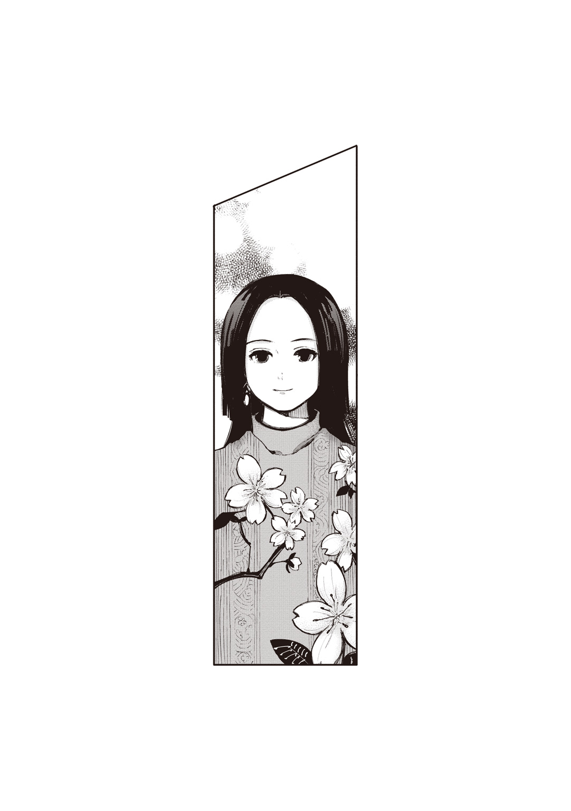
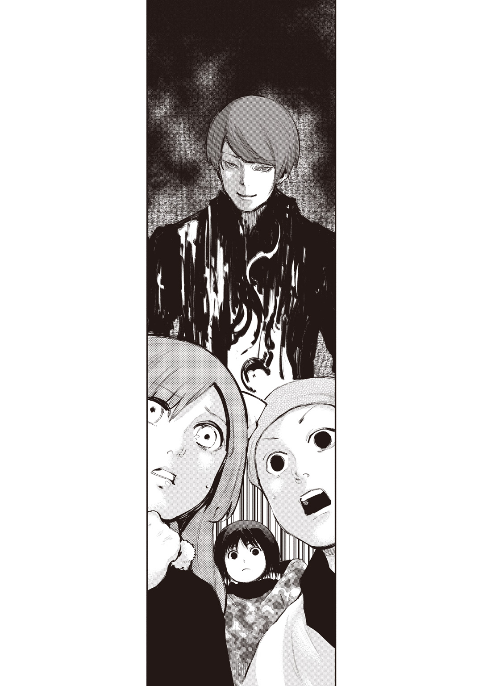

| 東京喰種トーキョーグール［空白］ | |
| 石田スイ & 十和田シン | |
この本は縦書きでレイアウトされています。
また、ご覧になる機種により、表示の差が認められることがあります。
登場人物紹介
金木 研 ●かねきけん
〝喰種〟の臓器を移植された青年。人でありながら人を喰う存在となる。その葛藤と困難が、彼の運命を動かしていく。
亜門鋼太朗 ●あもんこうたろう
〝喰種〟から人々を守り、世界の秩序を正すため、日々戦い続ける喰種捜査官。〝喰種〟とは孤児院にいた頃から浅からぬ因縁がある。
守峰恭平 ●もりみねきょうへい
８区の警察署の警部補。『女子高校生行方不明事件』を捜査している。
内海小春 ●うつみこはる
亜門と出会った品のよい女性。何かのトラブルに巻きこまれているようだ。
アサ
〝喰種〟。見た目は派手なヤンキーだが女性。ウタのようなマスク屋になりたいと思っている。
ウタ
４区でマスク屋を営んでいる〝喰種〟。ヨモとは昔、揉めていたが現在は和解したという。
山方ツムギ ●やまがたつむぎ
アサが驚くほどに美しいマスクを造った人間。ウタとも親交があるようだ。
月山 習 ●つきやましゅう
〝喰種〟。食にこだわる〝美食家〟である。今はカネキにご執心。
掘 ちえ ●ほりちえ
ホリチエ。月山とは高校からの付き合い。写真を撮るため今日もどこかを駆けている。
桃池育馬 ●ももちいくま
地方から上京してきた〝喰種〟。ミュージシャンを目指している。
三葉 ●みつば
女子大生アイドル。自己主張に乏しい性格で、何故アイドルになったのかファンでも不思議がる。
霧嶋董香 ●きりしまとうか
〝喰種〟の少女。［ＣＣＧ］からは『ラビット』と呼ばれ危険視される。高校に通い、友人もいる。
笛口雛実 ●ふえぐちひなみ
両親を喰種捜査官に殺された〝喰種〟の少女。カネキと行動を共にする。
万丈数壱 ●ばんじょうかずいち
リゼを慕っていた元11区リーダー。弱い。カネキと行動を共にしている。
五里美郷 ●ごりみさと
13区所属の喰種捜査官。亜門のことが気になる...。
黒磐 巌 ●くろいわいわお
篠原には〝いわっちょ〟と呼ばれている特等捜査官。頑健な身体で戦う。
一
確固たる信念、作りあげた壁の向こうに、自分の知らぬ世界があるのだろうか。
「......８区への応援、ですか？」
思わずそう訊き返したのは、薄いレースのカーテン越しに西日が差しこむ病室でのことだった。窓を背に、備えつけの丸椅子に腰かけていた亜門鋼太朗は驚きに目を見開く。
病院のベッドに横たわるのは、亜門の上司、篠原幸紀。不屈の篠原と呼ばれる彼が、今はギプスに包帯、打撲に内出血、無傷な箇所を探すほうが困難なのではないかと思うほど手ひどく傷を負っている。
「そ。〝今回の件〟で、深刻な人材不足に陥ってることは亜門もわかっているだろうけど、その中でも23区は重症だ。突然の〝コクリア〟襲撃に駆けつけ、最前線に立った23区の捜査官達が軒並みやられてるんだからね。まったく、組織化した〝喰種〟だなんてタチが悪すぎるよ」
この世にはびこる絶対悪であり、人と同じ姿形を持ちながら、人を喰らうおぞましき存在〝喰種〟。奴らは己の欲望のままになんの罪もない人々を殺め血肉をすする。
それらを駆逐するために誕生したプロフェッショナルが、我々 Commission of Counter Ghoul、通称〔ＣＣＧ〕だ。
亜門は〔ＣＣＧ〕のアカデミーを首席で卒業したエリートで、対〝喰種〟のために開発された武器〝クインケ〟を使い、喰種捜査官として日々奮闘している。
その功績が認められ、11区に根城を置き捜査官狩りをしていた〝喰種〟組織「アオギリの樹」掃討作戦に加わったのがほんの数週間前のこと。
全容がつかめない〝喰種〟組織。しかも、十年前〔ＣＣＧ〕に壊滅的な被害を与えた謎の怪物〝梟〟の出現まで重なり、戦いは熾烈を極めた。
そして、多くの犠牲を払いながらもアオギリを制圧したと思われた自分達に、勝利の余韻に浸る間もなく告げられたのは、23区にある喰種収容所〝コクリア〟襲撃の一報。
アオギリの狙いは最初から〝コクリア〟に収容された〝喰種〟達を解放することだったのだ。
捜査官が苦心して捕えた〝喰種〟達が街に解き放たれ、現在も捜索が続いている。早く対処しなければ、新たな悲劇を生み出すだろう。
「今、問題の23区には本局から精鋭達が投入されてるけど......、その周辺の守りにまで手が回っていない状態だ。そこで、亜門には23区に隣接している８区に加勢してほしいってわけ」
「なるほど......。ですが篠原さん。パートナー不在の俺が、単独で乗りこんで大丈夫なのでしょうか」
新人だった亜門に捜査官としてのイロハを伝授してくれた真戸呉緒上等捜査官を失ってから、亜門はパートナー不在のまま行動している。新たなパートナー選出までの代行措置として面倒を見てくれていた篠原も、アオギリ戦で負傷し、今は寝返りを打つのも辛い状況だ。
「なに、今回の件で、亜門の実力は広く知れただろうし、とにもかくにも人材不足だ。形式に拘ってる場合じゃないんだよ。ま、８区の後任が決まるまでの暫定措置だから一か月あるかないかだ」
「そうですか......。わかりました。20区のことも気がかりですが、８区の力になれるよう奮励してきます」
「おお、頼むね。これで少しは８区の奴らも肩の荷が下りるだろ。クレームがすごくて頭抱えてるようだから」
「.........？」
「いや、どこも大変、って話だよ」
それから、一言二言言葉を交わし、長居しては傷に障るだろうと病室をあとにした。
病院の廊下は看護師が行き来しており忙しない。その足音を聞きながら、亜門は廊下の窓から街の景色を眺めた。視線をスライドさせるように落とすと、病院沿いの並木道に歩く人々が見える。亜門はそれをじっと見つめた。
（眼帯......）
聞こえていた音が遠のき、頭をよぎったのは「アオギリ」掃討戦での出来事。戦闘の合間、壊れた窓枠から見下ろしたその場所に、あの眼帯がいた。自分を逃がしたあの眼帯が。
眼帯のことを思い出すと、同じように蘇る光景がある。
憎しみは鮮明に、思い出は陽炎のように。
――......鋼太朗。
育ての父である〝喰種〟もまた、亜門を――。
二
翌日早朝。亜門はアタッシュケースを手に８区支部傍にある駅に降り立った。８区は沿岸部にあり、風向き次第では潮が香ることもある。
出勤通学の人波に紛れながら駅を出て８区支部の場所を探すように地図を見ていると、「どこかお探しですか？」と声をかけられた。振り返れば、品のいい女性が立っている。見た目から推測するに、同年代だろう。

傍には母親だろうか、年配の女性の姿もある。こちらは落ち着きなく視線をさまよわせ、何かに怯えているように見えた。
「あ、ああ、〔ＣＣＧ〕の８区支部を......」
「それなら三つ先の角を曲がって、大通りをまっすぐ歩いたらわかりやすいと思いますよ。ほら、あそこ。角に見える本屋さん、あれを曲がるんです」
「なるほど、あそこですね。ありがとうございました」
言われた道を進んでいくと、すぐに８区支部が見えてきた。亜門はネクタイを締め直し、自動ドアを潜る。受付に自分の名と捜査応援に来たことを伝えると、会議室に案内され、五分ほど待っているとスーツに身を包んだ男性二人組が現れた。
「亜門君、わざわざ８区まですまないね」
「柳上等。今は８区担当でしたか」
先に右手を差し出し握手を求めてきたのは中堅捜査官、柳だった。目立った功績は乏しいが、順応性が高く堅実堅固な仕事ぶりで、人員不足の地区に穴埋めとして派遣されることが多い。亜門も過去に何度か顔を合わせたことがある。
「俺達は〝コクリア〟襲撃後、８区担当になったんだよ。ま、過去に何度かここで仕事をしたことはあるから、問題はない」
今回も抜けた穴を埋めるために派遣されたようだ。しかし、元から８区にいた捜査官ではなく、途中派遣された柳が亜門の対応をするのはなぜだろう。８区の捜査官達が機能しない状態に陥っているのではないかという不安がよぎる。
「亜門一等！ アオギリ戦でのご活躍、お聞きしていますよ！ アカデミー主席はやっぱ違いますね！」
次いで話しかけてきたのは柳の部下、東条だ。亜門よりも年上なのだが、立場は二等捜査官。それに気を遣って敬語で話しかけてくる。年長者を立てる亜門にしてみれば階級など気にせず普通に話してもらいたいのだが、明るく社交的な東条に言っても、「俺、敬語で話すの好きなんで！」と煙に巻かれてしまう。
「いえ......アオギリ戦は特等や准特等、上等、上位捜査官達の戦いぶりを見て、己の力不足も感じる戦いでした。俺なんかまだまだです」
「そうですか？ 参戦できたというだけですごいことだと思いますけどねぇ。〔ＣＣＧ〕の最前線じゃないですか。あっ、珍しいクインケ使ってる人とかいました？ あと、三等なのに参戦した〝鈴屋什造〟ってどんな......」
好奇心を抑えきれずあれこれ聞こうとする東条を、「それくらいにしておけ」と柳が諫める。逃げるように下がった東条を睨みつつ、柳は持っていたファイルを机の上に置いた。
一番初めのページには、各地区の地図がファイリングされている。
「急遽派遣された俺達が亜門君の対応をしていることを考えれば、すでに推測しているかもしれないが、現在、８区でまともに動ける捜査官は俺達だけだ」
どうやら嫌な予感が的中してしまったようだ。柳は険しい表情を浮かべている。
「23区から脱走した〝喰種〟の一部が人を喰らいながら８区を通過し、逃れようとしたため、戦闘になってな。多くの死傷者を出した」
柳は地図上の８区をぐっと押さえる。
「相手はレートＡの脱走者。特別強いわけではない。だが、運が悪いことに、本局の喰種捜査官が８区に一人もいなかった。こう言うと上層部批判になってしまいそうだが、有能な捜査官のほとんどがアオギリ戦にとられていたからな......」
亜門自身も、今回の11区特別対策班の選抜名簿を見た時、23区付近の戦力層の薄さを懸念していた。亜門達がいる20区は指定危険区になっているため、法寺や滝澤が待機していたが、８区は指定危険区だったわけではない。もともと捜査官が少なかったところにこれだ。
「その〝喰種〟はどうなったんですか？」
「俺達が倒して〝コクリア〟に送還したよ」
「柳上等達が？」
柳と東条が揃って頷く。
「さっきも言った通り、俺は８区で仕事をしたこともあったからな。〝コクリア〟襲撃の連絡が入った時、脱走した〝喰種〟が23区に隣接した８区にも流れこんでくるんじゃないかと心配になって向かったんだ」
「本局からは23区に向かうよう指令が入ってたんですけどねー」
「23区は強い奴らが行くだろうから俺らはいいだろうって。ま、勝手な自己判断さ。その途中、昔、一緒に仕事をしていた８区の局員捜査官から『８区で〝喰種〟が暴れてる』、って連絡が入ったんだよ。なんとか現場に駆けつけた時には......そいつは喰われていたが......」
当時の惨劇を思い出したのか、柳が唇を嚙みしめる。
「その流れで、俺らは８区担当になったんですよ。23区隣接区域は、22区、７区、そしてここ８区の三つです。で、〝コクリア〟襲撃後、脱走者が大量に流れこんだと思われる22区には上位捜査官が投入されました。７区はもともと〝喰種〟の社交場と噂されている、喰種レストランがあった影響で配属捜査官が多い。なのに、なのに！」
そこで東条はぐっと拳を握る。
「当初はここ８区にも上位捜査官派遣するって言ってたのに、俺達が退治した〝喰種〟を送還したあとは脱走者関連の事件がないからって放置ですよ！ そのせいで、23区隣接区域だってのにたいして強くもない柳さんと俺しかいないという大惨事状態......あだッ」
熱弁する東条の頭を、柳が思いきり殴りつける。
「ゴホン。話を戻すが、亜門君。今回はＳＳレートのバケモン達にまで逃げられてしまった大事件だ。23区を中心に脱走者が原因と思われる事件が頻発している。それを思えば８区の優先順位が他より低いのもしかたがない。自分達のことは自分達でやれってことだ」
少ない人数で、どうやって区民の安全を守るか、それが柳達に課せられた問題らしい。８区の現状は少なからず理解した。
「でしたら、俺は何をしたらいいでしょうか？」
「ひとまず今日のところは一緒に区内を回るとしようか。それ以降は、23区への警戒と治安維持に努めてほしい。〝喰種〟被疑者の捜索が後回しになってはしまうが、襲撃された〝コクリア〟の修繕もまだ不完全な状態だ。なにが起こるかわからない」
「わかりました。どうぞよろしくお願いします」
「ああ。じゃあ、行こうか」
三人は準備をすませると、会議室をあとにし、エレベーターへと乗りこんだ。そこで、柳がいくらか表情を和らげ、
「......いや、しかし、来てもらえて本当にありがたいよ。さっきも言ったように、８区に勤務していた捜査官の多くがやられてしまってね。８区支部の業務が滞り、各方面から苦情がきていたんだよ」
「各方面？ 本局からですか？」
「いやいや、そうじゃない」
エレベーターが一階に到着し、ロビーに向かって歩きながら柳が首を横に振る。
「我々捜査官は、さまざまな業種の人間とも連携をとり、業務に当たっているからな。とくに今、頭を悩ませているのは......」
心底疲れた様子で柳が語るので、いったい何があったのだろうと話を聞いていれば、柳がすべて言い終わるよりも早く、乱入する声があった。
「だから何度も言ってんじゃねぇかよ！ なぁーんでそっちの都合に俺らがつき合わなきゃなんねーんだってな！」
ロビーに響き渡る男の声。柳と東条はまるでロボットのようにピタリと止まり、亜門はなにごとだと声を追う。
「ですからそれについては先日説明した通りで......」
「そっちがさっさと捜査結果出さないせいで、こっちはまったく進まねぇんだ！ どーしてくれんだよッ！」
見ればロビーの受付嬢に、乱暴に絡む男がいる。
「なんだあいつは......」
ワイシャツの裾をだらしなく垂らして、くたびれたスーツを羽織る三十代半ばの男。彼は受付台をバンバンと叩き、一方的に相手を罵倒しているようだ。
止めなければ。
責任感の強い亜門が大股で進み出る。
「あ、おい、待て亜門君！」
亜門は柳の制止を聞かず、受付嬢と男の間に割りこんだ。
「あァ？ なんだぁ？」
男はズボンのポケットに手を突っこみ、こちらを睨みつけてくる。
「相手が困っているだろう」
「困ってんのはこっちだっつーの。どけよ、今日こそ話つけてやる」
長身で体つきもがっしりしている亜門に注意されれば、男といえども怯むことが多いのだが、この男は動じないようだ。
「理性的に話ができないなら、警備を呼ぶぞ」
「......なんだと？」
「警備を呼ぶ、と言ったんだ。それでもいいのか」
最終通告に男はハッと鼻で笑う。こちらの言うことを聞く気はないらしい。こうなれば軽く投げ飛ばし、痛い目を見せてやろうと思ったのだが。
「亜門君、いったん引いてくれ！ 彼は......」
駆け寄る柳がすべて言い終える前に男はくたびれたスーツの内ポケットから何かを取り出し、亜門の眼前に掲げる。
「警察だ」
見せられたのは警察手帳。そこには、警察の制服を着て写っているこの男の写真と、警部補という階級「守峰恭平」という名が記されていた。
「けい、さつ......？」
「人間しょっ引くならこっちのほうが強いってんだよ」
男は手帳を元あった場所にしまうと、亜門を値踏みするようにじろじろ眺めた。
「柳サンと東条のツレっぽいところを見ると、あんたも喰種捜査官だな。......ふぅーん......」
亜門を止めようとしていた柳と、どうしたらいいかわからず見ていることしかできなかった東条は、失敗したと言わんばかりの表情を浮かべている。
「......確かにちっとガラ悪かったかもしんねぇーわ。それは謝る。すまん。そっちのねーちゃんも悪かったな」
男はひどく尊大な態度のまま謝罪してから、柳を見てにやりと笑った。
「柳サンよ、あんたたしか言ったよな、『せめてあと一人加勢が来れば、捜査が再開できる』って」
「守峰君、彼は今日来たばっかりで......」
「約束は約束だ！ 毎日足を運んだかいがあったぜ。おいあんた、しっかり協力してもらうからな」
「協力......？」
話が飲みこめない亜門が説明を求めるように柳を見る。柳は眉尻を下げ、ガリガリと頭を搔いた。
「えっと、亜門君。こちら、８区警察署の刑事課、警部補の守峰恭平君だ。こう見えても大変優秀な刑事さんだよ」
「守峰恭平です、よろしくお願いします」
紹介された男、守峰は、先ほどまでの態度とはうってかわり、ビシッと敬礼した。その所作だけ見ると、確かに警察らしい。
「守峰君、こちらは20区から急遽応援に来てくれた亜門鋼太朗君だ。この若さで一等捜査官を勤めている」
「ん？ もしかして東条より若ぇの？ んで、一等捜査官？」
「やめてください！ デリケートな問題ですよ、それは！」
「東条、お前二等じゃなかったっけ」
「だからやめてくださいって！」
「でも東条よりも年下だよな？ 一等より二等のほうが偉いの？」
「一等のほうが偉いに決まってんでしょ――――ッ!! ......あだッ！」
叫ぶ東条を柳が叩いて黙らせる。
亜門は戸惑いながらもひとまず「亜門鋼太朗です」と自分の名を伝えた。
「......しかし、刑事がなぜここに？」
未だこの男が刑事だということが信じられないのだが、話を聞かないことには始まらない。すると守峰は、
「三か月前に起きた『女子高校生行方不明事件』の件で来てんだよ」
と言う。
「女子高校生行方不明事件......？ その事件に〝喰種〟が関与してるってことですか？」
隣に並ぶ柳に聞いたのに、守峰が「違ぇよッ！」と否定してくる。
「これは絶対人間の仕業だ！ なのにお偉いさん方は〝喰種〟反応がちょーっと出ただけで騒ぎ立てて、〔ＣＣＧ〕に丸投げしちまった。そしたら〝喰種〟の危険性があるからどーたらこーたら七面倒くさい規制がついて、自由に捜査もできやしねぇ！」
早口で不満をぶちまける守峰だが、柳が「守峰君、ちょっと落ち着いて」と諫めつつ、かみ砕いて説明する。
「三か月前に女子高校生が行方不明になって警察が捜査してたんだけど、先月、その行方不明になっていた『平野舞』さんの髪留めが見つかってね。その髪留めを警察が検査したところ、〝喰種〟のものと思われる体液が付着していたんだ。それで、警察のほうから協力要請があったんだけど......」
「『担当捜査官は軒並み病院送りで捜査再開の目処は立たず』！」
ここにきてようやく亜門は理解する。アオギリ戦後の人員不足により、この事件の捜査が手つかず状態であることを。
「そりゃ、あんたらが命懸けて戦ってくれてんのはわかるけどな、こっちだって人命がかかってんだ！ いつまでもほったらかしにされるワケにはいかねぇんだよ！」
守峰は腕を組み亜門達を睨みつけてくる。
「柳さん、その〝喰種〟の体液から犯人特定にはいたっていないんですか？」
「残念ながら〔ＣＣＧ〕にとっては『初めまして』の相手になる」
もし、過去に人を喰い、その喰われた遺体を〔ＣＣＧ〕側が調査していれば、遺体に付着した体液や赫子痕等が資料として残り、襲った〝喰種〟に個体番号もつく。新たに事件を起こした場合もすぐ照合され捜査の助けになるのだが、今回は初出の〝喰種〟らしい。それは、零からの捜査を意味する。
「だったら〝喰種〟被疑者が事件に関与している可能性は？」
〔ＣＣＧ〕には常にマークしている〝喰種〟被疑者がいる。その中の誰かがこの件に関与していることがわかれば〝喰種〟駆除にも繫がるのだが。
「まさにそれを調べている最中で、捜査官達が病院送りにされてしまってね」
「なるほど......。それで手つかず状態なんですね。かといって、こちらの情報を開示するわけにもいきませんし......」
市民の平和を守るという共通点はあるが、警察と〔ＣＣＧ〕は性質が異なる。
とくに〝喰種〟という特殊分野を扱う〔ＣＣＧ〕は、その特異性により守秘義務が課せられ、外部への情報提供も制限されていた。〝喰種〟被疑者の資料を渡し、あとはそっちで調べろ、などというマネはできないのだ。それが、守峰の苛立ちに繫がっている。
「犯人が〝喰種〟である可能性が出ちまった以上、こっちは迂闊に動けねぇ。なのにあんたらはほったらかし。もしかしたら行方不明になった女子高校生が、今もどこかで助けを求めてるかもしれねぇんだぞ！ 何もしねぇならこっちに話戻してくれよ！」
「守峰君、こちらも手を尽くして、〝喰種〟の可能性が零だと導き出さないことには警察に戻せないんだ」
「ああ、何度も聞いたさ！ 耳タコってくらいな！ で、言ったんだよ、柳サン達は。自分達の他にも喰種捜査官が派遣されれば捜査もできるようになるって。だよなッ？」
守峰が柳にぐっと近づき、確認するような物言いをする。柳は困り果てた表情のまま、守峰の肩を両手で押して離れた。
「守峰君、俺だって女房子供がいる身だ。〝喰種〟のことは抜きにしても、この事件には胸を痛めているよ。捜査だってもちろんやるつもりだ。ただ、亜門君は今日来たばかりなんだ。８区の安全を守るためにも、もう少しだけ時間がほしい」
「もう十分すぎるほどこっちは待った！ 今すぐにでも再開してほしい。うんと言うまで俺ぁ、ここを動かねぇぞ！」
守峰の目が、柳を、そして亜門をまっすぐに射抜く。
「......わかりました」
今度は亜門が柳と守峰を見た。
「わかりました、って......亜門君？」
「柳上等、この件、俺が調査しましょう」
とん、と自分の胸を叩いて言えば、一瞬静まり、しかしすぐに声があがった。
「よっしゃーッ！ 男に二言はねーな!!」
「ちょ、ちょっと待ってくれ亜門君！」
「いやいやいやいや、亜門一等！ 亜門一等ッ！」
守峰は大喜びだが、柳と東条は血相を変えている。柳達は亜門の腕を引っ張ると、守峰から距離をとった。
「亜門一等、こういう地味な作業は、華々しさの欠片もない俺達がやったほうが......あだッ」
またしても東条を殴りつけた柳だが、気持ちは東条と一緒らしい。
「亜門君、なにごとも適材適所だ。８区のことをあらかた伝え終えたら、俺達がこの事件の調査をする。君には23区への警戒と８区の治安維持を......」
しかし亜門は「いいえ」と否定した。
「俺はまだ８区にそこまで詳しくありません。23区からの脅威に気を配らなければいけないことを考えれば、より広い視野で８区を見られる柳上等達のほうが向いていると思います」
「亜門君......」
「〝喰種〟被疑者捜査は区内をくまなく動き回りますから、そうしているうちに８区のことも把握できるでしょう。それに、少しでも〝喰種〟が関与した可能性のある事件であれば、放置はできません」
第一、人々の平和を守るべく日々奮闘している自分達が、事情があるとはいえ警察側に一方的に非難されるのは亜門のプライドが許さない。
曇った表情を浮かべていた柳も、亜門の言葉に「そうだな」と頷く。
「......守峰君！ 彼に行方不明事件の資料を渡して引き継ぎをする時間くらいは貰えるか？」
柳の言葉に守峰は親指と人差し指をくっつけてＯＫマークを作った。
三
手早く情報の引き継ぎを終えたあと、どこか心配そうな柳達と別れて亜門は駅へと歩きだした。リストアップされている〝喰種〟被疑者の一人が駅近くのアパートに住んでいるからだ。
隣には刑事の守峰が並んでいる。
「......調査報告書は警察署に送るが？」
「あんた、８区慣れてねーんだろ？ 案内役がいたほうがいいと思うぜ。ちなみに駅への近道はあっち」
守峰はビルとビルの隙間、細い脇道を指さす。なぜ、自分が駅に向かっていることがわかったのだろう。亜門が手にする資料を盗み見したのであれば気分はよくない。
それに気づいた、守峰が、「や、見てねーよ」と言ってくる。
「慣れてない割に〔ＣＣＧ〕の建物出てすぐ、立ち止まることもなく歩きだしたからよ、知った場所に行くのかって思ったら、駅かなってな。電車でここまで来たんだろ？」
守峰の言う通り、車での道路渋滞を恐れ、電車を利用しここまで来ていた。粗野に見えるこの男が、こういうところに気づくことを意外に思ったが、少し考えればわかることかと切り捨てる。
「......守峰さんはどうして刑事に？」
いまいち信用ならないが、仕事には意欲を持って取り組んでいるのだろう。前向きな答えを期待して尋ねたが、返ってきたのは「流れだよ」という、ずいぶん消極的な言葉だった。
「流れ......？」
「ああ。それ以外の道がなかったからやってるだけだ」
「自分の仕事に誇りを持っていないのですか？」
「誇りィ？」
守峰はどこか小馬鹿にするように鼻で笑う。
「持ちようがないね。っと、それより、駅までだろ。俺が先導するから、あんたは資料読んでろよ。わかんねぇことがあったら訊いてくれ」
調査再開を訴えるために、あれだけの熱意を持って〔ＣＣＧ〕まで乗りこんできていたというのに、警察という職業に対してずいぶん否定的に見える。
釈然としない思いを抱きながらも会話を打ち切り前を歩く守峰を見て、亜門は柳に貰った資料に目を落とした。
『女子高校生行方不明事件』。
今から三か月前、部活が終わり、帰宅途中だった平野舞が忽然と消えた。当人は夜遊びなどしたことがなく、交友関係も健全。
目撃証言は少なく、彼女らしき女子高校生を見かけはしたものの、不審な動きはなかったとのことだ。
捜索の決定打となるものが乏しいなか、ようやく見つかったのが、彼女の髪留め。
しかし、その髪留めが見つかった場所は......。
「......８区警察署傍？」
「おうよ。警察署前の通り沿い、目立つ場所に置いてあった」
そして、それに〝喰種〟の体液が付着していたという。
「誰かが発見して警察の前に置いたのか......？」
「だったら直接警察に渡してくるだろ。渡せない事情があったなら別だけどよ」
「渡せない事情......」
「この事件に関与してる、とかな」
そこで、守峰がこちらを振り返る。
「亜門サンよ。さっきも言ったけど、これは人間の仕業だと思うぜ」
そういえば柳と言い合っていた時も、彼はそう主張していた。
「だが〝喰種〟の体液が付着していたんですよ」
だからこそ自分達に話が回ってきたのだ。
「ああ。だけどよ、髪留め、警察署傍に置かれてたんだぜ？ 警察頼ったってことは、捕まえて欲しい奴は人間だろ、そりゃ」
「それはあまりにも短絡的すぎませんか？ 民間にとって親しみやすいのは〔ＣＣＧ〕よりも警察でしょう。だったら真っ先に警察を頼ってもおかしくない」
「違ぇんだよなぁ」
守峰は含みのある言い方をし、視線を外す。
「......これはもっと根深い話なんだよ」
「.........？」
そこまで言うと、守峰は、「もうすぐ駅着くぜ」と言い、口を閉ざした。
結局その日はたいした成果もなく、町中歩き回るうちに日が暮れた。
今日のところはいったん切りあげ、〔ＣＣＧ〕に戻ることを伝えると、守峰は「ご苦労様でした」と敬礼し、去っていく。途中、こちらを振り返り、「明日も行くんで」とつけ加えた。
「亜門君、ご苦労だったね。どうだった？」
「守峰さんとうまくやれました？」
８区支部に戻ると、自分を心配して待っていたのか柳と東条が歩み寄ってくる。
「今日のところはなんの成果もありませんでした」
「そう簡単に結果は出ないさ。今は８区に慣れることを念頭に置けばいい。そうだ、亜門君、少しひっかけないか？」
柳はクイッと酒をあおる仕草を見せる。情報交換と歓迎の意味合いもこめているのだろう。昔は〝喰種〟捜査に情熱を注ぐあまり、こういった時間を疎ましく感じることもあったが、亜門は「ぜひ」と返す。それは、自分を献身的にフォローしてくれる20区の局員捜査官、中島や、捜査官としてだけではなく、人としてもさまざまなことを教えてくれる篠原の存在が大きいかもしれない。
柳に連れられてやってきたのは落ち着いた雰囲気の小料理屋だった。
「柳さん、奥さんが料理上手だから、安っぽい店じゃ飯食えないんすよ」
「うるさいぞ東条」
奧の座敷にあがりながらニヤニヤ笑う東条を柳が小突く。
「柳さんはお子さんもいらっしゃるんですよね」
「息子が一人な。まだ小学生だ。最近急に調理師になるなんて言いだしたよ。誰でも美味しく食べられる料理を見つけるんだとさ。嫁に似たのかもしれん」
「調理師ですか。ちゃんと目標まであっていいですね」
亜門はおしぼりで手を拭きながら感心する。流れで今の仕事をしているなんて言っていた守峰とは大違いだ。
「まぁ、まだ小さいからどうなるかわからんが......俺自身もあの子が大きくなるまで生きていられるかどうかわからんし」
柳は淡々とそう語る。喰種捜査官は死と隣り合わせ。いつその順番がくるかわからない。家族を持つ捜査官はその順番について考えることも多いだろう。一瞬、空気が重くなったが、それに気づいた東条が敏感に反応する。
「柳さんはすーぐそうやって暗い話をする！ 大丈夫ですって、成長した息子さんが作った料理をたらふく食べられますよー！」
しかし、柳は逆にむっとしたようだ。
「お前がポジティブすぎるだけだろうが。まったく、せっかく長距離攻撃可能な羽赫クインケを持ってるくせに、ことごとく的外しやがって。射撃の練習をしろ、射撃の！」
「してますよ！ でも『ノヤマ』が言うこと聞かないんですってば！」
東条がすぐ傍にあったアタッシュケースに抱きつく。彼のクインケはノヤマという名前らしい。柳は「そんなんだからいつまでたっても昇進できないんだ」と呆れ顔だ。
「東条さんは羽赫なんですか」
「そうなんです。柳さんが尾赫で前線に出るので、その援護を」
「そのせいで、俺が撃ち殺されそうになったこともある。〝喰種〟じゃなくてお前のせいで息子の成長を見れなくなるんじゃないのか......」
ぼやく柳を無視するように、東条は亜門のアタッシュケースを見た。
「亜門一等のクインケは甲赫でしたよね」
「ああ『クラ』です」
名前を聞いて、柳が「『クラ』？ ああ、真戸上等の......」と呟き、しみじみ眺める。柳が言うように、このクインケは今は亡き真戸から受け継いだものだ。これのおかげで、アオギリ戦では幹部の一人である尾赫の瓶兄弟も倒すことができた。
「柳さんは真戸さんと交流が？」
「たいした交流はないが、何度かクインケの話を聞いたことがある。真戸上等のことをいろいろ言う奴は多かったが、俺は人のことが言えないくらいクインケの扱いが得意じゃないもんだから、クインケを扱う技術と造詣が深い真戸上等が単純に羨ましかったよ」
亜門の脳裏に、大事そうにアタッシュケースを抱える真戸の姿がよぎる。そんな亜門を見ながら、柳が「そういえば」と何か思いついたかのように声をあげた。
「真戸上等といえば、ご息女が――」
「お待たせしました」
言い終わる前に料理が運ばれてくる。
「っと、思い出話で終わってしまいそうだな。ほら、食べてくれ。ここの飯は旨いから」
もっと真戸の話を聞きたかったが、亜門は頭を下げて料理を口に運んだ。
「しっかしまー、もし〝喰種〟が犯人なら、女子高校生をどこに連れていってしまったんでしょうねぇ......〝喰種〟の体液が付着した髪留めが見つかったとはいえ、捕食された姿が見つかってないわけですから、実は家出でした......なんてことはないのかなぁー」
「東条、守峰君に聞かれたら怒鳴られるぞ」
「でも、それなら生きている可能性だってあるわけじゃないですか？ 亜門一等はどう思います？」
話を振られ、亜門はいったん箸を置く。
「今日の段階ではなんとも言えないというのが正直なところです。ただ......」
「......ただ？」
亜門は背筋を伸ばし、断言する。
「〝喰種〟であるならば、必ず見つけ出し駆除します。絶対に」
亜門の意気ごみに東条が、「そ、そうですよね」と圧倒された様子で頷いた。
「ひとまず、亜門君はこの事件に集中してくれ」
「わかりました」
酒宴は三時間ほど続き、二件目に行きましょうとねだる東条を柳が切り捨て解散となった。
亜門は街の夜の雰囲気も確認しておくため、柳達とは別れ、一人８区を歩いている。
「目撃証言もない。捕食された女子高校生も見つかっていない。そうなると、俊敏にさらい、住み処まで運んでいった可能性がある......。羽赫の可能性が高い、か......？」
〝喰種〟はどれも優れた身体能力を持っている。その中でも羽赫の瞬発力は他を圧倒するものがあった。
亜門は柳にもらった資料の中に、８区で捕食活動を繰り返す羽赫の〝喰種〟がいるかどうか確認した。
「......いない、か......」
だったらどこからか流れ着いた〝喰種〟かもしれない。女子高校生ばかり狙っていた羽赫がいないか、他支部からも情報提供を求めようと思い時計を確認する。
「今日のところは帰るとするか」
亜門はクインケの入ったアタッシュケースを持ち直し、駅へと向かった。
「......ああ、こっちが近道だったな」
途中、守峰に教えられた脇道へと入っていく。細く狭いこの道は、足下を照らす街灯も少ない。おそらく、地元の者くらいしか知らない道だろう。
「.........？」
自分の足音だけが響く中、しばらく歩いていると、ふと、どこからか声が聞こえた。進むごとにその声が大きくなってくる。
見れば道の先で若い男女が言い争っていた。
「なに言ってんだよ！ あと少しで全部手に入るんだぞ！」
「ごめんなさい、お願い、もうこれを最後にしたいの......」
どうやら男が女を責めているようだ。女は涙声で、バッグから白い封筒を取り出し、男に渡す。男は封筒を奪い取ると、中身を確認した。目をこらしてよく見れば、どうやらそれは札束らしい。恐喝か。
「......おい、何をしているんだ！」
亜門はそう叫び、一気に二人へと詰め寄った。男女ともこちらに気がつき、目を丸くする。そのまま男を取り押さえようとした亜門だったが、女のほうが「違うんです！」と、男を背に庇うようにして両手を広げた。
「......チッ！ この馬鹿女、勝手にしやがれ！」
男は封筒を握りしめ、逃げるように駆けていく。
「あ、おい、待て！」
追いかけようとしたが、女は「違うんです、違うんです」と亜門の腕をつかんだ。
「ゆすられていたんじゃないのか？ ......ん？」
「あ......」
そして、二人揃って驚きの声をあげる。
光の乏しい脇道でようやく確認した顔は、朝、亜門に道を教えてくれた品のよい女性だった。その女性がこんな夜中に男に金を渡しているなんて。いったいどんな事情があるのだろう。
「お恥ずかしいところをお見せしましたね。本当にすみません......」
彼女は改めて詫びるように頭を下げる。
「でも、大丈夫ですから」
彼女は弱々しく笑い、もう一度頭を下げてから、亜門に背を向け歩きだした。しかし、その足どりは心許ない。
「......っ」
案の定、三歩も進まないうちによろめき、その場に座りこんでしまった。
「......大丈夫ですか」
「すみません、すみません......」
亜門が手を貸し立ちあがらせてやると、彼女は申し訳なさそうにまた頭を下げる。
「そんな調子で歩けるんですか。どうやって帰るつもりです」
「駅に行けば、うちの者が待ってくれています。だから大丈夫です」
見た目は品がよく、善良そうだが、さすがに不審な点が多すぎる。金の動きも怪しく感じた。
「......俺も駅に向かう途中です。一緒に行きましょう」
そこに、こちらに見られてはまずい仲間がいるのではないかと勘ぐり、進言する。
「ですが」
「朝、道を教えてもらいましたから」
同行するためだけの理由だったが、亜門の言葉に女性はどこか嬉しそうに微笑んだ。
「では......少しの間、お言葉に甘えて」
「ええ」
移動中、会話はなく、足音だけが響く。女の歩みは遅く、本来であれば三、四分のところを十分かかった。
「小春お嬢様！」
大通りからの光が差しこんできた時、自分達に気づいた誰かが声をあげる。小春。どうやらそれが彼女の名前らしい。見れば朝方、彼女の傍にいた年配の女性が駆け寄ってくる。お嬢様、と呼んでいるということは、親子ではなかったようだ。
「オトカゼさん、待たせてごめんなさい......」
「いえ、いいんです。ですがこの方は......」
オトカゼと呼ばれた年配の女性は、隣に並ぶ亜門を無遠慮にジロジロ眺めた。
「立ちくらみを起こした私を心配して、ここまでつき添ってくれたの。覚えているかしら、朝もお会いした人よ」
小春が丁寧に説明しても、オトカゼの探るような視線は外れない。それが、亜門を警戒しているように見えた。先ほどの恐喝めいたやりとりに、封筒に入っていた札束、オトカゼの亜門に対する態度。小春は何か問題を抱えていると見て間違いないだろう。
「何があったか知りませんが、事件性のあることなら警察に伝えたほうがいいですよ」
亜門は小春に注意するように言う。
「こういうことは、自分さえ我慢すればどうにかなるという問題でもないんです。あなただけではなく、他の人にまで被害が及ぶ可能性だってあるのですから」
彼女自身に起こりうる何かを伝えるよりも、周りに及ぼす影響を語るほうが理解しやすいだろう。亜門の言葉に、彼女はハッとした様子で自分を見る。
「他の人にまで......ああ、そうですよね、本当だわ......」
彼女は亜門の言葉を嚙みしめるように、小さく頷いた。
「......お優しいんですね」
小春は、穏やかな笑みを浮かべそう言った。真っ白い頰に、赤みが差している。ただ、亜門は、「そういうわけではありません」ときっぱり否定した。
「あの、お名前をお訊きしてもいいでしょうか」
「名前ですか。亜門鋼太朗です」
「鋼太朗さん......、素敵なお名前ですね。何かお礼ができればよかったのですが......」
「気にしないでください。朝の礼です」
「......本当にお優しいんですね。ありがとうございました」
小春は深々と頭を下げ、オトカゼと共に駅近くに停車していたタクシーに乗って消えていった。
「......来て早々疲れることだらけだな」
今の小春も、そして、刑事の守峰も。亜門はひとつ息をつき、ようやく帰路についた。
四
８区に応援勤務に来て一週間。亜門は女子高校生行方不明事件の捜索に明け暮れていた。女子高校生が消えた時間〝喰種〟被疑者達がどこにいたのか、アリバイを調べていく。隣には刑事、守峰の姿。この一週間、毎日毎日亜門について回っている。
「女の子が消えた日、アリバイがないのは二人か。この二人をさらに調査する必要があるな......」
「俺は全員シロだと思うけどねぇー。さっさと〝喰種〟関係なしのハンコ押してこっちに戻してくれよ」
守峰は何かにつけて亜門の調査を否定してくる。
「いちいちこちらの捜査に口出ししないでくれませんか。それに、なぜそんなことが言えるんです。髪留めには〝喰種〟の体液が付いていたんですよ？ 何らかの形で〝喰種〟が関わっているのは間違いない」
「関わってるかもしんねーけど〝喰種〟被疑者の中にはぜってーいないって」
「だからその根拠は？」
「髪留めが〔ＣＣＧ〕じゃなくて警察署傍に置いてあったことだよ」
亜門は額を押さえ首を振る。捜査に口を出し、根拠を訊ねるたびに彼はそれを持ち出すのだ。しかも、それ以上の説明は何もない。
「捜査の邪魔をするなら帰ってください。他にも仕事はあるでしょう」
「悪ぃけど、調査が終わるまでは同伴するぜ」
もしかすると、こうやって傍で圧力をかけ続ければ、億劫に思ってさっさときりあげると思っているのだろうか。
「〝喰種〟ではないというはっきりした根拠が自分の中で出るまで、この件を警察に戻すつもりはありません」
釘を刺すように亜門が言えば、守峰は「堅物」と正面切って文句を言ってくる。
「堅物でなにが悪いんです。俺は捜査で妥協したくないんだ」
「ホント、固くて青いわぁ......」
「馬鹿にするんですか」
「んなことねーよ。だけど、前だけ見てたら周りは見えねぇぜ？」
捜査に戻るように足を踏み出した亜門の後ろから、守峰はうんざりした表情を浮かべながらもついてくる。
人に堅物と言ってはくるが、守峰も相当な頑固者に思えた。
（俺は俺で捜査する）
気にしていてもキリがない。守峰にペースを乱されるのもしゃくだ。今はアリバイのない二名を洗い出すほうが重要。そう思いながら亜門は街に視線を巡らせる。
「......ん？」
そこで、見覚えのある女性が視界に入った。
「なんだ、知り合いか？」
めざとく気づいた守峰が尋ねてくる。
「ああ、いえ......」
世間は狭い。車道を挟んだ向こう側。俯き気味で歩くのは、オトカゼをつれた小春だった。
「んー......？ あれ、俺も、あのねーちゃん知ってるわ」
ところが、守峰まで彼女を知っていると言う。「知り合いですか？」と尋ねると、彼は、「知り合いではねーけど」と否定してから「聞きこみ調査で一回話したことがあるわ。美人だし、お供つれてるし、警察手帳見せた時、妙に驚いてたから覚えてる」と答える。
「警察手帳を？」
「おう。別に、なんの変哲もない警察手帳なんだけどな」
亜門も最初に見せられたが、とくに引っかかるものはなかった。
「なんか薄幸そうだよな、あのねーちゃん」
「薄幸そう？」
「や、ほら、顔いい奴って、それだけでチヤホヤされっだろ？ 自然と自分のツラに自信持つようになって堂々と歩くもんだよ。でも、あのねーちゃんは人目を避けるように歩いてるっつーか。苦労性っぽい匂いしねぇ？」
小春が歩く姿を見てそこまでは思わなかったが、亜門は一週間前、男に金を渡していた姿を思い出した。
「守峰さん、ここ一週間のうちに、恐喝等の被害届が８区警察署に出ていませんか？」
「今こっちにかかりっきりだから正確には把握してねーけど、聞いてはいないな。......なに、恐喝されてんのあのねーちゃん？」
「いや、はっきりとはわかりませんが......」
亜門は初日にあった出来事を守峰に語る。彼は「ふぅん」と鼻を鳴らして、通り沿いにあった病院に入っていく彼女を眺めた。
結局、この日もろくに収穫のないまま８区支部に戻った。柳達は喰種レストランがある７区の捜査官と情報交換をするために出払っている。亜門は柳達の報告書を確認してから退局した。
一週間も通えば慣れた道のり。頭の中で明日の段取りを組みながら脇道へと入っていく。
そういえば、20区のみんなはどうしているだろう。
何かあればすぐに連絡しますと、自分を慕ってくれている二等捜査官、滝澤政道が言っていた。連絡がないということは、変わりないということか。同時に、何の進展もないことも示している。
「〝ラビット〟も手つかずのままだ......」
亜門が担当する〝ラビット〟。羽赫を操る、軽い身のこなしの〝喰種〟だ。丸眼鏡がトレードマークだった若手局員捜査官の草場も、心の底から尊敬していた真戸もこいつに殺されてしまった。一刻も早く〝ラビット〟の正体を暴き、敵を討つことが彼らへの弔いにもなるはず。
もうひとつ、亜門が〝ラビット〟を追いかける理由があった。それは、〝ラビット〟と繫がりがあると思われる眼帯の〝喰種〟。「アオギリ」戦でも見かけたあの男。亜門は彼に聞きたいことがあった。
「......そうだ、俺はいつまでも立ち止まっているわけにはいかない......」
自分に与えられた役目をきちんとこなさなければ、あの〝喰種〟達に辿り着けるはずがない。亜門は、今来た道を振り返る。女子高校生行方不明事件。たとえ物証が少なくとも、情報が乏しくとも、もっと徹底的に、答えをつかむまで捜査するべきだ。亜門は大きく足を踏み出した。
「きゃっ」
しかしその途端、ドン、と何かにぶつかった衝撃と、女性の叫び声が聞こえる。どうやらすぐ傍にいた女性をはね飛ばしてしまったらしい。
「すまない、大丈夫か」
慌てて謝罪し、相手の女性に声をかけるが、顔を確認して戸惑いを覚える。
「あなたは......」
それは、昼間にも見かけた小春だったからだ。今は彼女をお嬢様と呼んでいた、おつきの女はいないらしい。
「あ、だ、大丈夫です......。すみません、声をかけるタイミングがつかめなくて」
周囲には彼女が持っていたのだろう荷物が散らばっている。なかにはカップケーキまで転がっていた。それに気づいた小春が慌てて拾う。
「......〔ＣＣＧ〕で働かれているようでしたから、このあたりで待っていれば、会えるんじゃないかと思って......。この間のお礼がしたかったんです。でも......」
彼女は崩れたカップケーキが入った箱を見る。どうやらこれは亜門のために持ってきたものだったらしい。
「礼をされるようなことはしていません」
「いえ。とても嬉しかったんです。誰ともわからぬ私に親切にしてくださって。でも、さすがにこれではお渡しできませんね......」
崩れたケーキを見ながら呟く小春だったが、亜門はスッと手を差しのべ、カップケーキをひとつ取った。そして、汚れた表面を軽く払い、口の中へと放りこむ。
「あっ」
ジャリジャリと砂の感触がいくらかしたが、味はよい。甘いものが好きな自分としては、少し甘みが足りない気はしたが。
「大丈夫でしたか......？」
怖々尋ねてきた小春に亜門は頷き「旨かったです」と手を合わせる。
「よかった。男性なので、甘さ控えめにしておいたんですけど......」
「もっと甘くてもいいくらいでした」
亜門は地面に置いていたアタッシュケースを持ちあげる。
「それよりも、あの夜の件、警察に届け出てないんですか？」
「あれは......。......今、迷って、います」
「迷っている？」
「まだ、いろいろと決心がつかなくて」
はっきりしないが、ちゃんと選択肢の中に入れているようだ。亜門は「正直に話したほうが、あなた自身も楽になれると思います」とアドバイスし、その場を去った。
五
「亜門君、ここのところずっと泊まりこみじゃないか。大丈夫かい」
早朝、すでに一人資料を広げデータを収集していた亜門の姿に、柳が驚きの声をあげる。
「おはようございます。体は鍛えているのでこれくらい問題ありません」
気合いを入れ直したあの日から、亜門は女子高校生行方不明事件の手がかりを見つけるため、８区支部に泊まりこんでいる。
「さすがとしか言いようがないね......。東条に爪の垢でも煎じて飲ませたいよ。どうだい、何かわかったかい？」
後ろから資料を覗きこんできた柳に、亜門は一枚のビラを見せた。
「なになに？ 『この子を見かけたら連絡ください』......亜門君が作ったのかい？ でもずいぶん古いし、名前が違うな。『瀬田はるか』......誰だい、彼女は？」
今回の事件で行方不明になっているのは『平野舞』。しかし、このビラに書かれているのは、『瀬田はるか』という女子高校生だ。紙も日に焼け朱茶色に変色している。
「ん......？ 日付が十八年前だね」
「そうなんです、柳さん。８区内で十八年前にも同様の事件が起きていたんです」
ビラに載っているのは、いたって真面目そうな少女の姿。やはりなんの前触れもなく、忽然と姿を消したらしい。
「それだけじゃなかったんです。十五年前にも８区で行方不明になった女子高校生の情報が新聞に載っていました」
亜門は新聞のコピーを柳に見せる。
「〝喰種〟が関わっていない場合、〔ＣＣＧ〕まで情報が回ってこないこともあるからな......。もしかすると、探せばもっと出てくるんじゃ」
「そうなんです。もしかすると今回の事件、我々が思っているよりも根深いのでは......」
そこまで言って、デジャヴを感じた亜門は口ごもった。同じ言葉を聞いた覚えがある。記憶を遡り辿り着いたのは、今回の事件を語る守峰の横顔だった。
――......これはもっと根深い話なんだよ。
「守峰君はこのことを知ってるんだろうか」
亜門の心をまるで読んだかのように、柳が疑問を口にする。
「そういった話は聞いたことがありませんでした」
「そうか......。知っていたら話してくれそうなものだがな。しかし、彼が知らないのはおかしい気もする。この手の資料なら、警察のほうにこそありそうだし。亜門君、守峰君に一度確認してみたらいい。今日も来るんだろう？」
時計を見あげれば、そろそろ守峰が訪ねてくる時間だ。亜門はビラを手に立ちあがった。
〔ＣＣＧ〕の出入り口を潜り、青々と繁る植木へ視線を送ると、しゃがみこみ、一人タバコを吸う守峰がいる。彼はすぐにこちらに気がついて、携帯灰皿に吸いかけのタバコを押しつけると立ちあがった。
「なんだぁ、今日は少し早めだな」
ズボンのポケットに手を突っこみ、のらりくらりと近づいてくる守峰に、亜門は手にしていたビラを突き出す。
「ん？」
守峰は片手を抜き出し、ビラを摘んで「おお......」と声を漏らした。
「ずいぶん懐かしい品だな......」
「十八年前にもこの町で同じような事件が起きている。これについては把握していたんですか」
守峰はチラリとこちらを見あげると、
「警察としては『把握していない』」
と答えた。
「警察としては......？」
組織としての回答を口にしたのだろうか。亜門は「だったら」と問いかたを変える。
「あなた個人としてはどうなんですか」
髪留めが警察署傍に置いてあったから。そんな理由だけで人間の仕業だと言っていた守峰。その答えの先に、彼しか知り得ない本当の情報があるのではないだろうか。守峰は何か考えこむように黙っている。いい加減、我慢が利かなくなった亜門が強い口調で問おうとしたところで、守峰が口を開いた。
「この......十八年前にいなくなった『瀬田はるか』は、花火大会の帰りに姿を消している」
このビラには、花火大会の情報までは書かれていない。彼は淡々と続ける。
「十五年前も女子高校生が忽然と消えた。さらには十三年前もだが、これは、隣の７区での出来事だ」
思い返すために黙りこむことも、記憶を辿るために言葉に詰まることも、まったくない。いったいどれだけそのことについて調べ、頭に、体にたたきこんだのか。
その事実が、亜門に強い怒りを覚えさせる。
「九年前は23区でボイストレーニング帰りの女子高校生がさらわれ、七年前には......」
朗々と語る守峰。気づけば亜門は守峰の胸倉をつかんでいた。
「それだけのことを知っておきながら、なぜ今まで黙っていたんだッ！」
情報があらかじめ提示されていれば、捜査の仕方も変わっていた。いや、それよりも、事件にまつわる事柄をろくに伝えもせず、非難ばかりしていた彼に憤る。人命がかかっていると言っておきながら、あまりにも無責任ではないのかと。
しかし、守峰は表情ひとつ変えない。いずれ亜門がこの答えに辿り着き、責められることもわかっていたかのように。
「亜門サン。警察は、おそらくこの事件最初の行方不明者である『瀬田はるか』失踪時、ろくに調査もせず家出で片づけたんだ」
守峰は胸倉をつかんでいた亜門の手を外すと、『瀬田はるか』のビラを見る。
「他地区での行方不明者は調査された区もあるし、それこそ〝喰種〟の可能性を疑って〔ＣＣＧ〕に協力依頼した区もある。ただ、どれもたいした収穫なく捜査は打ち切られた」
守峰はそこでいったん言葉を区切ると、息をつく。
「そうして放置状態のなか、今回８区の行方不明事件で〝喰種〟の体液が付着した髪留めが見つかったんだ。焦ったのは十八年前、８区で起きた『瀬田はるか』の行方不明事件を家出と処理して取り合わなかった男だよ。そいつが今、刑事課のトップにいる」
「それじゃあ、まさか」
嫌な予感を堪えきれず亜門が問えば、守峰が小さく頷いた。
「下らねぇ体裁守るため、今回の件と、十八年前の件を結びつけられたくねぇのさ。なにせ、『瀬田はるか』の母親は、警察や世間から家庭に問題があったのではないかと非難され、それを苦に自殺してるからな」
どうだ、腐ってんだろ？
守峰は自分自身も含め、あざ笑うように口角を上げた。
「犯人が〝喰種〟だったら問答無用で駆逐される。そうすれば、十八年前のこともうやむやに終わらせることができるかもしれない。そんな期待が、うちの上層部にはあったのさ。ま、やたら熱心な喰種捜査官のお力で、それもできなくなっちまったようだけどよ。そんな過去のモンまで見つけ出してくるとはね」
感心したよ、と彼は言う。だけど亜門が求めている言葉は、そんなものではない。
「守峰さん、あなたは繰り返し俺に言ったな。この件は人間の仕業だと。それにも何か理由があるのか？」
「何度でも言うが、〝髪留めが警察署傍に落ちていた〟。これが最大の理由だ。だってな、十八年前から同じような失踪事件があったってのに、何ひとつ犯人に繫がる証拠が出ていないんだぜ？ それだけ、犯人は慎重だってことだ。なのに今回、髪留めが現れた。俺は思ったんだよ」
いつも飄々としていた守峰が、ここにきて初めて苦悶の表情を浮かべる。
「髪留めを置いた誰かが、〝警察〟に願ったんだ。犯人を、捕まえてくれって。だから犯人は人間なんだよ」
守峰の理屈は、亜門には理解しがたいものがあった。しかし、彼が本気であることも不思議と感じられる。ただ、亜門にだって譲れないものはある。
「警察の立場はわかりました。だけど俺は、髪留めに〝喰種〟の血液が付着していた以上、この事件には何らかの形で〝喰種〟が関わっていると思う」
「............」
「俺は、そいつを野放しにすることはできないし、そいつを見つけることで、事件の真相に近づくこともできるんじゃないかと思っています。だから俺は改めて、この事件を容易に警察に戻すことはできないと思いました」
守峰はガリガリと頭を搔き、「ほんっと、堅ぇな」とぼやいた。ただ、その表情は明るい。
「だったら、俺もとことんつき合わせてもらうぜ」
守峰はこの十八年の間に起きた類似事件の情報を亜門に与えた。それを〝喰種〟被疑者に当てはめていく。守峰が身辺情報の洗い出しなどに協力してくれたため、捜査に勢いが増したが、出てきた答えは芳しくない。
「......全員、可能性なし、か」
駅近くのアパートに住んでいた〝喰種〟被疑者の調査を終えた亜門が、柳に渡された資料を見つめ、呟く。疑わしいと思われていた人達すべてに、アリバイがあったのだ。
こうなってくると捜査も行き詰まる。〔ＣＣＧ〕としては十分捜査したのだから、警察に話を戻すことも可能な状況だ。
しかし、守峰は以前のように急かすことはしなかった。
「別の区の〝喰種〟被疑者情報貰えねぇの？ 女子高校生狙った〝喰種〟の」
「頼んではいますが、必然的に、８区外在住の被疑者が多くなります」
「臨時で８区担当してるあんたじゃ、持ち場離れて捜索に行くのが難しくなるってことか。かといって、秘密保持の関係でこっちに回せる内容でもねぇしなぁ......」
駅前で立ち往生する二人だったが、守峰は肩をすくめて、
「ここでウダウダ言い合っても仕方ねぇか。どっかで作戦練ろうぜ」
ときり替える。
「そうですね......だったらひとまず〔ＣＣＧ〕の会議室を借りましょう」
「おう」
亜門は先導するように〔ＣＣＧ〕に続く脇道へと入っていった。高いビルに挟まれているため、一気に薄暗くなる。しかしこの道も、だいぶ使い慣れたものだ。
しばらく歩くと、先のほうから光が差しこんできた。同時に、こちらに向かって伸びる影も見える。まぶしさに目を細め、影を辿れば、小春が立っていた。
「あ、こんにちは、鋼太朗さん」
亜門に気づいた小春が、深々と頭を下げる。その視線は、後ろを歩いていた守峰にも向いた。小春はハッと息を詰め、まじまじと彼の顔を見つめる。
「あなたはたしか......刑事さん」
「ども」
以前、小春の姿を見かけた時、聞きこみ調査で話したことがあると守峰が言っていたが、彼女も守峰のことを覚えていたようだ。
「すみません、お仕事中でしたか？」
「ええ。何かありましたか？」
「あの、その......」
彼女は口ごもりながら守峰を見る。守峰は「お邪魔かな？」と亜門と小春の顔を交互に見て席を外すように離れた。周りから見れば微笑ましい光景にでも見えるのだろうか。確かに小春の受け答えは丁寧だし、誰が見ても非の打ちどころのない一般女性に見えるのかもしれない。しかし、亜門はどうしても彼女に懐疑的な視線を向けてしまう。
「それで、何の用ですか？」
亜門の問いに、小春はバッグの中から紙袋を取り出す。
「これは......？」
「この前、さしあげたケーキ、もっと甘みが欲しい、っておっしゃっていらしたから......これ」
渡された紙袋の中身を覗きこむと、カップケーキが入っていた。前に貰ったものよりも匂いからして甘く、亜門好みである。しかしさすがに、亜門は渋い顔を浮かべた。
「何度も言いましたが、俺はたいしたことはしていません。それにこういうことがあまり続くと立場上すこし困ります」
「そ、そうですよね。でも、汚れたものでは、やっぱり申し訳なくて......」
しどろもどろになりながら、顔を赤らめ俯いてしまった小春。
「いいじゃんかよ亜門サン、ありがとうございます、つって貰っとけば」
こちらに気を遣ってだろうか、視線を別方向に向けていた守峰がタバコに火をつけながら言う。
「こうやって、職務中、私的なことで話しかけられても困るんです」
「ホント堅物だなぁ、あんた......」
ふう、とタバコの煙を吐き出して、守峰は亜門の後ろから覗きこむように小春を見た。
「それにしても、おねーさん、肌白いね。前も思ったけど、調子悪そうに見えることもあるくらいだ。病気したりしてないのかい？」
「ああ、いえ......。養父が倒れて入院しているもので、看病疲れが出ているのかもしれません」
小春は頰を押さえながら言う。
「......養父？ おねーさん、養子かい？」
「はい。幼い頃、両親を亡くしまして......」
「どうしてまた」
「............」
「事故か何かで？」
まるで事情聴取のようだ。小春は口を引き結び、そっと目を伏せる。守峰は彼女の言葉を待つように見つめていた。
「......あれ、亜門君？」
しかしそこで、脇道に別の声が響く。見れば自分達が来た駅の方角から、男が三人、連れだって歩いてきた。そのうちの二人は柳と東条。そしてもう一人は。
「ああ、亜門、頑張ってるか」
鋭い目つき、髪は後ろに流してオールバック。
「富良上等！」
喰種レストランなどを抱える７区担当の上等捜査官、富良太志だ。
「どうしてこちらに......」
「８区の状況も確認しておきたくてな。柳さんと見回り......」
そこで富良は言葉を切る。守峰と小春の存在に気づいたからだろう。
「あ、こちらは今、調査に協力してもらっている守峰警部補で、こちらは......民間の方です」
守峰はいいが、小春のことはどう説明すべきか一瞬迷った。捜査の手が止まるうえに、こういったことが起きるから、職務中に仕事とは関係ない話をするのが嫌なのだ。
「そうか。今から８区支部に行くつもりだがお前も戻る途中だったんだろ？ またあとでな」
「はい」
富良は柳達と共に自分達の横を通り過ぎていく。
「......鋼太朗さんは、本当に〔ＣＣＧ〕で働かれているんですね」
彼らの背中が遠くなったところで、小春がそんなことを言った。
「ああ。そこで、喰種捜査官として働いています」
「喰種捜査官......。捜査官には、危険がつきものと聞いています。最近は、〝喰種〟の物騒な事件もよく耳にしますし......。恐ろしくはないのですか？」
この手の質問は民間人からよくされることだ。亜門の答えはいつも決まっていた。
「確かに、多くの仲間を失い、〝喰種〟の恐ろしさもこの身で嫌というほど体感した。それでも、これは誰かがやらなければいけないことだ」
「............」
「俺は、何の罪もない人々が〝喰種〟に襲われ死んでいくのは耐えられない。これ以上、大事な人を失い悲しむ人を増やしたくはない。そのためにも〝喰種〟を撲滅し、この世界の秩序を正す。それが、俺達〔ＣＣＧ〕に課せられた使命です」
小春は真剣な眼差しで亜門の言葉に聞き入り「すごいですね」と感嘆の吐息をもらす。そして、意を決したように語りだした。
「......鋼太朗さん。実は私の両親は、事件に巻きこまれ、殺されてしまったんです」
「なんだって？」
思いがけない告白に、亜門は驚き彼女を見た。
「月が雲に隠れて明かりが乏しかった夜......家族が揃ってそろそろ寝ようという時に知らない男の人達が来て。父も母も......殺されました」
それで、守峰に聞かれた時口ごもっていたのか。
「親を亡くした私を拾ってくれたのが、今の養父なんです。だけど今、その養父も床に伏し、余命幾ばくもありません。だから、大事な人を失い悲しむ気持ちはわかります」
話を聞きながら、亜門も思い出す光景があった。親を失った子供達と一緒に暮らしていた孤児院での出来事。その思い出が、陽炎のように揺れる。
「鋼太朗さんの話を聞いていたら、私も自分の道を定めなきゃいけないんだって思えました。何度も引き留めてすみません。ありがとうございました」
そう言って、小春が微笑んだ。
「......亜門サンも罪な男だねぇ」
小春が去っていったあと、一部始終を見ていた守峰がそんな感想を述べる。
「罪な男......？」
「ハァ、これだから堅物は。いつか女で痛い目見っぞ」
呆れた様子の守峰に「どういうことですか」と尋ねるが、「説明したってわかんねーだろよ」と軽くあしらってくる。釈然とせず、さらに詳しく訊こうとしたが、守峰は亜門の背を押すように叩いた。
「〔ＣＣＧ〕に戻んなきゃいけねーんだろ。俺も、やることできたから。ここで解散な」
今後の計画を立てるのではなかったのかと戸惑う亜門を置いて、守峰は「んじゃな！」と、早々に駆け去る。
「なんなんだ......？」
「亜門一等、さっきの子、美人さんでしたね！」
〔ＣＣＧ〕に戻ると、東条が能天気にそんなことを言ってきた。おそらく、小春のことを言っているのだろう。どうやら一般の男には受けがいいらしい。
「初対面なのにつぶらな瞳で、俺のことじっと見てくるものだから、ドキッとしましたよ」
「自意識過剰だ、自意識過剰。お前がジロジロ見るから怯えてたんだろ」
苦虫をかみつぶした表情で柳がツッコミを入れるが、東条の耳には入っていないようだ。
そんななか、８区の資料を確認していた富良が「あの手の女はわからんぞ」と口を挟んでくる。
「えっ、富良上等、どういうことですか？」
「ああいう外面のいい奴にだって、別の一面があったりする。詳しく知りもしないのに、勝手な期待するもんじゃねぇぞ」
「ほら見ろ、お前が馬鹿な話ばっかするから、富良君も呆れてんだよ！」
親が子供を叱るように、柳がごつんと東条の頭を殴る。
富良は「いや、俺も若い頃、経験あるから言っただけですって」と苦笑しながらフォローを入れた。
亜門も、富良と同意見だ。それこそ、〝喰種〟だって、人前でどんなにいい顔をしていようが、平気で人間を食い荒らす。
「......〝喰種〟」
亜門は小さく呟き、持っていた紙袋を開くと、カップケーキを取り出した。顔に近づけ匂いを嗅ぐが、とくに変わったところはない。それを、確認するように一口かじる。
「......おかしなところはない、か......」
味自体は、以前食べたものよりも甘みがあってずっとよかった。ただ、小春の言動は妙に引っかかる。
亜門は表情を濁したまま一口かじったカップケーキを紙袋に戻した。
六
ミーティングを終え、帰宅する富良や柳達を見送り、亜門は今日も一人、８区支部に残っている。時刻はもうすぐ深夜零時。温かい飲み物でも買って休憩するかと亜門は椅子から立ちあがった。
「ん......？」
すると突然、携帯が鳴り始める。守峰からだ。こんな遅くにかけてくるなんて今までなかったのだが。不思議に思いながら電話をとる。
「もしもし、亜門ですが」
『亜門サン、まだ〔ＣＣＧ〕にいるかッ？』
キン、と耳をつく大声に亜門はなにごとだと思わず前のめりになった。
「ええ、残っていますが......」
『今、〔ＣＣＧ〕の入り口んところにいるんだ。悪ぃけど、入れてくんねーかッ？』
どこか急いた声に、亜門は携帯を耳に当てたまま、足早に部屋を出る。
「何かあったんですか」
『あの薄幸そうなねーちゃん、「内海小春」についてだ』
「内海......？」
彼女の名前は知っていたが、名字までは把握していなかった。どうして彼女の名前が挙がったのかはわからないが、嫌な予感だけはしている。
「裏に回ってもらえますか、すぐ行きます」
亜門は携帯を切ると、駆け足でエレベーターに乗りこむ。一階に到着するまでの時間が、やたらと長く感じた。ようやく裏口に辿り着き、ドアを開けると、守峰が険しい表情を浮かべ立っている。
「何があったんですか」
「あのあと、あのねーちゃんのこと調べたんだよ。養父がいるっつー病院行って、名前調べて」
「なぜそんなことを......」
「刑事の勘だ」
守峰が、自分のこめかみをぐっと押さえた。
「......信じられねぇか？」
堅実な亜門が、〝勘〟という不確定な言葉に左右されることはないだろうと守峰は思ったのかもしれない。だが、亜門はここにきて、すとんと彼の言葉が胸に落ちていた。
「......詳しく聞かせてください」
守峰を自分が調べものをしていた資料室に招き、机を挟んで向かい合う。
「養父の名前は『内海勇次郎』。このへんでは名の通った、貿易商を営む会社社長だ。そんで、養女の小春、二十八歳。近所の人に聞いたが、十八年前に貰われてきたらしい」
十八年前。その数字に、ぞくりと悪寒が走る。あのビラがまかれた「瀬田はるか」が行方不明になった年だ。
「んで、調べたんだよ。十八年前に夫婦が殺されて、子供だけが生き残った事件がねぇかって」
殺人事件であれば警察にも資料が残っているのだろう。しかし、守峰は言う。
「じっくり調べたわけじゃねぇから確認漏れがあるかもしれねぇが......ねぇんだ」
「ない......？」
「そういった事件は起きてない」
だったら小春が噓をついていたというのか。彼女の言葉を疑う亜門に、守峰は、
「俺は、ねーちゃんが言ったことは本当だと思う」
と言う。
「だったらなぜ、事件がないんですか」
「亜門サン」
守峰が自分の目をまっすぐに見つめた。ざわざわとひとつの可能性が芽吹きだす。
「〔ＣＣＧ〕に情報はねぇか？」
その言葉が意味するものは。
「月のない晩に〝喰種〟の一家を駆除するため潜入した〝捜査官〟はいなかったか？」
亜門の脳裏にその光景が思い浮かぶ。家族全員が集まっているだろう夜に、壁に身を寄せ中の様子を窺っている捜査官の姿が。
「それとな、今になって思えば、あのねーちゃんに聞きこみ調査したあとだったんだよ、髪留めが警察署近くに置かれてたのは。今日の話も、ところどころに違和感があった。『父』と言えばすむところを正直に『養父』って言ったり、聞けば記憶に残るだろう自分の生い立ちさらけ出したり......」
そこで再び亜門の携帯が鳴った。詳しく話を聞きたいところだったのに、いったい誰からだと確認して驚く。
「......柳さんだ」
柳も、たいした用もなくこんな時間に電話してくるような人ではない。守峰も、それをしっかり理解しているようだ。「早く出たほうがいい」と急かされ、亜門は電話をとる。
『遅くにすまない、亜門君。実は、ちょっと訊きたいことがあるのだが』
柳は深くため息をつく。
『支部を出て東条と飲み屋に向かっていたら、君が話していた女性がいてね。相手もこちらに気づいたらしく、話しかけてきたんだ。それで、東条が調子に乗って、彼女と携帯の番号を交換して......』
「あの女性と、東条さんがですか!?」
亜門の言葉と態度を見て、守峰も何か察したのだろう、「おいおい、東条......」と表情を曇らせている。
『ああ。そしたら、飲んでる最中、彼女から食事に行きませんかって連絡が入ったみたいなんだ。俺は、会ってすぐ食事に誘う女なんか信用ならんぞと注意して、あいつも「ですよね」なんて言ってたんだけども......』
「まさか東条さん......」
『飲み終わったあと、いつもはもう一軒行こうなんてねだるのに、あっさり解散したんだ。あとになって妙に気になってメールをしたが返事が返ってこない。電話をかけても繫がらない』
嫌な予感、第六感。彼女が〝喰種〟と確定したわけではない。しかし、何かが自分を急きたてる。
「......守峰さん、女性の住所はわかりますか？」
「ああ。調べてきてる」
喰種捜査官として培ってきた経験が、亜門に危険を知らせている。しっかりと頷いた守峰に亜門も頷き返した。
「柳さん、東条さんが危ないかもしれません！」
『危ない!? い、いったいどういうこと......』
「すぐに捜索します！」
電話を切って、アタッシュケースを手に取り走りだす。
「亜門サン、外に俺の車が停めてある、そいつで行こう！」
すでに人が寝静まる頃合い。守峰が乱暴にアクセルを踏みこんで小春の家へと向かう。亜門はその間も柳と連絡をとり、詳しい事情を説明した。
「亜門サン、ついたぜ！」
彼女の家は河川敷にほど近い、離れらしきものを備えた豪邸だった。車を降りると、海風が川を上ってきたのか潮の匂いがする。
亜門はアタッシュケースを固く握りしめ、門へと向かう。チャイムを鳴らしたが中からの反応はない。自分達よりも身の丈が高く、頑丈そうな門の隙間から覗きこむと、離れのほうだけ電気がついていた。そこから、小さく音楽が聞こえてくる。
「どうする亜門サン？」
事は急を要する。勘違いであれば自分が処分を受ければいい話。
「守峰さん、下がってくれ」
亜門はアタッシュケースの持ち手を強く握り、クインケの生体認証を解除した。
「......うぉ！」
どこにでもありそうな、ありふれたアタッシュケースが勢いよく開き、中に詰めこまれていたものが音を立てて形を創り出していく。
「すっげ......」
瞬く間に現れたのは正義の武器。アオギリ戦では亜門の相棒としてその力を存分に発揮した、尊敬する上司、真戸の形見であるクインケ『クラ』であった。巨大なナタのような形を模しており、甲赫の中でも重量級でずしりと重い。その重みが亜門の力を最大限に発揮してくれる。
亜門はクラを大きく一回転させ、体に慣らしてから門を見据えた。
「理由はあとからどうとでもなるッ！」
しかし人命は取り返しがつかない。亜門はクラをグンと後ろに引くと、大きく足を踏み出し、城門を破壊する丸太のごとく突き出した。
「うっわ......！」
ドォン、と響いた衝撃音。クインケの攻撃に頑丈な扉が針金のように曲がりひしゃげて吹っ飛んでいく。
「守峰さん、〝喰種〟ともなれば人の身じゃ危険だ。そちらに割く余裕もない、いざとなったら退避してくれ！」
亜門は離れへと一直線。守峰はあとに続きながら、
「亜門サンは人間じゃねーのかよッ」
と、からかうように言った。亜門は振り返りはっきりと答える。
「俺は喰種捜査官だッ!!」
鍵がかかっていた離れの扉も破壊して中に入ると、天井の高い大広間が現れた。貿易商らしく、部屋には多くの美術品と豪華なシャンデリアが飾られている。アンティークのレコードプレーヤーからクラシック音楽が大音量で響いていた。
「......こんなに早くいらっしゃるとは思いませんでした」
大広間のさらに奧、別の部屋へと続く扉が開き、そこから静かに女が現れる。真っ白な肌、儚げな瞳。間違いない、小春だ。
「それは......っ」
小春の右手には、華奢な体に不釣り合いな銀のアタッシュケースが握られている。亜門はそれに見覚えがあった。東条のクインケだ。
「......貴様ッ、東条さんはどうした！」
「............」
小春は部屋の隅に置かれていた衝立を動かす。その奥には大きなテーブルがあり、何かを隠すように豪華な刺繍が施された布で覆われていた。彼女はその布をそっと取る。
「東条さん！」
「んーっ、んーっ！」
そこには手足を縛られ、猿ぐつわをされた東条がいた。小春が素早く東条から離れ、亜門は彼女を警戒しながらも守峰と共に東条へと駆け寄る。
「なーにやってんだよ、東条！」
「っハーッ！ す、すみません、助かった！」
守峰が猿ぐつわを外し、固く縛られた両腕の縄もほどこうとする。亜門は二人を背に庇うようにしながら、小春へと向き直った。彼女は東条のアタッシュケースを胸に抱いている。
「いったいどういうつもりだったんだ」
お礼だと言ってカップケーキを作ってきたり、捜査官である亜門の仕事を称えたり。すべて裏があったのかと思うと吐き気がしてくる。小春は亜門の言葉に何も答えぬまま顔を伏せ、堅く目を閉じた。
「.........！」
小春の肩に濃い霧のようなものが立ちこめる。それが何かを察知した亜門が一気に距離を詰め、クラを振りおろした。小春はタンッと後方に跳躍し、華麗に着地すると同時に目を開く。
「......目が......赤ぇ......」
赫眼の出現。
「......〝喰種〟だ！」
とめどなくあふれ出すＲｃ細胞が小春の背に薄い羽を作りだす。それはさながら蜻蛉の羽。彼女はさらに距離を開けるように後方へと飛んだ。亜門が追う。
羽赫〝喰種〟の身のこなしは一級品だが、攻撃も軽く、重厚な防御を誇る甲赫とは相性が悪い。ゆえに、甲赫を操る亜門のほうが優位に立っている。亜門は二メートルはあろうかという彫刻を蹴り倒し、小春の行く手を阻むと渾身の力をこめてクラを振った。
「......ッ！」
すると、小春は手に持っていたアタッシュケースをクラの軌道に押し出したのだ。東条のアタッシュケースにひびが入る。しかし、クインケを内蔵するケースとして特殊加工されているため、破壊するまでにはいたらなかった。小春はアタッシュケースから伝わる振動に逆らうことなく、くるくると流れのまま飛んで衝撃を和らげる。
「う、うわああ、俺のクインケ......っ」
東条の情けない悲鳴が聞こえたが、今は小春駆逐が最優先。亜門は追撃の手をゆるめることなくクラを振り回す。
「く......ッ」
しかし小春は東条のアタッシュケースを器用に使い、亜門の攻撃をいなしていった。このために東条を捕まえアタッシュケースを盗んだのだろうか。
本来、〝喰種〟は捜査官を前にすると、自分の身を守るために攻撃してくるものだ。こちらが負傷する可能性はあがるが、攻撃のあとには必然的に隙ができるもの。それを狙い駆逐するのがいつもの流れなのだが、小春はいつまでたっても攻撃してくる気配がない。こちらの間合いに飛びこむことなく、防御に徹している。そうなってくると素早さを誇る羽赫は捕えるのが難しい。彼女はこちらのスタミナが切れたところを狙って攻撃してくるつもりだろうか。
亜門は、いや、とその考えを否定する。羽赫は他の赫子に比べてＲｃ細胞の消費が激しく、長期戦となれば絶対的に不利なのだ。己の赫子の特性を知っていれば、こんな回りくどい戦い方はしないはず。小春の意図がつかめない。
――......考えるな。
捜査官としてすべきことは〝喰種〟の駆逐。攻撃の手を休めず、小春に赫子を放出させ続けていれば、いずれガス欠が伴う。このために体を鍛えているのだ。
「......ハッ!!」
亜門はクラの長い柄の中ほどに力をこめる。すると、柄が二つに分かれた。クラは変形する武器。新たにできた柄をクラに差しこみ左右に開けば、一つだった武器が二つになる。クインケの変形に小春が驚いたように目を開くなか、亜門は両手にかまえた一方をまるでブーメランのように投げつけた。
「.........！」
思いがけない攻撃にアタッシュケースで身を守ろうとした小春だったが、激しく回転しながら勢いよく飛んできたクインケを防ぐことができない。

「あっ......」
アタッシュケースははじけ飛び、勢いに負けた彼女が床に崩れる。亜門は残ったクラを握りしめ、とどめを刺そうとした。しかし小春はＲｃ細胞を大量に放出させ、無理矢理体を起こすと亜門の攻撃をすんでのところで避ける。そのうえ、亜門が投げ、床に転がっていたクインケを拾い、シャンデリアの上に跳躍した。
（しまった――!!）
シャンデリアは彼女が乗った重みで大きく左右に揺れている。小春は天井とシャンデリアを繫ぐ鎖にもたれかかるようにして、激しく肩を上下させた。羽のような形を模していた赫子も肩の周りで濃霧のように溜まっているだけだ。亜門の攻撃を避ける時、一気にＲｃ細胞を放出させたためガス欠となったらしい。
「くそ......」
今がチャンスだというのに、届かないところへ逃げられてしまって手が出せない。亜門は右手に残されたクラも投げつけるべきかどうか迷った。
「ちぃっと待ってな亜門ッ！」
そんな亜門の耳に守峰の声が響く。見れば彼は所持していたらしい拳銃の銃口を小春に向けていた。
「守峰さんッ！ 対〝喰種〟用に開発された銃弾、Ｑバレットじゃなければ〝喰種〟には通用しない！」
「わぁーってるさッ！」
彼は照準を合わせるべく片眼を細めると、ドン、と一発彼女に向かって撃ちはなった。玉はまっすぐ彼女の元へ飛び――
「......キャア......ッ！」
彼女がもたれかかっていた鎖に命中する。襲った振動に小春は反射的に手を離してしまい、バランスを崩した体が、シャンデリアとともに落ちる。
「......ファインプレーだ！」
亜門はクラをかまえ直し、彼女の落下を待つ。
「うぉい......!?」
「な......ッ」
しかし、亜門の攻撃よりも早く、彼女の体を貫いたものがあった。拳銃のそれよりも遥かに強固な弾丸の雨。それが彼女の身体を無数に突き抜けている。
亜門と守峰も驚きに目を見開くが、それ以上に驚いていたのは東条だった。
「え、や、俺、稼働させただけでまだ何も......」
どうやら状態確認のために発動させた東条のクインケが、東条の意志とは別に攻撃を開始し、羽赫クインケの弾丸で小春の体を撃ち抜いたらしい。盾代わりにされ、ひびの入ったクインケが誤作動したのだろうか。
しかし、結果的には小春を討ち取ることに成功した。血まみれの体が床に叩きつけられ、小春は「ハァ......ハァ......」と荒い呼吸を繰り返している。
「こ、たろ......さ......」
そんななか、血に濡れた赤い瞳で小春が亜門の名を呼ぶ。
「ごめ、なさ......」
何を言うのかと思えば、突然の謝罪。彼女の目は、窺うように歩み寄ってくる守峰にも向いた。
「きょ、へい、君も......」
「......は......？ なんで俺の名前を......」
守峰が戸惑いの声をあげる。守峰の下の名前は恭平。しかし、下の名を呼ばれるようないわれなどないはずだ。
小春は守峰の疑問には答えず、亜門と守峰を見つめながら、声を絞り出す。
「私が......みんな、さらいました......。私が、みんな喰べました......」
「.........！」
「奧の、部屋に......全部、あります」
小春は大広間の奧を弱々しく指さす。
「許されることじゃ、ない......でも、生まれて、このかた......死ぬ、覚悟が、できなくて」
小春の目が、血ではない何かで潤んでいく。
「罪に、罪を重ねて......生きて、しまいました......。でも......」
彼女の瞳が亜門一人を捉える。
「鋼太朗さんを......見ていたら......勇気が......湧いて」
瞬きと共に、彼女の目から涙が零れた。
「鋼太朗さんの、目指す未来が、きますように......」
赫子は消え、目を閉じれば、人と変わらぬ姿形。
「どうか......、私達が産み落とされない世界を......」
〝喰種〟である彼女が、〔ＣＣＧ〕の喰種捜査官である亜門の目指す未来を望む。心の底から、祈るように。
そして、彼女はこと切れた。
「どういう、ことだ......？」
小春の言葉を理解できず、亜門は呆然と彼女を見下ろす。
「......言葉のままじゃねぇのか......」
隣に立つ守峰は憐憫の眼差しを小春に向け、呟いた。
「どんな生きモンでも、生まれ出ちまったからには死にたくねぇもんだよ。だから〝喰種〟として生まれちまった以上〝喰種〟として生きていかなきゃならなかったんだろ。たとえそれが、人を喰うことであってもな......」
だから、〝喰種〟そのものがこの世から消え去ることを彼女は望んだというのか。
「亜門サン、奧に行ってみねぇか？ そこに、〝答え〟もあるかもしれねーぞ」
彼女が全部あると言い残した部屋。亜門は守峰と共に、奥の部屋へと足を進める。
「これは......」
大広間の華々しい雰囲気から一転し、ここは物置代わりにされているようだ。壁際には二段重ねの棚があり、そこに六十センチ四方の綺麗な箱が並んでいる。
「おい、これは......」
一番近くにあった箱を棚から取り出してみると、箱には『平野舞』という名前が記されていた。即座に守峰が、
「髪留めの子の名前だ！」
と叫ぶ。警察署の傍に落ちていた髪留め、その持ち主が『平野舞』だったのだ。
守峰が箱を床の上に置き、緊張した面持ちで蓋を開く。すると中には制服やバッグなどの所持品が入っていた。
「『平野舞』が行方不明になった当時、着用していたと思われる服装だ」
それだけではない。
「......骨と......髪の毛......」
中にはおそらく少女のものなのだろう。骨と髪がビニールパックに入っている。
守峰は棚に置かれた別の箱をひとつひとつ確認した。「これも......これも......過去、行方不明になった女子高校生の名前だ......」そんな彼が、途中、何かに気づいたようにハッと顔をあげ、一番奥の棚へと走りだす。そして、乱暴に箱を引っ張り出し、記名されていた名前を見て、動きが止まった。
「守峰さん......？」
今までとは明らかに様子が違う。彼は震える手で箱を開くと、中を覗きこんだ。そして、おさめられた遺骨や髪、衣服や手帳を取り出し、顔を歪める。彼は叫んだ。
「......はるか......ッ!!」
はるか。亜門はその名前にも聞き覚えがあった。いや、見覚えだ。亜門の脳裏に、十八年前失踪したという女子高校生の名『瀬田はるか』という文字が浮かびあがる。
「守峰さん......」
彼は瀬田はるかの遺品を胸に抱き、項垂れた。
手描きで作られた『瀬田はるか』のビラ。警察を非難しながらもこの事件に執念を燃やす守峰。ビラを見せた時、懐かしいと零れ出た言葉。
今までの出来事がひとつの答えへと向かう。
守峰が、箱に入っていた女子高校生らしく可愛らしい手帳を開くと、一枚の写真が落ちた。ずいぶん若いが、たぶん間違いない。瀬田はるかと守峰、二人が仲よく並んで写っている写真だった。
「亜門君、守峰君！」
内海家には捜査官、並びに警察関係者が集まり、ちょっとした騒動になっている。
ようやく駆けつけた柳が東条を見つけるなり、走ってきた勢いを殺さずその頭を思いきり殴りつける。
「お前は何やってんだッ！」
「す、すみません......っ」
半べそをかいている東条だったが、守峰が「まぁまぁ」と間に割りこんだ。
「東条のおかげで踏みこむきっかけできたし、なにより〝喰種〟にとどめを刺したのは東条なんだぜ。なぁ、亜門サン？」
「え、あぁ......」
「は？ なんだって、東条がか？」
守峰なりの助け船だろう。噓はついていないのだ。半信半疑だった柳も、亜門が「そうです」と頷けば、複雑そうな表情を浮かべて息を吐く。
「しかしどうした、東条。お前のクインケ、ボロボロじゃないか。これじゃあもう使えないぞ」
まさか敵に奪われ盾代わりにされていましたなどとは言えず、東条は顔を引きつらせている。
「それより、柳さん。ここの家政婦だったオトカゼという、五十代前後の女が行方をくらませています。〝喰種〟だった内海小春の面倒を見てたことを考えると、こいつも〝喰種〟の可能性がある」
「なるほど、わかった。緊急手配しておこう」
「あとは内海小春の養父の調査も必要だと思います」
「ああ、わかった。それにしても......あのお嬢さんが〝喰種〟だったとは......。それを見抜けないとは、俺もまだまだ未熟だな」
それから、あとのことは任せてくれと柳に言われ、亜門と守峰は現場を離れた。〔ＣＣＧ〕まで送ってやるよという守峰の言葉に甘え車に乗りこんだが、お互い無言だ。
守峰は、普段と変わらぬ表情で車を運転している。しかし、先ほど見せた悲痛な表情が亜門の脳裏に焼きついていた。
「......なにジロジロ見てんだよ」
知らず、彼の横顔を眺めていたらしい。言われて「すみません」と視線を外すが、守峰は小さく笑い、
「カノジョだったんだよ」
と零した。
「その日は花火大会で、二人で花火見て。帰りがちっと遅くなったから、家まで送るって言ったんだけど、向こうが『大丈夫』つってな。......それっきりだ」
「............」
「警察はろくに調べてくれなかったよ。だから警官になったんだ。警官になりゃ、自分で捜査できると思ってな。ガキの発想だ。そんで、相手見つけて、ぶっ殺してやろうと思ったんだよ」
ならば今日、彼は敵をとれたのだろうか。その胸のわだかまりを幾らか晴らすことができたのだろうか。しかし、守峰の表情が晴れているとは思えない。
「でもよー。サツになって、働くうちに気づいたんだよ。復讐とか、敵討ちとか、馬鹿げてんなって。犯罪を起こす奴のきっかけって、いろいろあるけどよ。元を辿れば、誰かに傷つけられたとか、痛めつけられたとか、そんな理由ばっかりだ。その負の感情が原動力になって周囲を傷つけていくんだよ」
守峰は、ハンドルを固く握りしめる。
「俺の憎しみも、いつか誰かを傷つけて悪に走らせちまうのかもしれないって思ったら、怖くなっちまった。悪の連鎖を断ち切るためにも、犯罪者は捕まえなきゃなんねぇと思ってる。ただもう、俺はな......」
守峰はそこで黙りこむ。長い沈黙のあと、守峰が重い口を開いた。
「俺は今、あのねーちゃんのことさえも、不憫でしょーがねぇんだ」
「............」
「もし自分が〝喰種〟に生まれちまったら、俺はどんなふうに生きたんだろうな」
守峰は「喰種捜査官にこんなこと言って悪ぃな」と謝り、それ以降は口を閉じた。
亜門は思う。小春はさらった少女達の所持品をすべて見ていたのではないかと。だから、守峰とのスケジュールや思い出、そして写真が挟まれた瀬田はるかの手帳も覚えていたのではないかと。
守峰に聞きこみ調査を受けた時、成長した彼に気づいた小春は、罪の意識に苛まれ、あの髪留めを警察署の前に置いたのかもしれない。悪の連鎖を断ち切るために駆け回っている彼に、捕まえてもらいたくて。
七
内海小春の一件後、本局から８区の後任捜査官が配属され、亜門は役目を終えた。
「亜門さん、疑いさえかかっていなかった〝喰種〟を見つけ出し、駆逐されたそうですね！」
20区支部に戻ると、どこから聞きつけたのか滝澤政道が興奮した様子で話しかけてくる。
「いや、今回は警察の協力があったからこそだ」
「謙遜しないでくださいよ！ 若い女の子を狙って喰らうだなんて、いかにも〝喰種〟らしい卑劣な行為に終止符が打てたんですから！ 亜門先輩はすごいです！」
滝澤は拳を握り熱弁している。まるで自分のことのように嬉しそうだ。
「ご苦労でしたね、鋼太朗君」
そうやって労ってくれたのは、物腰こそは穏やかなものの、武闘派で知られる法寺項介だ。
「柳さんが鋼太朗君のことをたいそう褒めていましたよ。鋼太朗君に自覚はなくとも、彼は多くの人の助けになったのでしょう」
准特等である法寺の言葉は身に染みるものがある。二人の気持ちに感謝するように「恐縮です」と頭を下げた。しかしここで、いつもいるはずの人物がいないことに気づく。
「......什造はどうしたんですか？」
独特のペースで人をかき乱す鈴屋什造の姿が見えない。
「ああ、篠原特等のところですよ」
「篠原さんの？」
「ええ。怪我をされて実地の教育ができないぶん、学科をたたきこんでいるようです」
什造はアカデミー出身ではないうえに本人の気質的な問題もあり、捜査官としての知識が圧倒的に足りていない部分がある。
アオギリ戦の負傷によりベッドから動けずにいる篠原だが、そんななかでも合理的に今できることを見つけ指南していく姿勢には見習うべきものがあった。
「それから〝ラビット〟の件なのですが」
「〝ラビット〟......なにか進展があったんですか!?」
法寺は申し訳なさそうに首を振り、
「いや、実はあれ以降、音沙汰なしなんです。恐ろしいほどに沈黙しています」
と言う。
「そう......ですか......」
久方ぶりの自分のデスクには、さまざまな報告書や書類が積みあがっていた。一枚一枚確認し、20区から離れていた時間を埋めていく。
「............」
小春の遺体を検証した結果、髪留めに付着していた〝喰種〟の体液と合致したそうだ。残された遺骨と遺髪により、被害者の身元特定も進み、行方不明になった女子高校生達で間違いないだろうという話だった。
ただ、小春の養父である内海勇次郎は病状が悪化し現在集中治療室に入っているため、話が聞ける状態ではない。オトカゼも依然行方不明。彼女を恐喝していた相手もうやむやになったままだ。
小春が女の子をさらい、喰らったことは間違いないのだろうが、払拭できない靄が亜門の中に残っている。
――......鋼太朗さんの、目指す未来が、きますように......。
赤い瞳のまま、彼女の頰を伝った涙。〝喰種〟らしからぬ言葉。それが、眼帯が見せたあの日の涙を彷彿とさせる。
――......僕を......人殺しにしないでくれ......。
亜門は仕事の手を休め窓際に立つと、並木道を見下ろした。
仮面をつけた悪鬼〝喰種〟が世界を歪めている。それは紛れもない事実だ。しかし、真実は果たしてひとつだけだろうか？
20区に戻ることを告げた時、守峰が言った。
『内海小春は〝喰種〟だったけどよ。あのねーちゃんだけが悪いとは、なんでか思えねぇんだ。だからその理由を見つけ出すよ』
何か困ったことがあれば手助けするぜとつけ加え、彼は明るく笑う。
大事な人を奪った相手にどうしてそう思えるのか、亜門には理解しがたかった。ただ、守峰の生き方が間違っているとも思えなかった。
あの眼帯に話が聞きたい。その思いが、亜門の中で膨らんでいく。それを聞けば、今まで見えなかった何かが見えてくるのかもしれない。
「......絶対に見つけ出すぞ」
亜門は己の頰を打ち、職務へと戻った。今の自分に、立ち止まっている暇などないのだから。
一
紡ぎ紡がれ麻の糸、縫われ縫われて繫ぎ糸。
繁華街から少し離れた脇道は、夜となると街灯が少なく闇色が濃い。その一角、街路樹のすぐ傍に、フードを深く被った露天商がいる。店主の前には奇抜なデザインのマスクが並び、物珍しさに足を止めて眺める人はいても、手に取り購入する者はいなかった。
「へー、なんか面白い」
今もまた、客が足を止め、マスクを見る。しかしすぐに足を踏み出し、
「すごいけど、誰がこんなの被るんだろ」
と、言い残して去ろうとした。
「......おい、今、なんつった」
そこで、店主の声が闇に響く。「え」と、目を丸くする客の前で、店主が被っていたフードを取り払い立ちあがった。
「うわ......！」
どぎつい金髪に、派手なピアス。凄むとタチの悪いヤンキー以外の何者でもない。客はその見た目に臆し、一目散に逃げだした。
「ケッ、根性なしが」
フードを被り直し、苛立たしげにどすんと座りこむ。
「チクショー......。俺だってあの人の弟子になれれば......」
しかし、またすぐに人の気配がした。
「......ちょっといいかい、お嬢ちゃん」
お嬢ちゃん、と呼ばれ、密かに驚いた。男っぽさを感じさせる顔立ちに、女らしさを忘れた起伏のない体つき。それに一七〇センチを超える身長と粗暴な態度で、男と勘違いされることが多いからだ。
見れば、だらしなくスーツを着た三十代半ばだろう男がしゃがんでこちらの顔を窺っている。
「実は俺、こういうモンでね」
取り出したのは警察手帳。それを見た瞬間、先ほどの客のように、今度は自分が逃げださねばと身がまえた。客を怒鳴った姿を見られたのだろうし、許可なく店を出していることにも気づかれたかもしれない。しかし、刑事は「ああ、違う違う」と言う。
「マスクのことで聞きたいことがあるんだよ。えっと、お嬢ちゃん、名前は？」
「......。ホントに俺のこと捕まえようとしてねぇの？」
「おお。管轄も違うからな。俺は守峰。８区の刑事だ。23区は専門外だよ」
ここは、街に川が流れ、海にも面した23区。８区はそんな23区の隣の区だ。守峰という名の刑事はこちらの答えをじっと待っている。訝しがりながらも、ひとまず「......俺はアサだよ」と自分の名を伝えた。
「んで、聞きたいことってなんなんだよ」
アサの言葉に、守峰は写真を取り出した。見れば、革素材を基調に、品のよい刺繍が施されたマスクが映っている。シンプルながらも一目で相当の技量の持ち主が造ったとわかる品だ。思わず感動し、食い入るように眺める。
「このマスクの制作者を捜してるんだが、心当たりはないか？」
「これの？ とりあえず俺のもんじゃねぇぜ。あと......」
アサが尊敬するマスク職人の品でもなさそうだ。そうなると、守峰の望むような情報は何ひとつないのだが、アサはこのマスクに興味を持った。
「......なぁなぁ、この写真、俺に貸してくれね？」
「この写真を？」
「他のマスク職人に訊けばわかるかもしんねーからさ！ な、な、いいだろ？」
守峰はしばし考えこんだあと、「わかった」と言って写真を渡してくれる。
「んじゃ、何かわかったら警察に連絡するから」
アサの言葉に守峰は「よろしく頼む」と頭を下げた。
「どんな些細なことでもいい、情報提供、よろしく頼む」
真剣な面持ちの守峰に、アサは「あいよ」と軽く返して背を向ける。
「......この事件は、まだ終わってないはずなんだ......」
背中越しに、耳をすまさなければ聞こえないだろう刑事の独り言が聞こえた。
「......だーれがサツに連絡なんかするかよ！ 写真が手に入ればこっちのもんだっつーの、バーカ！」
守峰が見えなくなり、周囲に人がいなくなったところで写真を見ながらにんまり笑う。
「でも、感謝してほしいもんだぜ」
アサは奥歯をぐっと嚙みしめ力をこめた。すると、数秒遅れて体に力が漲り、写真を見つめていた瞳が赤へと変わる。ぺろりと唇を舐めて地面を蹴れば、体はあっという間に屋根の上。
「喰わずにいてやったんだからな！」
食物連鎖の頂点、特別な力を持ち、人が恐れる存在〝喰種〟。アサも、そう呼ばれる存在の一人である。
二
アサの出身区、４区の駅からビルの間を抜け、細道を通り、奧へ、奧へと進めば、そこにはマスク屋、「HySy Art Mask Studio」がある。店のロゴが記された外壁に、窓から覗くマスク達。それを見ただけでアサは高揚し、なぜか誇らしい気分になってくる。
「邪魔します！」
ドアをノックして中に入れば、マスクがつけられた顔マネキンが目に飛びこんできた。
「うおおおお、新作きたああああッ！ うわうわ、なんだこれ超カッケー、超スゲー！」
まずは挨拶のはずがマスクの魅力に抗えず、そちらへと駆け寄ってしまう。
「......相変わらずだね、アサ」
すると、店の奧からゆったりした声が聞こえてきた。
「あ、す、すんません！ ついつい夢中になっちまって......！」
振り返れば、作業場からこちらを覗きこんでいる男がいる。
「んーん、久しぶり」
無数のピアスに指先まで刻まれた美しいタトゥー。彼はかつて、この４区にリーダーとして君臨していたウタだ。今ではリーダーから退き、手先の器用さを活かしてマスク屋を営んでいる。
ウタがリーダーだった頃、アサはまだ小さかったが、圧倒的な強さを誇る彼に憧れを抱いていた。さらには彼の造るマスクに魅了され、ウタと同じようにマスク屋になる決意をしたのだ。
「やっぱウタさんの造るもんはスゲーです！ お願いですウタさん、俺を弟子にしてください！」
アサはその場に座りこみ、両手をついて「お願いします！」と頭を下げた。
「アサはぼくと作風が違うからなァ」
しかし、今回も不発。ウタに会うたびに、こうやって弟子にしてほしいと願うのだが、やんわりと拒否されてしまう。
「23区はどう？ 今、大変らしいね」
話題を変えられ、今回もダメだったと唇を嚙みしめアサは立ちあがった。
「......〝コクリア〟が襲撃されて、メチャクチャですよ。白鳩はウジャウジャ。めんどうな脱獄〝喰種〟もウジャウジャ。別の区に避難する〝喰種〟もいるくらい」
ウタと同じ４区では商売できないと義理立てし、23区に住みついたアサだが、その23区は今、騒動の渦中にある。23区の〝喰種〟達にしてみれば、人間に囚われていた自分達の同胞が助かったという気持ちよりも、面倒ごとを持ちこまれたという憤りのほうが大きい。
「俺も、騒ぎが収まるまでは別の区に移動しようかなって最近思ってます......って、俺の話はいいんだ！ ウタさん！ あの、実は俺、訊きたいことあって......」
アサはここに来た目的、あの刑事に渡された写真をウタに見せた。
「これは......？」
「今日、刑事が俺に聞いてきたんです。このマスクに見覚えないかって」
ウタの瞳に写真のマスクが映る。
「......〝喰種捜査官〟じゃなくて、〝警察〟なの？」
「はい。なんか、事件あったみたいで。それにしても、スゲー綺麗ですよね、それ。どんな奴が造ったのかなぁ」
「............」
いつも穏やかな凪のように、狼狽えることも動揺もすることもないウタから感情を読み取るのは、アサには難しい。チラチラと窺うように様子を見ること数秒。ウタは何を思ったのか作業机にあった道具をしまい、立ちあがった。そして、傍に置いていた上着を羽織り、帽子を被る。
「ウタさん？ どっか出かけるんですか？」
「ん......ちょっと心当たりがあってね......」
「心当たり？ え、え、ウタさん、それ造ったマスク職人知ってるんですか!!」
興奮するアサに、店を出たウタは看板を「close」にひっくり返しながら言う。
「マスク職人......とはちょっと違うかな。......ツムギさん、マスクも造ってた人だよ。出入りしてた店も知ってる」
「ツムギさん......」
それがこのマスク制作者の名前。どんな奴なのか、興味がぐんぐん湧いてくる。
「あの、俺もついてっていいですか！ 生で作品見たいんです！」
拳を握って熱望するアサに、「アサが持ってきた話だしね、任せるよ」とウタが答えた。
ウタに連れられやってきたのは20区を取り仕切る喫茶店「あんていく」だった。
「ここって......ヨモさんがいるとこですよね」
ウタが４区でリーダーを張っていたころ、どこからかふらりと現れた謎多き〝喰種〟四方蓮示。
「そ......。今日は蓮示君じゃなくて、この店のオーナーがお目当てだけどね......」
すでに閉店時間だったらしく明かりが消えた店のベルを鳴らすと、奧から白髪の年配男性が現れた。
「ウタ君か。珍しいね、どうしたんだい？」
「遅くにすみません、芳村さん。ちょっとお訊きしたいことがあって」
ウタが敬語を使う相手、芳村は穏やかな笑みを口元にたたえている。年をとってはいるものの、底知れない力を感じさせる男だ。芳村はアサにも気がつき、「こちらは？」と尋ねてきた。
「あ、俺はウタさんの弟子希望のアサです」
さりげなく弟子希望とアピールするが、ウタは否定も肯定もしない。やっぱりダメかと落胆するアサに芳村は目を細め「ひとまず中にお入り」と店内に招いてくれた。
「お体のほうはどうですか」
「大事をとって店には出ていないけど、だいぶいいよ」
カウンター席に座った自分達を、芳村はコーヒーでもてなしてくれる。こういった喫茶店でコーヒーを飲んだことなどなかったアサには、芳醇な香りを立ちのぼらせているこの一杯が高級品に思えた。
「それで、どうしたんだい？」
「このマスクの造り手を警察が捜しているようなんです。たぶん、ツムギさんのものだと......」
ウタが差し出した写真を手に取ると、芳村は眉をひそめた。
「......これが出回っているということは〝彼〟に何かあったのだろうか」
「ツムギさんは最近こちらに来られてますか？」
「いや、しばらく店を休んでいたせいもあるけど、見かけていないよ」
事情が飲みこめないアサを置いて、話は進んでいく。しかたなくコーヒーを飲み、店内をぐるりと見渡した。〝喰種〟がやっているとは思えないほど落ち着いた雰囲気を醸し出す店だ。人間の客も多いのだろう。それが羨ましくも感じる。
「例の件にかかりっきりだったせいで、他の情報収集が疎かになっていたかもしれないね。こちらでも調べてみよう」
「わかりました。だったら僕は、ツムギさんの顔を見てきますね」
どうやら話がまとまったようだ。立ちあがったウタを見て、アサも慌ててその背を追う。
「ウタさん、これからどうするんですか？」
「ツムギさんの家に行ってみるつもり。同じ20区だから、そう遠くはないよ」
いよいよツムギとご対面か。職人気質の渋い〝喰種〟だろうか。それとも、マスクから伝わってくる上品さそのままの、美しい〝喰種〟だろうか。アサは期待に胸を膨らませた。
「......ここですか」
連れてこられたのは先ほどの「あんていく」とは違い、人通りの少ない街の外れ。お化けでも出てきそうな古くて小さい洋館だった。
ウタがドアをノックするが中から応答はない。
「......いないんですかね」
「いや、いると思うよ」
すると、ウタの言う通り、家の奧から誰かがゆっくり近づいてくる気配がした。アサは息を吞んでそれを待つ。
ようやく開いたドア、そこから姿を現したのは――。
「......なんだ、このばーさん」
出てきたのは顔中に皺を刻み、腰を曲げている八十代くらいの老婆だった。先ほど会った芳村のような威厳はないし、しかも、人間の香りがする。
「なんだ、家政婦かなんかか？ ツムギさん出せよ、ツムギさん」
もったいぶらせておいて出てきたのがこんな汚いババアだったなんて。落胆するアサが悪態をつくと、その老婆が言う。
「ツムギはあたしだが？」
「は？」
一瞬思考が停止し「そんなはずないですよねぇ......？」とウタを見る。しかしウタは、
「山方ツムギさん。裁縫師さんだよ」
と老婆を紹介した。
「......え、ええええッ！ こんな妖怪みたいなばーさんがあのマスク造ったんですか!?」
ツムギは、アサの失礼な言葉に表情を変えることもなく「あんたら〝喰種〟よりは〝妖怪〟のほうがよっぽど可愛げがあるだろ」と返してきた。その言葉に、先ほどとは別の意味で固まる。
「......ババア、お前」
彼女は人間でありながら、アサ達が〝喰種〟であることを見抜いたのだ。警戒して睨みつけるが、ツムギは「別に、どうこうしようとは思っちゃいないさ」と軽くあしらい、視線をウタに向ける。
「お前がわざわざやってくるなんて珍しいじゃないか。その嬢ちゃんが言う、あたしが造ったモノが原因かい？」
ウタが「そうです」と答えると、ツムギはウタとアサを交互に見て「中に入りな」と二人を招き入れた。
中に入るとまずは広いロビーが現れる。ただ、外観の物々しさとは裏腹に、家の中はさっぱりしたものだ。案内されたリビングにも必要最低限のものしか置いていない。
「......それで、いったい何の用だい」
ソファーに腰を下ろし、ツムギと向かい合うように座ると、彼女がそう尋ねてきた。
「これ......ツムギさんが造ったマスクですよね？」
ツムギは老眼鏡をかけると、渡された写真を確認した。
「......ああ、間違いない。あたしが造ったもんだよ。だけど、なんでお前がこんな写真を持っているんだい」
「どうやらこのマスクの造り手を、警察が捜しているようなんです」
「警察が？」
ウタの言葉にツムギの片眉がぴくりとあがる。
「ふぅん......、なるほど。それで、あたしのところに来たってわけか」
合点がいったように頷きながら、ツムギはソファーに体を沈めた。
「だからといって、何も変わらんよ。余計な気を回さないでくれるかい」
話は見えないが、ウタがツムギを心配してここに来たのだろうことはなんとなく感じていた。そんなウタの厚意をはねのけるツムギの態度にアサは腹を立てる。
「おいこら、ばーさん！ よくわかんねーけど、ウタさんがわざわざ来てくれたんだぞ！ なんだその態度は！」
立ちあがり威嚇するが、ツムギはアサのことなど気もせず、写真を放り投げるようにしてこちらに戻した。
「用がすんだなら、さっさと帰りな」
「くっそ、ババア......！」
「いいんだよ、アサ」
ウタに諫められればこれ以上文句を言うこともできない。腹は立てども歯をくいしばり我慢する。そんなアサを見てから、ウタはもう一度ツムギに向き直り、今度は別の話を切り出した。
「実はもうひとつ用があって」
「うん？」
「今度マスクに、刺繍を施したいと思っているんです。だから、ツムギさんのデザイン画や刺繍サンプル見せてもらえたらいいなって......。いいもの見ると、イメージわきますから......」
それを聞いてアサは瞬いた。ウタがそんなことを考えていたなんて思いもしなかったからだ。ツムギも意外だったのか片眉をあげ、思案するように視線を彷徨わせる。
やがて、どこか呆れたように息を吐き、
「アンタの悪趣味なマスクに、刺繍が合うかねえ......」
と答えた。
ツムギの洋館を出たあと、アサはウタの少し後ろに並んで、「ウタさん、刺繍する予定だったんですか？」と尋ねる。
「ん、刺繍入れたらよさそうだなってマスクがあったしね」
「じゃあ、またあのばーさんの家に行くんですか？」
「どうせなら刺繍のチェックもしてもらいたいし、足を運んでみるよ」
ウタがマスクに刺繍を施すのは珍しい。どんな品ができあがるのかはもちろん、その作業工程も気になった。アサはツムギの洋館を振り返る。そして、勝手に決断した。
三
翌日、アサは一人、意気ごんで洋館のドアをノックした。反応がなかったので、さらに強めにノックする。すると、中から億劫そうな表情を浮かべたツムギが現れた。
「なんだい、何の用だい？」
「ウタさんいる？」
アサはドアの隙間から顔を覗きこませるようにして奧を探る。
「あれ、アサ、どうしたの？」
「ウタさん！」
すると、アサの気配に気づいたらしいウタがリビングから顔を覗かせた。
「あの、俺もせっかくだから刺繍してみようと思って！ ご一緒してもいいですか！」
許可を願うアサに、ウタは「ツムギさんに訊いてごらん」と言ってくる。やはりツムギの存在を無視することはできないらしい。
「......おい、ババア、俺も混ぜろ」
人間、しかもこんな老婆に頭を下げる気分にはならず、アサは腕を組み、命令するような口調で言った。ツムギはやれやれと肩をすくめ「散らかすんじゃないよ」と言う。アサはパッと表情を輝かせ、ツムギの横を通り過ぎウタの元に駆け寄った。
ウタはリビングにある大きな机を借りて、ツムギのデザイン画を見ている最中だったらしい。その一部が、アサの目にも飛びこんでくる。
「.........！」
それを見て、アサの動きが止まった。洗練されたデザイン画。その美しさに圧倒されたからだ。
「......綺麗でしょ」
ウタがぽつりとそんな言葉を落とす。ハッと我に返ったアサは「ウタさんのほうがすごいですよ！」と反射的に答えた。
「素人のガキになにがわかるんだい」
ソファに腰かけたツムギの言葉に、
「素人じゃねえよ！」
と勝手な対抗意識を燃やして言う。ツムギはアサをじっと見て「あんたもマスク屋なのかい？」と聞いてきた。
「そうだよ、これがその証拠だ！」
そう言って、アサはカバンの中から自作のマスクを取り出し、ツムギに掲げてみせる。ツムギは目を細めてマスクを見ると、ハッと鼻で笑った。
「なんだい、縫い目が甘いし、左右のバランスも悪い。そこの生地は無理矢理引っ張ったのかい？ 歪んじまってるじゃないか。どうせ、採寸間違えて、帳尻あわせにやったんだろう。安っぽい品だ」
「な、なんだとクソババア！ 俺の、マスク造りは...ッ......」
だけどなかなか次の句が出てこなかった。ツムギの言葉があまりにも的確だったからだ。しかし、やっぱり悔しくて「黙れババア！」とだけ言い放つ。ツムギはアサの怒声など気にもせず、吟味するようにマスクを見てから、傍にあった紙をたぐり寄せた。そして、鉛筆で何かさらさらと描いていく。何をしているのか窺えば、ツムギはアサのマスクを見て、型紙をおこしているようだった。しかも、このマスクを造るためにアサが造った型紙よりもシンプルかつ精巧な出来だ。
「うおおい、何してくれてんだよ！」
こんな短時間でアサのマスクのすべてを見透かされた気分になって、アサは紙を取りあげる。ツムギは鉛筆を顎に押し当て、フン、とそっぽを向いた。
「ウタさん......！ あのババア、スッゲーむかつくッ!!」
助けを求めるようにウタに訴えかけるが、ウタはデザイン画に集中してしまっている。今はイメージを膨らませているところだろう。邪魔するわけにもいかず、棒立ちになるアサにツムギが何かを投げつけてきた。
「うお!?」
見ればそれは布の切れはし。
「なんだこれ」
「暇なら裁断の手伝いでもやっとくれ、小遣いぐらい出すよ」
突然の提案にアサは怪訝な表情を浮かべる。
「はぁーッ？ なんで俺がてめーみてぇなババアの下働きしなきゃなんねーんだよッ」
「なんだい、憧れのウタに自分の実力のなさがバレるのが怖いのかい？」
やってられるかと布を投げ返そうとしたアサに、ツムギが挑発的な言葉をかけてくる。カチンときたアサは、単純すぎるほどに、
「面白れぇじゃねぇか、やってやるよ！」
と叫んだ。
それから数時間。つまらないうえに地味な作業を延々とやらされ、アサは辟易していた。
「なんだよ返し縫い五十列って！ 何に使うんだよ、こんな布！」
「その堪え性のなさが品物の粗雑さを生んでるんだ。ほら、黙って手を動かしな。雑な仕事をしたら承知しないよ」
本来であれば放り出したいところだが、ウタが気まぐれに「アサ、頑張れー」などと応援してくるため逃げ出せない。ウタの作業工程を見るためだと自分に言い聞かせ、なんとか仕事をこなしていく。
そうして日が傾きだした頃、ツムギが「もうこんな時間か」と言って立ちあがった。
「なんだ、もう寝んのかよ、さすが年寄り、早ぇな」
小馬鹿にするように言えば、ツムギが「馬鹿だね」と返し、
「買い物に行くんだよ」
と、答える。どっちにしろ、これでこのつまらない作業からもツムギからも解放される。そう思った矢先にウタが顔をあげ、
「僕もついていこうかな」
と立ちあがった。
「え、ウタさん、行っちゃうんですか」
「ん、キブン転換」
そうなれば事情が変わってくる。アサはツムギをきっと睨みつけ、
「じゃあ、俺も行く！」
と叫んだ。
外に出ると、ウタが「いろいろ考えたいから後ろのほう歩いてるね」と言って距離をとる。おそらく、デザイン構成などを練るのだろう。本当ならウタの隣に並んで歩きたいが、自分がいては気が散るかもしれない。アサはしかたなく、ツムギの傍を歩く。
「ばーさん、どこ行くんだよ」
行き先が気になったアサが尋ねると、ツムギは「商店街だよ」と答えた。
「人間は、店で食料品を調達するのさ、アンタらと違ってね」
言われてふと思い出す。ツムギはアサが〝喰種〟であることを知っているのだ。だからそれを踏まえた話し方をしている。
「......ばーさん、なんで俺らを怖がらねぇの？ 喰われちゃうかもとか思わないわけ？」
「こんなしなびたババアの肉なんざ、アンタ喰いたいのかい？ それに、ウタをはじめ、昔っから〝喰種〟とはつき合いがあんのさ」
「でも、気分次第じゃ殺しちゃうカモよ？ ばーさんには腹立つし」
脅しをかけるように手を伸ばし、背後から首をつかんだが、ツムギはパシリとその手をはらった。
「あたしはウタのことは信頼してるんだよ。そいつが連れてきた奴を疑うのは野暮ってなもんだ」
ウタに対してつれない態度をとっているように見えたが、自分には見えない信頼関係があるのだろうか。アサはこっそりウタを振り返り、今度は小声で尋ねてみる。
「......ウタさんとは仲いいのか？」
「さぁ、どうだろうね。ま、あいつの腕は買ってるよ」
「だろうな！ ウタさんはスゲー、マスク職人だから！」
ウタを褒められたことが嬉しくて、思わず表情を明るくしたアサだったが、相手がツムギだったことを思い出し、慌てて表情を正す。
「ずいぶん、あいつのことを尊敬してるようだね」
「......ったりまえだ。４区はそういう奴多いよ」
「だろうね......」
それから、ツムギにつき合うように商店街に入り、二時間ほど歩き回った。〝喰種〟だったら立ち寄る必要がない八百屋や魚屋を巡り、気分はグロッキーだ。
「草や魚を食うとかマジでないわー......。土に植えといてやれよ、海を泳がせておいてやれよ」
ツムギの洋館に戻り、返し縫いで布を埋め尽くせという面倒くさい作業を与えられたアサは、台所から臭う魚の匂いにうんざりしながらぼやく。
「でも、人間の食事って、カラフルでアートみたいだよね」
「アートを口にするのって、どうなんですかね......俺は色のついた喰いモンは、ちょっと......」
ウタの言葉に顔をしかめていると、ツムギがお盆に料理を載せ、やってきた。匂いがさらに強くなり、思わず鼻を摘む。ただ、薄目で覗き見たツムギの食事を見て鼻を摘んでいた手が離れた。ウタが言う通り、ツムギの食事は美しい茶碗や皿に盛りつけられ、色鮮やかで目に楽しい。アートとして捉えれば面白い品だ。ツムギがそれを食べ始めたとたん、グロテスクでまた気分が悪くなったが、新しいことを知った新鮮な喜びを感じている自分もいる。
（ウタさんには、俺の見えないものがたくさん見えてんだろうな）
そう思うと同時に、どこか寂しくもなった。どんなに追いかけようが、横には並べないような気がして。
その日の夜、ウタが店に戻った後も、アサはリビングで一人返し縫いを続けていた。絶対に終わらせてやると意地になったのが半分、この単純作業が少しだけ面白くなってきたのがもう半分。
「......なんだい、まだいたのかい」
そんなアサに、声が届く。見れば寝間着姿のツムギが立っていた。
「てめーがやれっつったじゃねーか！ 終わるまで帰んねーからな！」
ツムギはそれには何も答えず、すぐ傍のソファーに腰かけた。しばらくこちらの作業を見ていたが、何を思ったのか棚の中から裁縫道具を取り出して、刺繍を始める。
「......あんた、家に戻らなくてもいいのかい？」
「家とかねーよ。マスク屋としての収入はたいしたことねーし、俺みてぇな奴は日雇いのバイトくらいしかできねーもん」
「親は？」
「母ちゃんは気づいた時にはいなかった。親父は馬鹿だったから他の〝喰種〟にケンカ売って殺された」
自分の過去に頓着はない。なんでもないことのように返せば、ツムギは「そうかい......」と呟き、黙りこんだ。それからしばらく沈黙が続き、なぜか息苦しさを感じたアサが顔をあげると、ツムギの刺繍が少しだけ見える。
「それ......」
「ん？ ああ、これかい。手を動かすのはボケ防止にもなるからね」
そう言って広げられたのは、スカーフにあしらわれた銀の刺繍。
「うわ、スゲー......！」
ツムギが造ったもの相手に感動してしまうのは悔しいが、それでもこみあげる感情を抑えることができない。大輪の花々に、のびのびと広がる葉、それらを取り囲むように美しい曲線を描くツタ模様。アサは刑事から貰ったあの写真、マスクにあしらわれた刺繍を思い出した。
「......本当にあのマスク、ばーさんが造ってたんだ......」
ここにきてようやくそれを実感する。
「まぁ、あたしはもともとドレス職人だから、マスクは常連客からの特注品が主だったけどね」
だったらツムギのマスクを持っているのはごくごく限られた人なのだろうか。
「......なぁ、ばーさん。なんで警察がばーさんのマスクの写真持ってたんだ？」
そこで気になったのは事の発端。
「ウタさんも、ばーさんのこと心配してる感じだったし......。なんかヤバいマスクなのかよ？」
ツムギは刺繍を膝に置き、遠くを見るように目を細める。今までなら短気に叫んでいたアサも、ぐっと堪えて返事を待った。
「......あのマスクは、とある富豪に頼まれて造ったものだ」
すると、ツムギがポツリポツリと語りだす。
「その富豪が〝喰種〟のために造ってやった」
「〝喰種〟のマスクなら、なんで警察が動いてんだ？ 普通、喰種捜査官じゃね？」
ツムギは憂うように深く、深く息を吐く。
「その刑事はきっと鼻が利くんだよ。まぁ、ウタにしてみれば、あたしが〝喰種〟にマスクを造ったことがバレて立場が危うくなることを心配したんだろうけどね」
「......あ、そうか。〝喰種〟の協力者ってことになるのか」
そこでようやくアサも状況が見えてきた。
「マスクは〝喰種〟の隠れ蓑。それを人間のあたしが造って提供していたことがバレれば罪に問われる」
「じゃあヤバイじゃん。あの刑事に見つかったら、ばーさん逮捕されちまうんだろ」
「どうせ老い先短いババアだ。捕まったところでどうというわけでもないさ」
ツムギは、なんでもないことのように答えた。達観している、そんな顔だ。それを見て、アサは思わず顔を伏せる。
「......覚悟が、違ぇのかな」
「......ん？」
「なんだろ、ウタさんからも、時々そういうの感じる」
何が起きてもすべて受け入れてしまいそうな度量。どんな時でも客観視できる視点。
「考えてみりゃ、ウタさんだって何かあれば作品から足がついちまうんだよな。そういうリスクも全部踏まえて、造ってんのか......」
その日暮らしの露天商で、まずいことがあれば早々に逃げ出すアサとはわけが違う。店をかまえ、商売をするとは、まさに綱渡りのような行為だ。ウタも、そしてこのツムギもそれを続けてきた。
「......なんだい、急にしおらしくなっちまって」
そんなアサを見て、ツムギが呆れたようにものを言う。
「別にしおらしくなってなんか......」
「わかりやすい子だね。ほら、これで鼻でもかみな」
ツムギは刺繍が施されたスカーフをぽいとこちらに投げてきた。
「おい、鼻水なんて垂らしてねぇぞ！ あと出てたとしてもこれじゃふけねぇよ！」
「おお、元気じゃないか。作業に一区切りついたら、そのソファをベッド代わりにでもしな。また明日残りを片づけるんだ、手を抜くんじゃないよ」
ツムギはよっこらしょと言って立ちあがり、奥の部屋へと戻っていく。
「な、なんだよ、偉そうに......」
そう言いながらもツムギの刺繍を眺め、感嘆の吐息を零した。
「......スゲーわ」
四
それから、アサはツムギの洋館に毎日のように通うようになった。もちろんウタ目当てだと自分では思っているが、たとえウタがいなくても、リビングで黙々と作業している。
ここは街の外れで人通りも少なく、聞こえるのは鳥の声くらい。今まで野ざらしで作業するほかなかったアサが、今は集中して打ちこむことができる。自分の欠点だった完成を急ぎすぎて雑になる面も、改善できているかもしれない。
ただ、訪ねてくる者が誰もおらず、家族や友人の気配が乏しいツムギのことが気になりだしてはいた。
「ん、買い物の時間？」
「ああ。今日は魚が食べたいね」
「げー」
日が傾く頃になると、ツムギが外出の支度を始める。残って作業していてもよいのだが、アサも気分転換をかねてついていくようになっていた。今日も近くの商店街へ。ツムギは魚屋で立ち止まり、夕飯の材料を吟味している。
「よく魚なんて食べられるわー」
向かいにあった雑貨屋でマスクの材料になるものがないかと探していると、買い物を終えたらしいツムギがまた別の店へと歩きだした。急いで彼女に歩み寄ろうとしたのだが。
「あら、ツムギさんじゃないですか！ お久しぶりですねぇ」
甲高い女の声が聞こえ、アサの足が止まる。見ればツムギと同じ年代の老婆が、娘と孫を連れてツムギに声をかけていた。
「なんだぁ、知り合いか？」
どうやらちゃんと人間の知り合いもいたらしい。アサは邪魔しないように再び雑貨屋に戻ろうとした。
「今どうされてるんですか？ やっぱりお一人なのかしら？」
だけど、その声に悪意が含まれているような気がして、また足が止まる。
「......まぁね、一人でやってるよ」
「あらあら、この年で一人だと大変ですわねぇ！」
大袈裟に同情するように語る女の顔は優越感で満たされていた。
「昔は本当にお綺麗で引く手数多だったのに......。富豪の愛人じゃあ、贅沢はできても家族には恵まれませんものねぇ。美しさがなくなれば、捨てられるのも摂理でしょうし」
女は自分の孫や娘を見て高慢に笑う。
「やっぱり平凡が一番ですわよ。こうやって家族に囲まれて毎日を過ごす温かさ。あなたにも分けてさしあげたいわ」
それを聞いて、なぜか自分のことのように腹が立った。しかし、一発殴ってやろうと足を踏み出したところでアサは気づく。人間には人間の常識があり、それを外側から一方的に破壊すれば、被害を受けるのは自分ではなく、ツムギだということを。
だけど、黙っているのも悔しくて、頭から煙が出そうなくらい考えていると、雑貨屋のショーウィンドウに映った自分の姿が目に入る。
「あ」
そこでアサは思いついた。
「......それじゃあ、私、買い物の途中ですので失礼しますね」
ほとんど一方的に嫌味を言い放った相手は家族を連れて立ち去ろうとしている。そこで、アサは声を低めにして呼んだ。
「ツムギ！」
そして、馴れ馴れしい態度でツムギに話しかける。
「ここにいたのか、探したよ。僕のことおいていくなんて酷いじゃないか」
自分で言いながらアサは鳥肌が立ってきたが、ツムギも珍しくぎょっとしている。
相手はといえば、目玉が零れ落ちるのではないかと思うほど目を見開いていた。アサはツムギの荷物を奪うように取ると「一人で無茶しないで頼ってくれよ」と笑いかける。
「ちょ、ちょ、ちょ、ちょっと、ツムギさん、その若い男は......ッ!?」
思惑通り、自分を男と勘違いした女がアサとの関係を問いただす。アサは笑顔を一変させ、女を睨みつけると言った。
「......俺のツムギに勝手言ってんじゃねぇぞ、ババア」
言われて女はクラリと目眩を起こす。傍にいた家族が慌てるなか、アサはツムギの肩を抱いてその場をあとにした。
「......なんだいあんた、鳥肌が立ったよ、あたしゃ」
商店街を抜け、人通りが少なくなったところでツムギが言う。アサも肩を抱いていた手を離し「俺だって気持ち悪いっての！」と叫んだ。そこで一瞬気まずい沈黙が落ちるが、アサはあえて、先ほどの話題に触れる。
「......なんだよ、愛人とかしてたのか。ババアのくせにすげーな」
「ババアにだって若い頃があるもんだよ」
ツムギの言葉に「そりゃそうか」と返す。彼女の若い頃なんて、想像できなかったが。
「どんな奴の愛人してたんだ？ おっさん？」
「......いや、年下だ。ま、今じゃ向こうもジジイだけどね。ここしばらく会ってないわ」
「え、まさか今も愛人やってんの？」
ツムギは「馬鹿言ってんじゃないよ」と息をつく。
「そういうのは若い頃だけ。今は友達みたいなもんだね。年に一回、会うか会わないかだよ。それにしても、なんだかあの男を思い出させることばかりが起きるねぇ、まったく」
その表情が暗く沈んだように思えて、アサは知らず口ごもる。だが、ツムギはすぐにいつもの顔に戻って「それより荷物返しな。匂いダメなんだろ」と皺だらけの手を伸ばしてきた。
「別にいいよ、こんくらい」
ぶっきらぼうに答えると「そうかい」とツムギが言う。そして、何か思い出したようにこちらを見あげた。
「......しかしまぁ」
「ん、どした？」
「あんたが出てきた時の、あの女の度肝を抜かれた顔は傑作だったね」
ふはっと笑うツムギを見て、アサも「だよな！」と笑った。
その日の晩。ツムギが食事を終えた頃、ドアをノックする音が聞こえた。それがウタであることを気配で察したアサが「ウタさんだ！」と声を弾ませ玄関に駆けていく。しかしドアを開くと、そこにいたのはウタだけではなかった。
「......よ、ヨモさん」
ウタの隣に、今では芳村の右腕として働いている四方蓮示がいる。ヨモはアサを軽く一瞥し、奧へと視線を向けた。
「......芳村のじいさんがお節介を焼いているようだね」
すると、アサの戸惑いの声を不審に思ったのか、ツムギが姿を現す。そういえば、ツムギは「あんていく」の常連客だったのだ。
ヨモはアサに向かって、端的に述べた。
「......内海勇次郎が病に倒れ、８区の病院に入院している......。......先は長くない」
内海勇次郎。初めて聞く名だ。それを聞いたツムギが、眉根を寄せて顔を伏せる。
「......そうだろうと思ってたよ。だったら小春ちゃんは？」
「............」
「......そうかい」
返事はなかったが、ツムギはすべて察したようだ。
「ば、ばーさん？」
「......悪いけど今日は手が痛むから、休むよ。あんたも早く帰りな」
どこか素っ気なくそう言って、ツムギは寝室へと消えていく。その背中が、いつもより弱々しく見えた。
「あ、あの、ヨモさん、いったい何が......」
答えを求めるようにヨモを見るが、彼は用はすんだとばかりに去っていく。残ったのはアサとウタ、二人だけ。
「ウタさん......」
ウタは静かに微笑んだ。
「帰ろっか」
望んだ答えが得られず、アサは自分が思っていた以上に落胆して肩を落とした。しかしウタは「ああ」とつけ加えるようにして言う。
「もしかしたら、ツムギさんは、アサに話したくなるかもしれないよ」
「ばーさんが、俺に......？」
「うん」
とてもそんなふうには見えなかったのだが。アサはツムギが消えていった寝室を振り返った。
その夜、アサはこの洋館を出ることなくツムギがくれた刺繍を横目に作業を続けた。ここに来た当初は粗かった縫い目も、今は綺麗でまっすぐだ。
「............」
しかし、作業を進めるには最適の静かな夜なのに、すぐに集中力が途切れてしまう。そのたび、アサはツムギがいる寝室を見つめた。
五
その翌日の昼過ぎ、いつの間にか眠っていたらしいアサが目を覚ますと、傍にはすでにウタとツムギの姿があった。アサは勢いよく起きあがる。
「ああ、目が覚めたのかい」
「お、おお......」
ツムギに普段通り声をかけられ、若干の気まずさを感じつつも頷けば、彼女が「出かける準備をしな」と言ってきた。
「え？ 買い物の時間には早くねーか？」
「今日は少し遠出するからね」
「遠出？」
首を傾げるアサに、ツムギが「そうだよ」と頷く。
「古い友人に会いに行くのさ」
それから、地下鉄を乗り継ぎ、やってきたのは８区の病院だった。アサの脳裏に、ヨモが昨晩言った言葉が蘇る。内海勇次郎。その男が、８区の病院に入院していると。
「僕は目立つから......ここで待っていますね」
病院の自動ドアを潜る前にウタがそう言って、足を止める。
「え、じゃあ、俺も待ってたほうがいいのか？」
ウタほどではなくても目立つ外見をしているアサがオタオタしていると「お前はついておいで。ただ、顔は隠しておきな」とツムギが言った。アサはフードを深く被って病院に入る。
「ここ......」
連れてこられたのは個室だった。入り口に「内海勇次郎」というネームプレートがかかっている。中に入ると、七十代くらいの男が眠っていた。男の体には点滴の管や医療器具が繫がっている。それを見て、ツムギが今まで見せたことのない沈痛な面持ちを浮かべた。
「ば、ばーさん、こいつってもしかして......」
「......ああ。愛人だった男だよ。写真に写ってたマスクも、この男に頼まれて造ったのさ」
「え、じゃあ、こいつ、〝喰種〟なの？」
しかし、〝喰種〟が人間の医療を受けているだなんて聞いたことがない。ツムギは「いや、人間だ」と否定した。
「だけど、〝喰種〟と一緒かもしれないね」
「え、どういうこと......？」
「............」
ツムギは皺だらけの手を伸ばし、勇次郎の頰に触れる。なんの反応も示さない彼を見て、ツムギは固く目を閉じた。
「......こいつは人間を喰っていたのさ」
アサの息が詰まる。
「......え。人間が、人間を......？」
「ああ......。人肉愛好者とでもいうのか......。そのために、こいつは〝喰種〟を飼っていた」
次から次に理解しがたい話をする。わけがわからず頭を抱えるアサに、ツムギは続けた。
「若い女をさらわせ、解体させるんだ。それでもし、人が人を喰うという悪行が世間に晒されそうになれば、その飼ってる〝喰種〟にすべての責任を負わせて逃げるつもりだったんだよ」
わからない話の連続に頭が痛くなってくるなか、パッと思いついたのはマスクのことだった。
「じゃあ、ばーさんは、こいつが飼ってた〝喰種〟のためにマスクを造ってたのか？」
アサの言葉に、ツムギが肯定するように頷く。
「......こいつの型にはまらない豪快さに惚れて、他言せずに手を貸していたんだよ。だけど、その飼っていた〝喰種〟が捜査官に殺されて、マスクが流出したようだ」
それで、あの刑事が写真を持っていたのかと、アサはようやく理解する。
「ただ、こんなことは長くは続かない、いつかバレるだろうと思っていたのに、どうやらこいつは犯した罪を裁かれることなく、このままこの世からおさらばしちまいそうだ......」
意識のない勇次郎。たぶんこのまま目覚めることなく死んでいくのだろうことはアサにもわかる。
ツムギは勇次郎の頰から手を離し、ぽつりと呟いた。
「裁かれるべきなんだけどね......」
それから、長居することなく病室をあとにし、ベンチに腰かけていたウタと合流した。そのまま駅に向かおうとしたのだが、ウタが何かに気づいたように病院を振り返る。
「気にしなくていいんだよ、ウタ」
ツムギが諫めるようにそう言った。
「......ウタさん、なんかあったんですか？」
「......んーん......」
なんでもないよ、とウタが答える。だが、妙な不安に駆られて、アサの心はざわついていた。
20区に到着した時にはすでに日が暮れ、あたりは暗くなっていた。ウタとはすでに別れ、道を歩くのはアサとツムギだけ。
「......今日した話のことだけども」
もうすぐ家が見えるという所に来てツムギがふと口を開く。
「話すか話さないかは、お前の判断に任せる」
それは、勇次郎の話だろうか。
「......別に、言いふらしたりなんかしねぇよ」
「そんなことは心配してないさ」
その言葉に、アサはなぜか地面に縫い止められたように動けなくなり、ツムギの背中を見つめる。老婆の小さな体。彼女はアサにいったい何を求めているのだろう。
しかし、不穏な風を感じたのは、まさにその時だった。
「.........!?」
突如、空から突き刺してくるような気配を感じたのだ。アサは反射的に顔をあげる。見えたのは、羽虫のように伸びる羽。次いで見えたのは男のシルエット、そしてマスク。
そのマスクは、ツムギが勇次郎に頼まれ造ったというものに酷似していた。だけど今はそれどころではない。男の羽、羽赫が風を震わせるように揺れた。
「......ばーさん、危ねぇッ――――ッ!!」
それはまるで雨のように降り注ぐ弾丸。アサは前を歩いていたツムギに手を伸ばす。しかし、羽赫の赫子がアサの伸ばした手を、体を貫いた。
「うぁ......ッ!!」
コンクリートの上に叩きつけられようとするなか、アサの目に、自分以上の傷を受け、倒れていくツムギの姿が見えた。
「......ばーさん――ッ!!」
アサは傷を負った右手で地面を叩くようにして起きあがり、ツムギの元に駆けようとする。しかし、自分達を襲撃した仮面の〝喰種〟がアサの前に立ちはだかった。
「クソが!!」
アサは奥歯を嚙みしめ力をこめる。力は解放を求め、皮膚を破り外へと飛び出した。鱗のような模様が刻まれたそれは鱗赫。
「っざけんなよ!!」
アサは体をぐるりと回し、勢いをつけるようにして仮面の〝喰種〟に攻撃をしかけた。しかし仮面の〝喰種〟は軽やかに跳躍し、それを避ける。悔しいことに腕が立つようだ。今はこの〝喰種〟を殺すことに全神経を集中させなければいけない。
「.........っ」
アサの目にちらつくツムギの影。血だまりは少しずつ大きくなっている。気がはやり、意識がぶれる。
「よそ見か？」
その隙を見逃すはずがなかった。男はぐっと距離を詰め、至近距離からアサに攻撃をしかけてくる。
「ぐぁ......っ」
どん、と腹部を蹴り飛ばされ、アサの体は勢いのまま電柱に叩きつけられた。男はうずくまるアサの顔面を蹴り、倒れた体を踏みつけてくる。
「誰だよ、てめぇ......、なんでばーさんのマスクつけてんだよ......」
アサの瞳に映る、刺繍が施されたマスク。ツムギのマスクをつけていた〝喰種〟は死んだのではなかったのか。
「こっちの事情は知らないのか。フン、まぁいい......。金づるがいなくなってむしゃくしゃしてたんだ。このままなぶり殺して――」
だがそこで、男は何かに気がついたようにアサから離れた。なぜだと思っていると、道の向こう、暗闇の中から一人の男が現れる。
「......それはやめてほしいな」
別れたはずのウタだ。
「ウタさん......！」
「......４区のウタか......。チッ、分が悪いな」
強敵の出現に、男は距離をあけながらツムギを見る。ツムギはぴくりとも動かない。
「まぁ、目的は達成した。もう用はねぇよ。じゃあな」
男はそう言って地面を蹴って逃げ出した。本来であれば追いかけてやり返すところだが、今はそれどころではない。
「ばーさんッ！」
アサはツムギの元へと駆け寄る。ツムギの体にはいたるところに傷がつき、血があふれ出していた。それを止めようと両手で押さえつけるが、アサの手を赤く濡らすだけで意味がない。〝喰種〟であるアサの体は回復を始めたのに、ツムギは命が零れる一方だ。
「そ、そうだ、病院......っ」
そこに行けば治してもらえる。アサはツムギを連れていこうとした。
すると、ツムギが絞り出すように声を発したのだ。
「......馬鹿、言ってんじゃないよ......」
「ばーさん！」
「どう説明するんだい......。こんな奇妙な穴ぼこだらけじゃ......さすがに医者だって......〝喰種〟にやられたって気がつくよ......」
「それがどうしたんだよ！ 実際〝喰種〟にやられちまったんじゃねーか！」
「そしたら、喰種捜査官が来るだろ......。調査されちまえば、お前の存在にも気づかれる......。最悪、殺されるかもしれない......」
そこでツムギが咳きこみ、口から大量の血液があふれ出した。今まで何人もの人を殺し、その血を見てきたはずなのに、アサは今、ツムギの血に恐怖し、震えている。
「どうせ助からない......これは、あたしが望んだ〝結末〟でも、あるんだ」
「ばーさんが望んだ〝結末〟......？」
ツムギは目を細め、夜空を見あげた。
「勇次郎が飼っていた〝喰種〟は二人......。一人がさらい、一人が解体する......。死んだのはさらうほう、今、ここにいたのは解体するほうだ......」
「二人いたのかよ！ でもなんで、どうしてばーさんがこんな目に......！」
理解できないアサに、ツムギが途切れ途切れに語る。
「あいつは昔から、あたしがすべてバラしちまうんじゃないかと恐れていたんだよ。勇次郎がいるから大人しくはしていたが、その勇次郎も虫の息......。ついに行動に出たんだろう......」
話すのも辛いのか、ツムギはゼェハァと肩で呼吸していた。その苦しげな姿が胸に痛い。
「なんでそれ先に言わなかったんだよ！ そしたらまだ手が打てたのに！ ばーさんもこんな目に遭わなかったのに！」
アサの叫びにツムギは目を細める。
「あたしは、あたしが歩んできた人生の責任を取るだけだ......」
「ばーさん......」
「これでいいんだよ......」
病室で、裁かれるべきだと呟いた言葉。あれは勇次郎だけではなく、ツムギにも向けられていたのかもしれない
ツムギの目が次第に重くなり、まぶたの奧に瞳が隠れていく。死へと向かって一人進んでいく。アサの中で、短いながらもツムギと過ごした日々が走馬燈のように蘇った。
「......やだよ......」
その思い出が、アサの胸を熱くする。
「死ぬなよ、ばーさんッ！ 俺、けっこう楽しかったんだよ、ばーさんと一緒に過ごして、楽しかったんだよ！」
人間の、しかも老婆。以前の自分であれば、なんの興味も持たなかっただろう存在。だけど、今は哀しくて哀しくて呼吸もままならない。
「ばーさんのマスク、すごかったし、刺繍もすげーし......！ 最初はむかついたけど、いつの間にか、楽しくなってて......ッ」
アサの目から次々と涙が零れ出す。
「暖かくて、でも時々、胸がぎゅっとなって......ッ......、今も、スゲェ苦しいよ......ッ......、死ぬなよ、ばーさん、死ぬなよぉ......！ もっといろんなことを俺に教えてくれよ......!!」
アサの叫びにウタも静かに目を伏せる。そんななか、ふと、頰に温かい感触が触れた。見ればツムギが手のひらで、ぐっと押しつけるようにアサの涙を拭く。
「......ずいぶんしおらしいじゃないか......」
そう言うツムギの目も、涙で濡れていた。
「適当な仕事するんじゃないよ、アサ......」
ツムギがニッと笑う。ツムギのしわくちゃの顔が、なおいっそうしわくちゃになる。
そして、ぱたりとその手が落ちた。
「......ばーさん」
信じられない思いでツムギを見る。だけどもう、動かない、答えない。
「ばーさん......！」
アサはその体を抱き、縋りつき、たまらず叫ぶ。
「ツムギばあさん――ッ!!」
「......ウタさん、最初っから全部知ってたんですか......？」
ツムギの家。綺麗に血を拭い、ベッドに寝かせ、その死に顔を見つめながらアサは枯れた声で尋ねた。
「ばーさんが狙われてるって......。それに俺が気づいてさえいれば......ばーさんを死なせなくて、すんだんですか......？」
ウタは否定するように首を横に振った。そしてアサとツムギを交互に見たあと、静かに呟く。
「ツムギさんの刺繍が見たかっただけだよ。......あと」
「あと......？」
「アサとツムギさんは、すごく気が合いそうだったから......」
その言葉に、アサはウタを振り返る。
「会わせてみたかったんだ」
アサは大きく目を見開いた。そして、固く唇を嚙みしめ、ウタを見る。
失って悔しいけど、亡くして哀しいけれど。相手は〝人間〟だけど、自分は〝喰種〟だけど。
――......出会えてよかった。
心の底から、そう思う。
六
ツムギを亡くした数日後。アサは８区の警察署前にいた。街灯にもたれかかりじっとしていると、警察署の中から男が駆け寄ってくる。
「連絡すまない。もしかして、あのマスクの制作者が見つかったのか？」
現れたのは刑事の守峰。アサは彼を呼び出していたのだ。
「......マスクの制作者は見つからなかった。その筋の奴らに聞いたけど、みんな心当たりがないって」
アサはさらりと噓をつく。
「そうか......。いや、だけど、わざわざ調べてくれたんだな。協力、感謝するよ」
守峰は、すぐにこちらの労を労ってくれた。たぶん、この男はいい奴だ。だから、正しい人間の判断、というものもしてくれるかもしれない。
「でも、違う情報持ってきた」
「......違う情報......？」
アサはこくりと頷き、「よけいな詮索はしないでもらえるか？」と訊く。アサの真剣な眼差しに、守峰も表情を正して「ああ」と返してくれた。
「......刑事さんが追ってる事件って、『内海勇次郎』のことだろ」
守峰の表情に、驚きが広がった。彼は何か訊こうとしたが、それは吞みこむように口を閉じ、「ああ」としっかり答える。だからアサも、彼に言う。
「内海勇次郎は〝喰種〟を使って女をさらい、その肉を喰っていたらしい」
本当は、人間に深く関わるべきではない。この選択がいつか自分の首を絞めることにも繫がりかねない。だけどそんなものすべてを受け止める覚悟でアサは言う。
「内海勇次郎は、人間でありながら人間の肉を喰らっていた」
守峰が、信じられないとでも言うように額を押さえた。
「......証拠は何もねーから、信じる信じないは、刑事さん次第だよ」
アサの言葉に、彼は意外なほど早く「いや、信じるよ」と答える。
「おかげで、すべてがひとつにまとまった......。やっぱり人間の仕業じゃねぇかよ......」
だが、別のことにも気づいたらしい。
「だったらオトカゼはもしかしたら......。まずいな、早く止めてやらねぇと......！」
はやる気持ちを抑えきれず、踵を返した守峰。しかし、すぐにこちらを振り返り、「ご協力、ありがとうございました」と敬礼する。
「......こんな秘密知ってる俺をほったらかしといていいのかよ」
あまりにもまっすぐな態度にアサが尋ねれば、守峰は微かに口角をあげた。
「顔つき変わったな、お前」
「......は......？」
「俺も少し前にいろいろあったからわかんだよ。いい顔してるぜ、お前」
そして「そんじゃあな」と砕けた口調で言い、守峰は去っていった。残されたアサは自分の顔をさすり、「なんだそれ」と小さく呟く。
「......まぁ、当然かもしんねーけど」
ツムギが死んだあの日、ウタは言った。
『ツムギさんが、この家をアサに譲りたいって。戸籍にも入れてやってくれって言ってた......。そのへんの書類関係は僕からイトリさんに頼んでみるよ』
『ばーさんが、この家を、俺に......？』
『ここはもともと、ツムギさんの洋裁店だったんだ。マスク屋でもなんでもいいから、また店として蘇らせてくれ、だって』
自分の腕ではまだ店なんて出せない。だけどいつか、もっと力をつけた時にはあそこで店を開くのだ。雑な仕事はできない。
新たに腕に巻きつけたスカーフはツムギが刺繍を施したもの。それをぐっと押さえて前を向く。
「さて、帰るか！」
ツムギの面影が残るあの家に。
一
流れる時を切り抜いて、真実暴く小さな記録者。
「......アイドルフェスタ？」
20区の駅前、人もまばらになり始めた23時。ホリチエは、物珍しげにその言葉を復唱する。
「そ。明日、１区のほうであるんやって」
話し相手は顔見知りの路上ミュージシャン。ホリチエはもう一度「アイドルフェスタかー」と呟き、首から下げたカメラを撫でた。
短く切りそろえられた黒い髪に、きょろきょろと忙しなく動くつぶらな瞳。本名は掘ちえ。見た目は小学校高学年だが、これでも立派な大学生、成人女性である。しかし、大学生活よりも自分の趣味に没頭し、ほとんど大学に行っていなかった。
その趣味というのが、首から下げているカメラを見ればわかるように〝写真〟である。昔から写真を撮るのが大好きで、寝ても覚めてもそのことばかり。身長は伸びなかったが写真への意欲は増し続け、今も面白い写真を撮るために西へ東へ駆け回っている。
そうして、数日ぶりに20区に戻ってきていたのだが、たまたま、知り合いに会ったので、「何か面白いことない？」と訊いたのだ。
彼は「ホリチエさんはいつも唐突やなぁ」と笑い、ギターを背負い直してから冒頭の言葉を口にした。
「有名アイドルも招待されとるらしーよ。俺も行くんだ」
「イクマ君、アイドルになったの？」
「い、いやいや違う違う！ 搬入の仕事で」
彼の名前は桃池育馬。ミュージシャンを目指し、二十歳で上京してきた好青年である。昼間は運送会社で働き、夜はギターを相棒に駅前で歌っていた。
「女性アイドルばっかりのイベントらしいよ。でもホリチエさんはアイドルに興味なさそうやね」
彼はそう言いながら、ファンに貰った差し入れのお菓子をホリチエにくれる。
方言は消えずとも、東京の街に馴染んだ彼には大きな秘密があった。
「お菓子が食べられたらいいのにねー」
「お菓子っていうか、人間の食事が食べられればねー......」
夢を追いかける、ごくごく普通の青年に見える彼だが、実は〝喰種〟である。人の肉しか食べられないし、危機に瀕すれば瞳が赤く染まる。
ただ、〝喰種〟といえどもさまざまで、彼は極力人間側で暮らしたいという温厚な〝喰種〟だった。食事は自殺者の死肉でまかなっているらしく、人を殺めることはない。
「そういや、月山さんはどうしてんの？」
そして、イクマが言う〝月山〟という男も〝喰種〟である。
「月山君？ 今はストーカーしてるよ」
「月山さんって何やってても『月山さんなら、しそうだなー』って思わせる不思議な力があるなぁ......」
ただ、月山はイクマとはわけが違った。
月山習。常に美食を追求し、それを得るためならどんな卑怯な手段も厭わない好戦的な〝喰種〟だ。
欲望のままに人を狩る姿は、外から見れば、〝喰種〟らしい〝喰種〟に見えなくもないのだが、強い拘りとクセのある性格で〝喰種〟の中でも異端児扱いされているらしい。
そんな月山とホリチエは、高校の時からの腐れ縁だったりする。きっかけは、ホリチエが月山の捕食シーンを撮ったこと。同じ学校の同級生だった月山にスクープの匂いを感じ取ったホリチエが密かにつけ回し、写真に収めたのだ。
写真を撮られた月山は、初め、ホリチエを殺そうとしたのだが、どんな時でも動じず写真を撮ろうとするホリチエを見て、興味が湧いたらしい。それ以降、別に交流したいわけでもないのだがつき合いがある。
そんな月山だが、ここ最近、ある獲物に集中していた。
「すっごく美味しそうな獲物がいるけどなかなか食べられないんだって」
「へー......。お相手さんも大変やね」
イクマに貰ったお菓子をくわえ「ねー」と同意してから、ホリチエは言う。
「それよりもイクマ君。アイドルフェスタ、明日なんだよね？」
「あぁ、うん。あれ、行くの？」
ホリチエがアイドルフェスタに関心を持つとは思わなかったのだろう。珍しいことがあるものだといわんばかりの表情で自分を見ているイクマに、ホリチエがカメラを指さす。
「面白そうなものが撮れる気がするんだ！」
それを聞いて、イクマは頰を引きつらせた。
「ホリチエさんの『面白いもの』って、なーんかおっかないなぁ......」
二
イクマが言っていたアイドルフェスタの当日。会場は異様な熱気に包まれていた。広場にはアイドルグッズを販売する店が並び、野外ステージの前にはギュウギュウ詰め状態で観客達が並んでいる。
「うおお、見えない」
せっかく来たのだからアイドル達を拝んでおこうと思ったのだが、男達の壁は厚く高く、背が低いホリチエでは太刀打ちできない。写真を撮るとなると、それ以上の難易度だ。
「んーっと......よし」
ホリチエは会場内を見渡して、外れにあった大きな木に目をつけた。木の周りをぐるりと回って観察したあと、木の根を蹴り、木のくぼみに手をかけて登っていく。あっという間に太い枝まで辿り着いたホリチエは、そこに腰かけようやくカメラを覗きこんだ。ズームすれば、華やかな衣装を着て歌い踊っているアイドル達が見える。パステルカラーの可愛い衣装に身を包んだアイドルもいれば、お笑いネタに走っているようなアイドルもいて思いのほか盛りだくさんだ。ホリチエは気まぐれにシャッターを切る。
「んー、こんなもんか」
撮った写真を確認していると、歓声が少なくなってきた。どうやら中盤に、テレビに出ていないようなマイナーなアイドルが出演しているらしい。
「......お？」
そんななか、どこか大人しそうな女性がステージにあがってきた。
「次は、女子大生アイドル、三葉ちゃんでーす！」
あんな子でもアイドルをやっているのかと再びカメラをかまえる。紹介と共に曲が流れ、三葉と呼ばれたアイドルが歌いだした。
「へー......」
フリルのスカートにリボンのカチューシャ。見た目はアイドルそのものだが、その声は清く澄んでいて、よく通る。だが、合間合間に見せる彼女の表情が明るい曲に反してどこか切ない。
彼女の持ち時間は少なくあっという間に歌い終えた。曲が終わるとぺこりと頭を下げて逃げるように舞台裏に消えていく。そのとき、
「コラ、君！ そんなところに登ったら危ないだろ！」
木に登っていたホリチエに気づいた会場の警備員が怒鳴りつけてきた。ホリチエはするすると木から降りて、ステージへと駆けていく。
「お、おい！」
もっとじっくり説教がしたかったのであろう警備員が呼び止めるが、ステージ前に群がる人々が隠れ蓑。ゆっくり成果を確認する。
「おー......」
そこには先ほどのアイドル、三葉の写真。アイドルというきらびやかな称号を与えられながら、彼女の顔からは表情が抜け落ち、目はうつろ。唇は誰かに呼びかけるように薄く開き、哀しみが滲み出している。
「何かありそう」
アイドルフェスタを抜け出したホリチエは、近くの喫茶店に入り、データをリュックに入れていたノートパソコンに移した。生クリームがたっぷり浮かんだココアを飲みながら、大画面で写真を確認する。アイドル三葉の写真を。
ネットで調べた情報によると、年は十九歳。自己主張が乏しく、真面目な性格で、なぜ彼女がアイドルになったのか、ファンであっても不思議に思うことが多いらしい。
「これは、面白そうな匂いがするなー」
そう思いながら今日撮った他の写真もチェックしていると、入り口でカランとベルが鳴った。新しい客が入ってきたらしい。
そこで、妙な勘が働きホリチエは顔をあげた。
「あ」
予感的中。ドアを潜って現れたのは美食家〝喰種〟月山習。彼も彼ですぐにホリチエに気づいたようだ。
「......Oddio!」
彼は右手を伸ばし、左手を額に置き、軽く体をのけぞらせて叫んだ。一瞬で周囲の視線が集まる。人の注目を浴びずにはいられない性格なのだろうか。こんなにも目立つ彼が〔ＣＣＧ〕に捕まることなく元気に暮らしていることを思うと、〔ＣＣＧ〕もプロフェッショナルとはいえ完璧ではないのだなとホリチエは思ったりする。
「掘よ！ 僕を待ち伏せしていたのかい!?」
「ううん、違うよ」
月山は当然のようにホリチエの正面に腰かけ、「じゃあ、何をしているんだい？」と尋ねてきた。
「写真の整理」
「ハハッ相変わらず君は写真の虫だね！ リトルインセクト！ どれ、見せてごらん」
月山は優雅に手のひらをこちらに向けてくる。ホリチエは、その手の上にパソコンをどんと載せた。油断しきっていたのか、月山の手がパソコンの重みでテーブルに叩きつけられる。
「oh......まったく、相変わらずのお転婆さんだ」
月山は表情を崩さず手の上にノートパソコンを載せたまま、もう一方の手でキーをピアノの鍵盤でも叩くかのようにクリックした。
「君にしてはずいぶんファンシーなものを撮っているじゃないか」
今流行りのアイドルなんて、ホリチエが撮るとは思わなかったのだろう。月山の指先が、規則正しくキーを叩き、写真を次々に眺めていく。
だけどその指が、ある写真を前に止まった。
「......フゥン？」
画面に映ったのは三葉の写真だ。
「ギリシア彫刻を思わせる顎から喉へのホワイトライン、悲哀を溶かしこんだ瞳のカクテル......なかなかどうして、素晴らしい被写体じゃないか」
「三葉ちゃんっていうんだって」
月山からパソコンを取り返し、彼女の写真を眺めながら言う。
「この子でもっといい写真が撮れる気がするんだよねー」
店員が運んできたコーヒーに口づけながら、月山がふぅん、と鼻を鳴らす。
「そういえば掘よ。僕も、今、夢中なものがあってね」
「カネキ君でしょ」
金木研。20区の「あんていく」という喫茶店でアルバイトをしていた〝喰種〟らしい。月山は少し前から彼を喰らうために追いかけ回していたのだが、今では行動を共にするようになった。
そうはいっても、他の仲間とは違い信頼が乏しく、ハブられているようだが、そこでへこたれる月山でもない。
「僕とカネキくんが紡ぐ物語、君の耳に届くまでに轟いていたとはね！」
月山は右手を高く持ちあげ立ちあがる。
「......彼と行動を共にするようになってから、毎日がスパイシー＆スパイシー......。君にも伝わるだろう？ これまでにない、僕の輝きが...！」
「カネキくんのお財布的な意味では、キラキラしてるね」
「ノン。財も力のうち。カネキくんとの時間を手にするためなら安いものさ！ 濃密な時こそが僕らの信頼関係を深めてゆく......」
「キャバ嬢に貢ぐオジサンみたいだね」
いつか信頼させたところを剣で貫き、滴り落ちる血を舐める気なのだろうか。でも一生信頼されそうにないけどな、と吞気に思う。
「あ、そういえば」
ホリチエはふと気がついた。
「月山君、最近〝食事〟どうしてんの？」
カネキは今、探しているものがあるらしく、さまざまな区を転々としているらしい。そうなれば月山もつき添い移動しているのだろうが、吟味に吟味を重ね食事を摂っていた彼が、カネキを優先せざるを得ない今、食事をどうしているのか気になった。
すると月山が、「適当にすませているよ」とあっさり答える。
「カネキくんを見たあとだと、どんな物も粗食に見えるのさ。それだけカネキくんが最高......」
月山はそのままカネキについて語りだそうとしたのだが、ホリチエは「えぇー？」と声を上げた。
「自称〝美食家〟がジャンクフードですませてるの？」
ホリチエは呆れ混じりの眼差しで月山を見た。その言葉に、月山は雷鳴にでも打たれたかのような表情で立ちあがる。
「......Pardon me ?」
「カネキくんを狙ってるのはわかるけどさ、月山くんって昔から、どんな時も食事に手を抜かなかったのになーと思って。人って変わってしまうんだねえ......」
ま、月山君は〝喰種〟だけど。ホリチエは、パソコンをリュックの中にしまうと立ちあがる。そして、お勘定を月山に押しつけ立ち去ろうとしたのだが。
「待ちたまえッ!!」
月山が右手を大きく広げてホリチエの行く手を阻んだ。月山は眉根に皺を寄せ、大袈裟すぎるほどに苦しげな表情を浮かべながら言葉を絞り出す。
「掘よ......その言葉、僕のレアチーズケイクのように、甘美かつなめらか、繊細すぎるほどのハートを抉り貫いた......」
「レアチーズケーキ食べたことないじゃん」
ホリチエの言葉などまったく聞かず、月山は悔い改めるように言う。
「掘よ、君の言う通りだ。いついかなる時でも美食を追求するべく生まれた食の求道者、月山習が粗食に甘んじるなど、あってはならぬこと......。ただ一度、カネキくんの味を知ってしまえば、すべてが陳腐な味わいになってしまうのさ！ ......だが――」
月山はバッと勢いよくホリチエを指さした。
「味覚を満たせなくとも、せめて、美しいものを......！ 先ほどの悲哀の歌姫、この僕がいただくことにした！」
「......へっ？」
ここでようやくホリチエも反応を示す。月山は三葉を狙うと言っているのだ。
「ダメだよ、この子は私が写真撮るんだもん」
「写真を見た時、久しぶりに食指が動いたのだよ！ もちろん、カネキくんほどではないが、彼女のカクテルにはそそられるものがある......。君にはすまないが、今回は頂戴させてもらうよ」
高らかに笑う月山を見て、ホリチエはぐっと堪えるように黙りこんでから、残っていた濃厚ココアを月山の髪に思いきりぶっかけた。そして、店をあとにする。
「ほ、掘ッ!! セットに何分かかると思っているんだッ!!」
月山のことだ。一度帰宅し、シャワーでも浴びるだろう。上下に揺れるリュックサックを背負い直し、スマホを取り出すと、ホリチエは三葉の捜索を開始した。月山よりも先に彼女を見つけなければ。
三
「ここかー」
三葉が事務所の寮に入っているらしいという情報を元に、彼女がブログにあげていた写真や話題、ネットの目撃情報などから寮の住所を割り出したホリチエは、彼女の住むアパートを見あげた。
時刻はすでに夜半過ぎ。月山が財力を使い情報収集する可能性を考えると、彼女が無事かどうかは五分五分といったところ
「部屋の電気はついてるな」
ホリチエはアパートの二階へと駆けあがり、チャイムを鳴らした。
「はーい......？」
すると、奧から「どなたですか？」と問いかける声が聞こえる。アイドルフェスタで聞いた三葉の声だ。なんとか無事だったらしい。だけど、いつ月山が来てもおかしくない状況だ。ホリチエは覗き穴に向かって、「写真をお届けに来ました！」と言った。
「写真......？」
心当たりはないだろう。しかし、見た目が小学生のホリチエにそこまで強い警戒心は芽生えなかったようだ。不思議に思いながらも彼女はドアを開いてくれる。
「お嬢さん、写真って、誰かから頼まれたの？」
アイドルフェスタの時とはうってかわり、三葉は七分丈のシャツにジーンズとラフな格好だ。彼女が街を歩いていても、アイドルをしているだなんて気づく人はいないだろう。だが、今はそんな考察をしている場合ではない。
「ちょっとお邪魔するね！」
ホリチエはドアの隙間から何の許可も得ずに室内に入ると、リュックの中に入れていた匂いのきつい香水を部屋にまき散らした。
「え、ええええ!?」
三葉が戸惑いの声をあげ、目を丸くしている。ホリチエはさらに奧へと入り、別の種類の香水も散布した。
「あ、あの、お嬢さん、なにしてるのっ」
匂いと匂いが混ざり合い、ワンルームの部屋に呼吸するだけで苦しくなるような悪臭が渦巻く。月山は、この手の品のない香りを嫌悪するはず。まともに浴びれば耐えきれず、シャワー休憩を挟まないことには動けなくなるだろう。
どう対処したらいいのかわからず背後であわあわしている三葉をほったらかし、ホリチエは三葉の部屋をぐるりと見渡す。
「えっと」
窓の鍵を開け、テーブルの上に置かれていた携帯と財布を彼女に放り投げた。三葉は慌ててキャッチする。
「よし行こ......」
そこで、玄関に飾られた写真に気がつく。両親と幼い三葉、そして姉だろう女の子が写った家族写真だ。ホリチエはそれも手に取り、三葉に「はい」と押しつけて、彼女の腕をつかみ外に出る。
「お嬢さん、あの、ちょっと、どういうことかわからないんだけど......！」
混乱する三葉だったが、背後からぴりっと針が刺さるような空気を感じとったホリチエは、「しっ」と言って、電柱の裏に隠れた。三葉のアパートを陰から窺うと、誰かが窓から侵入しようとしている。
「え、あれって......」
三葉も不審な男に気づいたようだ。男は窓を開け、華麗に中に入りこんだあと、即座に飛び出し、鼻を押さえた。
「匂い爆弾、大成功」
ホリチエは月山に気づかれぬよう静かに歩み、十字路を曲がるとまた走りだした。
「お、お嬢さん、どういうこと、あの男の人は誰ッ!?」
「私はホリチエ、〝お嬢さん〟より年上だよ」
「ホリチエ......？」
混乱する彼女にまずは自己紹介。
「そ。手へんのほうの掘で、名前はひらがなでちえ」
「それで、ホリチエ......」
「そ」
そこでようやく大通りに辿り着いた。ホリチエは右手をグンと伸ばしてタクシーを止める。
「じゃ、乗って」
「ちょっと待って、乗ってどうするの？」
わけがわからない彼女にもうひとつだけヒント。
「三葉ちゃん、あなたは今、さっきの〝喰種〟に狙われてるの」
その言葉に、三葉が硬直する。
「死にたくなければついてきて」
「......ここは......？」
タクシーから降りた三葉は恐る恐る周囲の様子を窺っている。
「喰種収容所の近くだよ」
視線を向けた先には高い塀の張り巡らされた建物が見える。中に何があるのか把握できない。
「じゃあ、ここは23区......？」
「知ってる？」
「うん。昔、23区に住んでいたから、聞いたことがある。あ、でも、あの喰種収容所、何か月か前に脱走者が出たっていってなかった？」
彼女が言うように、数か月前、この喰種収容所に捕まっていた〝喰種〟の何体かが脱走してしまった。その影響で23区は特別警戒態勢だ。
「そ。噂によると、凶悪な〝喰種〟も逃げちゃったらしいよ」
「え、待ってホリチエちゃん、だったらここらへん、危ないんじゃ......？」
その凶悪な〝喰種〟がすぐ傍にいるのではないかという不安に駆られたのだろう。三葉が落ち着きなく周囲を窺っている。
「大丈夫大丈夫。脱走後、23区には捜査員が大量投入されて、〝コクリア〟周辺の警備も厳重になってるから」
ホリチエはそう言いながら近くにあった公園に入っていく。よいしょ、とベンチに腰かけ、隣をぽんぽんと叩くと、三葉は素直に腰かけた。
「それで、あの、〝喰種〟に狙われているって、どういうこと......？」
百聞は一見にしかず。ホリチエはリュックの中からノートパソコンを取り出し、過去に撮った月山の捕食シーンを見せた。
「ひっ......」
三葉は恐怖に喉を引きつらせ、真っ青になる。
「三葉ちゃんがこの〝喰種〟の好みだったみたいで、狙いを定められちゃったの。まぁ、私のせいでもあるんだけど」
「ホリチエちゃんのせい？」
「そ。この〝喰種〟、私の知り合いでね。月山君っていうんだけど」
「〝喰種〟と知り合い!? じゃ、じゃあホリチエちゃんは......」
月山と同じように〝喰種〟なのではないかと疑ったのだろう。この状況ではそう思うのもしかたない。
「〝喰種〟の知り合いもいるけど、私は人間！」
だからすぐに否定するようにそう言った。三葉は胸をなで下ろしている。
「でも、〝喰種〟を匿うのっていけないことじゃ...」
「匿う？ 私は放置してるだけだよ」
ホリチエはそう答え、今度は事の発端になった写真を画面に映し出した。
「アイドルフェスタで歌ってた三葉ちゃんの写真見せちゃったんだよね。そしたら興味持っちゃって」
その写真を見て、三葉がハッと息を吞む。
「私......こんな顔して歌ってたの？」
写真は彼女自身が知らなかった自分を見せたようだ。ただただ呆然と写真を見つめている。しかしすぐに我に返ったようで「ホリチエちゃん、写真撮るのすごくうまいんだね」と感想を口にした。
ホリチエはパソコンをリュックにしまうとぴょんとベンチから飛び下りる。
「月山君に見つかっちゃったら三葉ちゃん食べられちゃうから、ひとまず今は隠れたほうがいいと思うんだよね。23区には知り合いの家があるから、しばらくそこに隠れとこう」
「でも、ホリチエちゃん、〝喰種〟のことなら、〔ＣＣＧ〕に相談したほうがいいんじゃないかな。そうしたら助けてくれるはずよね？」
三葉の言葉を、ホリチエは「無理無理」と否定した。
「一時的に匿ってはくれるかもしれないけど、〔ＣＣＧ〕内で一生暮らすことなんて不可能でしょ？ かといって、捜査官が四六時中守ってくれるはずもないし。そもそも月山君、そこらの捜査官よりも強いから」
ホリチエは、「あとね」と続ける。
「万が一、月山君を退治できても、月山君ちの〝喰種〟が復讐に来て、結局殺されちゃうよ。特殊だから、月山君ち」
「だったらもう助かる道はないんじゃ......」
絶望的になるのも無理はない。月山に狙われるというのは、実際それだけ恐ろしいことなのだ。ただ、ホリチエだって無策で来たわけではない。
「できるかどうかわかんないけど、一応回避策考えてきたから」
一縷の望みに、三葉が顔をあげる。
「三葉ちゃんで、もっといい写真撮れるような気がするんだよね」
だから今、彼女を月山に喰われるわけにはいかないのだ。ホリチエの言葉の意味の半分も理解できていないかもしれないが、何か感じるものはあったらしい。三葉は立ちあがると、「お願いします」と頭を下げた。
三葉をつれてきたのは、喰種収容所から少し離れた高層マンション。
「す、すごい......」
豪華な内装に煌びやかな装飾品。窓からは街の夜景が一望できる。
「とりあえず、しばらくはここに隠れとこ。あ、そうだ、事務所の人にも連絡入れたほうがいいよ。しばらく戻れないだろうし」
「あ、うん、わかった......」
ホリチエは慣れた仕草でフローリングの上に座り、リュックからパソコンを取り出し起動させた。ついでにスナック菓子も取り出して、袖をまくると、写真ファイルを開く。
「ホリチエちゃん、何してるの？」
「んー......写真の選別」
「選別？」
「何枚か売りに出すの」
さすがに、月山相手に無傷で勝つだなんて虫のいい話が成立するはずもない。写真を方々に売ることで協力を買いつける必要がある。
「そういえば」
今後の段取りを頭の中で巡らせながらふと三葉の家族写真を思い出した。
「三葉ちゃんの家族はどんな感じ？」
月山のことだ。三葉の家族に接触し、情報を仕入れようとする可能性がある。それだけならまだいいが、独特の感性を持つ月山が、家族を食べ比べしようだなんていい出したら大惨事だ。
「月山君が接触したらちょっと危ないかも」
三葉はホリチエの言葉に眉尻を下げ「それは大丈夫」と呟く。
「お父さんは再婚して、今海外に住んでるから。時々メールがくるくらいで、こっちの状況はほとんど知らない」
家族写真をテーブルの上に置き、三葉が膝を抱える。海外にいようが月山の手にかかれば捕まえられそうだが、カネキのことがある今、そこまで労を割くとは思えない。だったら父親は大丈夫だろう。
「あとの二人は？」
机に置かれた写真を見ながら、ホリチエが聞くと、三葉はさらに小さくなるように体を丸めて、
「......二人とも、行方不明なんだ」
と答えた。ホリチエは手を止め、三葉を見る。
「どっちも？」
「うん。どっちとも」
「一緒に？」
「ううん、別々に」
三葉は、「こんな話し方じゃわからないよね」と苦笑する。ホリチエは「うーん」と首を傾げて、「よかったら聞かせてよ」と尋ねた。三葉はしばらく考えこんでいたが、意を決したように話しだす。
「お姉ちゃんは高校生の時に家出しちゃったの。お母さんはそれを気に病んで、一年後に失踪しちゃった......」
三葉と十歳近く離れていた姉は小さい頃からアイドルに憧れていたらしい。
家にいる時はいつも可愛い服を着て、おもちゃのマイクを手に歌っていたそうだ。父も母もそんな姉を微笑ましく見守り、歌が上手ね、と笑っていた。
だけど姉の成長に伴い、母が渋い顔をするようになる。
『高校生にもなって、アイドルになりたいだなんて、いつまでそんな馬鹿げた夢を見ているの！』
『馬鹿げた夢ってなによ！ 私は本気なんだから！』
受験を控え、進路のことで揉めた母と姉は毎日のように言い争うようになっていた。姉は高校をやめて芸能界入りしたいと話し、母はそんなことは許さないと叱りつける。父は放任主義で、二人がケンカしていても見ないふり。三葉は姉を応援したい気持ちがありながらも、母の剣幕に圧倒され黙りこむことしかできなかった。
そして、言い争いは、姉が芸能事務所の名刺を貰ってきたことで一気に加熱する。
蟬の声がうるさい夏の日だった。いつものような母の怒鳴り声と、姉の金切り声。母はついに姉に手を上げ、頰を打った。
『お、お母さん、やめてよ！』
床に倒れた姉を見て、さすがに三葉が慌てて間に入る。しかし姉は、三葉のことを突き飛ばし、ぶたれた頰を押さえ立ちあがった。
『小さい頃はあんなに応援してくれてたのに......！ 母さんの馬鹿ッ！』
姉はそう吐き捨てて、まとめていた荷物を取ると部屋を飛び出す。玄関のドアが乱暴に閉まる音もした。
『お、お姉ちゃん......』
『ほっときなさい！』
母は追いかけようとした三葉を怒鳴りつけ、憤慨した様子でキッチンに入っていった。姉が飛び出したのはこれが初めてではない。しばらくすれば帰ってくる、そんな思いがあったのだろう。実際、姉はその日入っていたボイストレーニングにはちゃんと行っていた。
ただ。母にぶたれて泣きながら家を飛び出した姉の姿、それが、三葉が最後に見た姉の姿となった。姉は帰ってこなかった。
今度は父と母が口論する日々が始まった。父は言う。お前のせいだと。今まで見て見ぬふりを続けていたのに、帰ってこない姉を想って、父は毎日のように母を責めた。
母は泣いていた。姉の写真を手に泣いていた。毎日毎日泣いていた。
そして、姉がいなくなった一年後。『ごめんなさい』という書き置きを残して、母も消えた。
「......あー、それでかなぁ」
聞き終えたホリチエはようやく答えを見出した気分だった。
「三葉ちゃんの悲しそうな顔」
ホリチエは彼女の写真を再びパソコン画面に映し出す。
「......芸能界に入れば、お姉ちゃんに会えるような気がしたの。あれだけアイドルに憧れてたから、芸能界で働いてるんじゃないかと思って。それに、有名になったらお母さんがテレビで私を見つけてくれるかもしれない、そう思って......。でも、二人とももう生きてないんじゃないかって、そんな気もしてるんだ......」
「うーん、なるほどー」
ホリチエは腕を組むと、視線をきょろきょろと動かし落ち着きなく体を揺らした。そして紙とペンを取り出すと、三葉に渡す。
「家族全員の名前書いといて」
「え？」
「ついでに調べてみるよー」
もしかすると、それが鍵になるかもしれないから。
深夜三時を過ぎ、疲れたのだろう三葉がフローリングの上で横になっている。
ホリチエは写真選別の傍ら、ネット検索を繰り返し、ニューストピックを眺めていた。頻発する窃盗事件に病院内で起きた傷害事件、スポーツニュースに経済情報。
「ん......？」
細い糸を辿るように調べるうちに、思いがけないワードが飛びこんできた。
「............」
すぐさま確認に行きたかったが、今、三葉を置いて出かけるわけにもいかない。ホリチエは代わりに、気のいい知人に電話する。
「もしもしイクマ君、ちょっとお願いしたいことがあるんだけど――......」
四
「......ホリチエさん、23区、めっちゃ怖いんやけどーッ!!」
翌日。両手にスーパーのビニール袋をぶら下げて、イクマがビクビクしながらやってきた。彼には調べ物と、食料品や、生活必需品の配達を頼んだのだ。しかし、特別警戒区域である23区に足を踏み入れるのは、〝喰種〟である彼にとっては苦行らしい。今も落ち着きなく周囲を窺っている。
「助かる、ありがとー。で、どんな感じ？」
「調べもののほうは、ホリチエさんの見立て通りかも」
「うーん、やっぱりそうかー。んじゃ、今度はこの人に接触してもらっていい？」
ホリチエは段取りを書いたメモをイクマに渡す。
「ホリチエさん、俺、この手のことそんな得意じゃないよ......？ 〝喰種〟といえども一般人なんだから......」
ホリチエとも月山とも違うんだと困り顔で訴えるイクマに、ホリチエが「失敗しそうな相手には頼まないよ」と言う。
「うわぁ、プレッシャー......。とりあえず、頑張ってはみるよ......」
弱々しく呟いたあと「あの子も、辛いだろうしね」と三葉を心配するようにつけ加える。
「ホリチエさんにアイドルフェスタ教えたの俺だしさ......」
そして、どこか遠い目をして、イクマは早々にマンションをあとにした。今回の件で唯一責任を感じているのがイクマなのだろう。
そんなイクマの協力もあり、23区のマンションで情報収集に明け暮れていたのだが、気がつけば一週間がたち、長期戦になる可能性も浮上してきた。
「んー......、時間かかるね」
実は一発大逆転を狙いコンタクトを取っている相手がいるのだが、ホリチエの立場と、相手の神経質さが影響し、なかなか前に進むことができない。
今日も相手からの返事がこないまま、日が暮れている。パソコン画面を見ていたホリチエは「ま、しかたないか」と頭を切り換え、カメラの手入れを始めた。
「......ん」
そこで、小さな歌声が聞こえてくる。よくよく聞けば、それは昔流行ったアイドルソング。どうやら三葉が歌っているようだ。ホリチエは、奥の部屋をひょこりと覗きこむ。
「......あ、ごめんね、うるさかった」
ホリチエは「んーん」と首を横に振る。
「思い出の曲？」
「お姉ちゃんがよく歌ってたの。あの頃は、お父さんもお母さんも、お姉ちゃんの歌を聴いて上手ね、って笑ってた」
三葉は懐かしむように目を細める。
「お姉ちゃんは、それがすごく嬉しかったんだと思う。大きくなっても、いつもカバンに子供の頃使ってたおもちゃのマイク入れてたから......」
しかし、思い出は哀しみに染まっていく。三葉は「いつまでも過去にしがみついていたら駄目だよね」と誤魔化すように笑った。
「ホリチエちゃんのほうはどう？」
「今のところ進展なし。そろそろ拠点変えないと、月山君に気づかれちゃうかもなー」
次の隠れ家を頭の中で検索していると、インターホンが鳴った。ホリチエは玄関にパタパタ駆けていく。ドアを開ければ、イクマが真剣な面持ちで立っていた。
「ホリチエさん、なんとかなったよ」
イクマは奧にいる三葉に聞こえないように小声で話し、ある写真をホリチエに見せる。ホリチエはそれをじっと見つめ、頷いた。
「......わかった。悪いけど、イクマ君も中入ってもらえるかな」
いつも玄関口でやりとりをすませるとすぐに帰っていたイクマが部屋の中に入ってきたのを見て、三葉は目を丸くした。
「こんばんは」
「あ、いつもお世話になってます」
三葉にはイクマが〝喰種〟であることを伝えていない。たぶん、気のいい青年とでも思っているはずだ。ただ今日は、ホリチエとイクマの雰囲気に、何か動きがあったのだろうと三葉の表情も堅くなる。
「三葉ちゃん、ちょっと来て」
まずはホリチエが床の上に腰を下ろし、その隣にイクマが並んだ。三葉はその正面に座り、二人を見ている。
ホリチエは単刀直入にきりだした。
「三葉ちゃん、お母さんとお姉さん、見つかったよ」
突然の報告に、三葉が「え......」と上ずった声をあげる。
「お母さんと......お姉ちゃんが......」
「うん。結論から言うと、お姉さんは亡くなってる。お母さんは人を刺したあと、自殺を図って重体」
「え」
想像していた答えとは、だいぶ違っただろう。呆然としていた三葉だったが、ホリチエの言葉を吞みこみカタカタと震え始めた。
「ほ、ホリチエさん、もっと別の言い方が......」
「それでも知りたい？」
イクマが三葉を気遣うように言ったが、ホリチエは彼女をまっすぐ見つめ返事を待った。
「......知り、たいです」
やがて、三葉が震えた声で呟く。
「どんな内容でも？」
ホリチエの言葉に、彼女はぐっと息を吞みこんで、
「どんな内容でも！」
と頷いた。
「ん。わかった」
ホリチエは一週間前、彼女が家族の名前を書いたメモを取り出し、彼女に見せた。
「お母さんが、〝三葉風音〟、お姉さんが〝三葉清音〟、で間違いないよね？」
三葉は肯定するようにこくりと頷く。
「アイドルフェスタがあったあの日、８区の病院で、〝内海勇次郎〟っていう終末期の患者が家政婦に刺される事件が起きてた。家政婦はその後、自殺を図ってる」
三葉とこのマンションに来たあの日、何気なくネットニュースを眺めてこの事件を知った。この内海勇次郎の養女、内海小春が、少し前に起きた女子高校生行方不明事件を起こした犯人で〝喰種〟だったらしい。この事件は、十八年前に始まっていたそうだ。さらわれた女子高校生は、８区を中心に、近隣区にもわたっている。三葉が昔住んでいたというここ23区も８区の隣だ。
「内海勇次郎を刺した家政婦は、〝オトカゼ〟って名乗ってたらしい」
三葉の母の名前は、風音。ひっくり返して音読すれば〝オトカゼ〟だ。
「事件現場に駆けつけた刑事さんのおかげで、襲われた内海勇次郎は、一応生きてる。自殺しようとした〝オトカゼ〟も刑事さんが即座に対応して一命はとりとめたみたい。場所が病院だったのも大きいだろうけどね。その刑事さんに、イクマ君が接触してくれたんだ。事情を話して......秘密裏に〝オトカゼ〟さんの写真を貰ってきたよ」
ホリチエはイクマが手に入れた写真をそっと三葉に差し出す。ベッドで眠るやつれた女性の写真を見て、三葉は叫んだ。
「お母さん......!!」
ホリチエが見た幸せそうな家族写真に写っていた時の顔とはまったく違ったが、それでも三葉は確信を持って言う。お母さん、と。彼女の目から大粒の涙があふれ出した。
「ここからは私の予想だけど、お母さん、お姉さんを捜すうちに、その内海家に辿り着いたんじゃないかな。それで、家政婦になって調べてたのかも......」
「ホリチエちゃん、どうしたらお母さんに会える......!?」
三葉はホリチエの服をつかんできた。
「お母さんに、お母さんに会いたい......ッ」
重い現実がそこにはあるが、彼女の母が生きていたことに変わりはない。三葉はホリチエに縋りつき、お願い、お願いと泣きながら繰り返した。
それを見て、イクマが口を開く。
「この事件を担当してた刑事さんに三葉さんのことを話したら、ものすごく親身に相談に乗ってくれたんだ。ホントはいかんのやけど、この写真もくれたし、特別に会わせてくれるって約束も取りつけた」
「じゃあ......」
イクマがチラリとホリチエを見る。ホリチエはにっこり笑って、
「うん、会えるよ」
と答えた。
「イクマ君、それって今からでもいいかな」
「えっ、どうだろ。でも、刑事さんはすぐにでも三葉さんに会いたいって言ってたから、大丈夫かも......」
確認してみると携帯をいじり始めたイクマを横目に、ホリチエも次の行動へと移る。
「三葉ちゃん、ついでにこの場所は捨てて次の場所に移動するから準備して」
三葉は、涙をぐいっと拭うと「うん」と頷いて立ちあがった。ホリチエも最後にパソコンを確認するが、新着メールはない。
「あともうちょっとだと思うんだけどなー......」
仕方がないとパソコンをリュックに入れて背負うと、イクマが「ホリチエさん、いけるよ！」とＯＫマークを作った。
「三葉ちゃん、お母さんがいる病院は８区にあるの」
「ここからだと、タクシーで三、四十分やないかな」
「わかりました。よろしくお願いします......！」
三葉がホリチエとイクマに頭を下げる。イクマもうんと頷いてホリチエを見た。
「よし、行こう」
そして、玄関に体を向けたのだが。
「――みんなでピクニックかい？ ぜひ僕も混ぜてほしいね」

すでに開いていたドア。そこに一人の男が立っている。それを見た途端、ホリチエは「あちゃー」と呟き、イクマも「マジか......」と表情を変えた。一番奥の窓際にいた三葉も突然の侵入者に気づきハッとする。きっとホリチエが見せたあの写真を思い出したのだろう。
彼、月山習が人を捕食する姿を撮った写真を。
「灯台もと暗しとはこのことだよ。まさか僕の別邸に忍びこんでいるとはね......掘ィ！」
月山が靴を履いたまま家の中へと上がりこみ、後ろ手にカチャンと鍵をかけた。
「ただ、厳重警戒中の23区を選んだのは明らかなミステイク......」
月山は歌劇のように大袈裟な身振り手振りで語っている。
「掘のことだ、僕の手が届きにくい所に隠れるだろうことは想像ついたよ。ともなれば、23区が思い浮かぶのは必然！ あとは従者達に捜索させたらあっという間さ」
「そのわりには遅かったね」
「僕の主が〝神代〟捜しで忙しくてね、そのお供をしていた。その主、カネキくんが今日はオフだと言うから、ようやくやってきたわけだよ」
そう言って、月山は獲物である三葉へと視線を向ける。
「ふふ......悲哀の歌姫、会いたかったよ。泣いていたのかい？ チャーミングな瞳が涙で濡れている......」
月山が三葉にジワジワとにじり寄っていく。
「......イクマ君、月山君を倒せる？」
「無理無理無理無理！ 素人がボクシング王者と戦って勝てるッ!? そんくらい無理な話なんやって！」
それでも自分達がなんとかしなければ、彼女の命はないのだ。
「その涙のパールが血塗れのルビーへと変わる......想像するだけでゾクゾクするじゃないか!!」
叫びとともに、月山の目が深紅に染まる。息苦しさを覚える圧迫感。三葉はぺたりと座りこんだ。
「掘よ、感謝するよ......君が用意してくれたささやかな試練が、僅かながらでも食への渇望を増大させた！」
三葉をカットするつもりか、彼の右手に、蛇が這うように赫子が巻きつき、ナイフのような形状へと進化する。
「久々に楽しい食事になりそうだ!!」
ただの人、いや〝喰種〟であっても圧倒され、身動きできないだろうこの瞬間。
「......イクマ君、飛んで！」
ホリチエだけが、イクマに向かって鋭く叫んでいた。
「......くっそッ！」
呼び起こされるようにイクマの目が赤へと変わる。彼は、すぐ傍にいたホリチエを担ぐと、三葉の元へと飛んだ。そして、もう一方の手で強引に彼女を抱えあげ、月山から逃れるように窓へと突っこむ。
「......これだからこっち側は好かんのやああああああああ――――ッ!!」
ガラスの割れるけたたましい音、窓から飛び出した三人は重力に逆らうことなく急降下。
「キャ、キャアアアアアアアアアアア――......ッ!!」
「わー、すっごーい！」
三葉の悲鳴にホリチエのはしゃいだ声が混じる。そんな二人を強く抱きよせて、イクマが叫んだ。
「舌嚙まんでなッ！」
その彼の肩胛骨あたりから皮膚を引き裂き赫子が飛び出す。それが螺旋状に自身の体に巻きつき、さらに足下へと伸びて、バネのような形状を呈した。
「っと！」
それが、着地の衝撃を和らげる。痛みはあったがマンションの最上階から飛び降りたことを考えれば、軽いものだ。
「イクマ君運ぶのうまいねー」
「そりゃ、運送業者でバイトしてるからね！ ......ってそんなこと言ってる場合じゃないやろッ！」
ここでようやく、三葉もイクマが何者なのか察したようだ。
「い、イクマさん、もしかしてイクマさんも......」
「黙っとってごめん！ 騙すつもりはなかったんやけど......。ただ、今は逃げきれるように祈っとって！」
イクマはすぐに赫子を消して、夜の街を走りだす。しかし、月山が、はいそうですかと逃がしてくれるはずがない。
「逃がさないよ!!」
彼も窓から華麗に跳躍した。
「イクマ君、どれくらい保つ？」
「人二人抱えてる状態やし、そもそも相手は月山さんだし......！ たぶん月山さんが本気出せば一瞬だと思うよ。今は楽しんでんだと思う......」
イクマの肩に担がれたまま振り返れば、月山は一定の距離をあけ追いかけてきていた。赫子は消したようだが瞳は赤く燃えている。それを見て感じたのは恐怖ではない。
「おおー、いいね月山くん！」
闇夜に目を光らせ全速力で駆けてくる〝喰種〟。ホリチエはカメラをかまえ、夢中で撮り始めた。
「ねぇねぇ、見て見て、やっぱ月山くんって黙ってれば画になる......」
「ホリチエさん、できればこっちに集中してほしいなーあッ！ ホリチエさんは月山さんのお気に入りだから殺されることはないかもしれないけど、三葉ちゃんと俺は死亡フラグ、バリバリ立っとるから！」
地面を蹴り、塀の上を跳躍して、上下左右に必死で逃げ回るイクマが批難の声をあげる。
「えー？ 私だって、いざとなれば殺されると思うよー。食べるためならどんなことも厭わないもん。価値があるものが手に入るなら未練なく私も売るよ、月山君なら」
「うーわ、聞きたくなかった！ ホリチエさんでそれなら俺ら、どうなんのって話しやんッ！」
そう、圧倒的な強者を前にこちらの言い分なんか紙くず同然。だから弱者は武器を持つのだ。自分だけが扱える武器を。
ホリチエはスマホを取り出し、メールの確認をする。
「あ」
そこに、一通の新着メール。揺られながら確認した内容はホリチエが待ち望んでいたものだった。
「おっし、きたっ!!」
ホリチエが思わずガッツポーズをとる。
「イクマ君、とりあえず23区抜けて！ 捜査官に見つかったら弱いイクマ君だけ殺されちゃう」
「はははーっ、悲しいけどそうなんだよねー！ どっち方面ッ？」
「当初の予定通り、８区の病院！」
「わかったッ！」
それを聞いて、イクマは加速した。月山はこちらの様子が変わったことに気がついたのか、表情を変える。
「いいよー月山くーん！ ......あー、別角度からも欲しいなぁ」
ホリチエはそんな月山をファインダー越しに覗き、シャッターを切った。
人通りの少ない場所を選び、屋根の上を飛び、走りに走り続けて、さすがにイクマにも疲れが見えてきた。ホリチエがメールのやりとりに没頭していると、
「......やば！」
イクマの焦った声が聞こえた。パッと顔をあげれば、月山が一気に距離を詰めてきているのが見える。
「そろそろチェックメイトといこうじゃないかッ！」
月山の腕に再び赫子が出現し、その照準がこちらに合った。
「......ッ、ごめん！」
イクマはホリチエと三葉を細い枝葉の伸びる植木に放り投げる。自由になった腕を交差させ、赫子の盾を作ろうとしたが、月山の動きに追いつけなかった。
「脆弱！」
「......ッ!!」
月山の赫子にはね飛ばされ、イクマの体が木に激突する。葉が散り、枝で休んでいた小鳥達が一斉に飛びあがった。
「さて......と」
月山の赤い目が三葉を捉える。イクマがなんとか立ちあがり、彼女を庇おうとしたが、ホリチエは「もういいよ、イクマ君」と言って服についた枝葉を払い立ちあがった。
「月山君、もっぺん言うけど、私、三葉ちゃんで撮りたい写真あるんだ」
ホリチエは月山の正面に立ち、最後の対話を試みる。
「......ああ掘、我が友よ。短いつき合いではない、君の想いは痛いほどに伝わっているさ。できれば君の願いを叶えてあげたい、そんな気持ちさえあるんだよ。ただ......」
月山は自分の胸をぐっと押さえ、はっきりと明言した。
「だけどそれ以上に、僕は僕が可愛い!!」
一片の迷いもない目だ。三葉は戸惑い、イクマは頰を引きつらせ、ホリチエは「だろーねー」と達観した表情を浮かべる。
「優先されるべきは僕の想い、僕の美食なのだよッ！ だから、僕の空腹を満たすため、君には我慢してもらう......それが摂理というものさッ!!」
月山の手が、ホリチエを押しのけるため伸びてくる。〝喰種〟に比べたら、人間なんて非力なものだ。
「今度君にはチーズケイクでもご馳走するよ、リトルマウス!!」
だけど、ホリチエにも武器はある。
「ケーキなんて、今は興味ない！」
ホリチエは先ほどからいじっていたスマホを彼の目元に掲げて見せた。
「私は月山君のこと、よく知ってるんだよ」
月山の動きがぴくりと止まる。彼の瞳に、スマホ画面の文字が映った。その文字は、彼にとって特別な意味あいを持つ。
――......〝カネキ〟。
ホリチエは、彼からのメールを開いた。
〝見つけました〟
ビュオン、と風の唸る音が聞こえる。月山が瞬時に後方へと飛び、月山がいた場所に、別の影が落ちた。
白い髪がふわりと舞い、眼帯つきのマスクの奧、不思議な色合いの瞳が見える。月山はその男を驚愕の表情で見た。
「......カ、カネキくんッ！」
そこにいるのは、今、月山が狙いを定め追い続けている金木研。彼と同じ20区に住むイクマも「え、カネキくん......!?」と戸惑っている。
「なぜ君が......」
「......チエさんからコンタクトがありました。僕が望むような〝写真〟を渡す代わりに、頼みを聞いてほしいと」
「カネキくんが望む〝写真〟だって......？」
「ええ。僕の成長に必要で、殺されてもしかたがない残虐非道な〝喰種〟達の情報です」
月山が、ばっとこちらを見る。
「面白い写真撮ろうとしたら、〝喰種〟だったこと多いからー」
カネキ向けの〝喰種〟の写真を何体か売った。
「先ほど、そのうちの一人と〝お話〟したのですが、有益な情報も得ることができました......。ですからその謝礼として、チエさんのお願いごとを聞きに来たんです」
カネキはホリチエを見下ろし、優しげな笑みを浮かべる。
「なんでも言ってください」
いったい何を願うつもりなのか。皆が見守るなか、ホリチエがニッと笑った。
「今後、私を使いたければ、月山君を通じて連絡して！」
それは、この現状を打破するとは思えない提案だった。皆が目を丸くする中、カネキが「月山さんを通じてですか......？」と尋ねてくる。
「ん。もし私のこと使えるなって思ったらね」
「それはもちろん、ぜひ協力してもらいたいのですが......でもどうして？」
直接やりとりすれば終わる話なのに、なぜ、月山を間に挟むのか。カネキの疑問にホリチエは頭の後ろで腕を組みつつ言う。
「そのほうが〝写真〟撮れるから」
ホリチエの言葉にカネキは首を傾げたが、すぐに笑みを戻し、「わかりました」と頷いた。そのほうがホリチエにとっては都合がよいのだろうと判断してくれたようだ。
「......月山さん」
そして、ホリチエ達に背を向けると、月山を見る。
「詳しいことはわかりませんが、チエさんは今から写真を撮りに行くそうです。皆さんを〝安全に〟送ってあげてください」
それでは、と呟き、カネキは闇夜に消えた。
「......掘よ、どういうつもりだい？」
カネキの姿が見えなくなったあと、月山が眉根を寄せて尋ねてくる。
「私を使うためには、月山君の力が必要。ということは、私のおかげで月山君の存在価値が上がったってことでしょ？ 別に、月山君が不利になるようなことは言ってないし」
三葉を逃がすため、ホリチエが真っ先にしたのがカネキへのコンタクトだった。ホリチエがカネキに取り入るために役に立てば、月山は三葉のことは譲ってくれるだろうと思ったからだ。これからはホリチエのことを利用し、カネキに近づくことができるのだから。
賢い月山は、即座にどちらの選択が己の益になるか判断したのだろう。
「......フフフ、ハハハハハハッ！ 相変わらずじゃないか、小賢しい齧歯類!!」
ひととおり笑い終えたあと、月山は目を三日月のように細める。
「Ｎｏ Ｂａｄ」
問題は解決した。ホリチエは「あー、疲れた」と手を伸ばす。そして、カネキが消えた方角をカメラのファインダーで覗きながら、呟いた。
「月山君が夢中になるのもわかるかも」
「主の言う通り、安全に送ってあげよう」と言う月山に対しホリチエは「一番安全なのは月山君がいないこと」と無遠慮に言い放った。彼は「ははは、まったく君ときたら、ユニーク！」と笑い、
「だったら僕は、掘という存在に何を調べてほしいのか、カネキくんに詳しく尋ねてくるとしよう！」
と言い放って去っていく。これでようやく一安心だ。
月山と別れ、ホリチエ、イクマ、三葉の三人がようやく辿り着いた病院には、タバコの臭いを染みつかせた刑事がいた。彼は三葉を見つけると歩み寄り、口を開く。
「......お嬢ちゃんが三葉琴音さんか」
「はい」
「君のお姉さんは九年前に行方不明になった三葉清音さん、母親は、三葉風音さんで間違いないか？」
「間違い、ないです......」
それを聞いて、刑事はコートのポケットから何か取り出し、それを三葉に見せた。
「お母さんの荷物の中から出てきたんだ。これに何か心当たりがないかい？」
刑事の手にあるのは、おもちゃのマイク。それに、三葉の唇がわななく。
「姉が......姉が子供の頃から大事にしてたものです......！ お守り代わりにいつも持っていました......」
刑事は沈痛な面持ちで「そうか......」と呟いた。そして、病院関係者に一言二言話し、病室に足を踏み入れる。
「......ここだ」
連れてこられたのは奧の個室。カーテンが閉まり真っ暗だったが、刑事が枕元の明かりをつけた。
「......お母さんッ！」
明かりに映し出された女性を見て、三葉は叫び縋りつく。三葉の母は状態が悪いのか、眠ったまま反応を示さない。刑事は説明するように語りだした。
「内海勇次郎の命を受け、女子高校生をさらっていた〝喰種〟内海小春は、さらった人達の荷物を綺麗に残していた。ただ、君のお姉さんである、三葉清音さんのものだけはなかった」
泣きじゃくる三葉には、刑事の言葉は聞こえていないかもしれない。だけど刑事は語り続ける。
「でも、君のおかげで、お母さんがお姉さんの遺品を所持していたことがわかった。君のお母さんは、内海小春にいつもつき添い、大事にしているようだったよ。内海の家で働くうちに、小春に情が湧いたのかもしれない」
三葉の泣き声と、刑事の言葉が小さな病室で混じり合う。
「そして小春は、君のお母さんが、自分のさらった女子高校生の親だと気づいて、君のお姉さんの遺品を渡し、懺悔したんじゃないだろうか。お母さんは、逃走資金を大量に持っていたよ。たぶん小春が逃げるように言って渡したんだろう。だけど、お母さんは......」
そこで、刑事は言葉を切り、小春に向かって深々と頭を下げる。
「お母さんを止めることができなくてすまなかった」
刑事の言葉に、母に縋りついていた三葉がゆっくり顔をあげ、小さく首を振った。
「刑事さんが、自殺しようとした母を助けてくれたんです。だから、こうやって会えた......それだけで、嬉しいです......」
三葉は母の手を取り自分の頰に添える。涙が母の手を濡らし、三葉の息づかいが母の皮膚を撫でた。
「......ね？」
そんななか、聞き逃しそうなほど小さい声が聞こえた。皆、驚きに目を見張り、声の主を見る。すると、眠っていたはずの母がうっすら目を開いて、三葉を見ていた。
「お母さん！」
「......あんた......どうしてここに......」
今度ははっきりと言葉を発した彼女の母。その目に涙が溜まっていく。
「お母さん、わかるの？ 私のことわかるの......？」
母の手を両手で握りしめ尋ねる三葉に、母は「当たり前じゃないか」と何度も頷いて、そして言った。
「清音だね......！」
清音。それは、三葉の姉の名前。彼女の母は、三葉を姉と勘違いしていたのだ。
「いや、彼女は......」
訂正しようとした刑事を、三葉が振り向き制止した。彼女は「そうだよ」と言って母に笑いかける。
「心配かけてごめんね、お母さん。私ね、アイドルになったんだよ。まだまだ全然有名じゃないんだけど、夢を叶えたんだ！ だから会いに来たの。ねぇ、お母さん」
三葉はおもちゃのマイクを握りしめ、その目に強い輝きをたたえながら母に問うた。
「応援してくれる？」
三葉の言葉に母は涙を流しながら「応援するよ」と答える。三葉は母をぎゅっと抱きしめ、言った。
「ありがとう、お母さん」
母はそれに心底安堵したように笑い、また、眠りに落ちた。穏やかな呼吸が聞こえ、それを見つめる三葉の目は揺るぎない意志を宿している。
彼女はきっと決めたのだ。
ホリチエの体にザワリと鳥肌が立つ。そうだ、この感触を、この瞬間を待っていた。ホリチエはカメラをそっとかまえる。
「私は今日から、〝清音〟です」
言葉と同時に流れた涙。ホリチエがカメラのシャッターを切る。最高の瞬間、それを記録するために。
五
「やー、それにしても大事件だったねー」
マンションの一室。写真を眺めながらホリチエは今回のことを振り返る。パソコンには涙を流す三葉の姿。これを撮るために自分は頑張ったのだ。
三葉の母は、記憶が混濁しているらしい。三葉を死んだ姉だと思いこみ、三葉自身のことは忘れてしまっているそうだ。あまりの辛さに、記憶を改ざんしてしまったのかもしれない。
「......まったく、君は人の家に忍びこむのがうまいね」
パソコンをいじりながらゴロゴロしていると、呆れた声が部屋に響く。振り返ればそこに、月山が立っていた。なにせここは月山の家。勝手にあがりこんでいるのだ。
「大丈夫、携帯の充電終わったらすぐに出てくよ」
イクマに貰ったお菓子を食べながらホリチエが答えると、月山が「それは困るな」と言う。
「掘よ、カネキくんからの〝お願い〟を預かってきた」
カネキ。絶妙なアンバランスさで人々の目を惹きつける男。ホリチエは体を起こして「そっか」と呟く。
「じゃあ、それやんなきゃねー」
ホリチエはカネキの姿を思い出す。
いつか彼で面白い写真が撮れそうだ。
一
二人のために、できること。
カチャン、とドアが開く音がした。ソファに寝転がっていたヒナミは弾けたように飛び起きる。待っている間、いろいろ考えた。きっと寂しいだろう、哀しいだろう。自分だって同じだ。どうすればこの穴が埋まるのか、途方に暮れている。だけど一緒にいれば、少しは気が紛れると思ったから。
「トーカお姉ちゃん！」
部屋から出てきたトーカにヒナミは思いきり抱きついた。ギュウギュウとしがみついてその胸に顔を埋める。すると、トーカがヒナミの頭を撫でた。ヒナミが顔をあげると、トーカは静かに笑っている。
「どうした、ヒナミ？」
心配するような眼差しだった。自分の心を押し殺し、ヒナミのことを気にかけてくれている顔だった。
トーカは「ゲームでもする？」と言って、リビングに入る。そんなトーカの背中を見て、ヒナミは自分のシャツをぎゅっと握りしめた。
二
アオギリ戦を終え、全員無事に生還したにもかかわらず「あんていく」はどこか重苦しい空気に包まれていた。それは、欠けた〝ピース〟が自分達にとってあまりにも大きかったからかもしれない。
「......入見さん、店長さんは大丈夫......？」
ヒナミは、「あんていく」店長、芳村の部屋から出てきた入見に、芳村の容態を尋ねた。芳村はカネキ救出の際、時間稼ぎをするため、単騎で〔ＣＣＧ〕の精鋭達と戦ったのだ。その傷も重い。
入見は穏やかに微笑み、
「大事をとって休んでるだけだから心配ないわよ」
と答える。
「そっか。すぐ元気になる？」
「もちろん。近いうちにお店も再開するわ」
「あんていく」は現在臨時休業中。店の戸は閉まり、普段は穏やかな時が流れる店内も閑散としている。
ただ、店の留守を任されていた、大きな鼻が特徴の古間のおかげで、店はいつでも再開できるよう、綺麗に保たれていた。「アオギリ」の襲撃により、破壊された部屋も、まだ修理の途中ではあるが、いずれ、元通りになるだろう。
「じゃあ、お姉ちゃん達も忙しくなるね」
ヒナミが何気なく言った言葉に、入見が微かに表情を曇らせる。
「ヒナミちゃん、トーカはどうしてる？」
質問に、ヒナミは、
「え、えっと......いつも通りだよ」
と答えた。
アオギリに連れ去られ監禁されたカネキを救うべく、決死の覚悟で挑んだ「アオギリの樹」との戦い。カネキ救出の意志が誰よりも強かったのは、お姉ちゃんと呼び慕うトーカだったとヒナミは思う。
カネキに対して素っ気ない態度をとることが多いトーカだったが、本当は誰よりもカネキのことを心配していたのだ。
カネキがアオギリにさらわれた直後、店長に、カネキにはもう会えないと思ったほうがいいと言われ、真っ青な表情で小刻みに震えていたトーカをヒナミは覚えている。
カネキを連れ戻し、また、日常に戻る。それがみんなの願いだったはずだ。
ヒナミも、トーカのようには戦うことができないけれど、入見から五感の使い方を指南してもらい、みんなをサポートすることで戦いに加わった。そしてようやくカネキを見つけ出すことに成功したのだが――。
ヒナミが好んで読んでいる〝高槻泉〟の小説でもそうだ。何をどうかけ違ったのか、感情は交差し、気持ちは行き違い、望んだ結末を導き出さない。
元の日常に戻ろうとカネキに語りかけたトーカの言葉は否定された。
――......僕は「あんていく」には戻らないよ。
それだけではない。やりたいことがあると自分の道を進み出したカネキを見て、ついていこうとしたトーカの気持ちまで彼は否定した。
カネキはトーカを置いて飛び立ってしまった。
トーカはきっと、ショックを受けただろうと思う。きっと今も苦しいはずだ。しかし、ヒナミの前で彼女が弱音を吐くことはない。そのことが今、ヒナミの胸を痛ませている。
どうすればトーカを励ますことができるのだろう。
何かあればみんなが集まる応接室に入ると、オカメインコのヘタレが、「ヘタレッ、ヘタレ!!」と鳴いていた。本当なら今日はカネキがヘタレに餌をあげる日だ。ヒナミはヘタレのために餌を足し、きれいな水に取り替えてやる。ヘタレは餌箱の中に顔を突っこんで、散らすようにしながら餌をついばんだ。
ヘタレのすぐ傍に椅子を置いて眺めていると、ヘタレは人がいるのが気になるのか、止まり木の上を右往左往する。
「......お兄ちゃん、どうしてるかな......」
心配なのはトーカだけではない。自分達を置いて去っていったカネキもそうだ。
あの日、ヒナミはカネキに声をかけられぬまま別れてしまったのだが、遠目に見た彼の背中はどこか寂しそうで、それがヒナミの中にずっと残っている。
二人とも、お互いを大事に思っていることに変わりはないだろうに。どうして二人とも、悲しい思いをしなければいけないのか。
ヒナミは椅子から立ちあがり、鳥かごの隙間から指を入れる。めざとく気づいたヘタレが、搔いておくれとねだるように赤い頰を指先に押しつけてきた。爪の先でカリカリと撫でてやると、落ち着きのなかったヘタレが嬉しそうにじっとしている。満足しただろうとかごから手を離し、部屋から出ようとすると、ヘタレがまた、「ヘタレッ、ヘタレッ！」と鳴きだした。ヒナミは、「またあとでね」と扉を閉める。ヘタレはまだ鳴いている。
ヒナミはこっそり「あんていく」の店内へと足を踏み入れた。臨時休業しているものの、店内にはかぐわしいコーヒーの香りがする。空気を吸うたびにコーヒーの味が舌を刺激するかのようだ。
「おや、可愛いお客さんだ」
そこで、突然声をかけられ、ヒナミの体がびくっと震えた。誰もいないと思っていたのだが、カウンターの奧に古間がいたようだ。勝手に入って怒られるかと思ったが、古間はヒナミのことを咎めることなく、作業に戻る。
「古間さん、なにしてるの？」
「コーヒー器材のチェックさ。こういう時にやっておかないとね」
古間は、慣れた仕草で道具を解体して拭ったり、足りない物品を補充したりと忙しそうだ。ヒナミはカウンター席に腰かけ、古間を眺める。すると、彼が、ふと何か思いついたように手入れしたばかりの器材でコーヒーを淹れ始めた。
店に残っていた香りとは比べものにならない濃厚な匂いがヒナミの鼻腔をくすぐる。
「はい」
古間はコーヒーをカップに注ぐと、カウンターのヒナミに差し出した。
「え、いいの？」
「お客さんがいないと、店も寂しがるだろうからね」
古間の言葉に、ヒナミは「あんていく」店内をぐるりと見渡す。
「お店も寂しがるの？」
「そりゃそうさ。店はカップで、お客さまがコーヒー。二つ揃って初めて成り立つからね。いつもの賑やかな雰囲気が恋しいだろうよ。さ、冷めないうちに」
勧められるままにコーヒーに口をつける。
コーヒーは、何ひとつ罪悪感を抱かず口に含むことができ、そして人とも共有できる数少ないものでもある。古間の淹れたコーヒーはどこか優しい味がする。飲むごとに、賑わっていた店を思い出して、ヒナミはまた店を振り返った。
「そういえばカネキくんも、バイトを始める前からよくこの店に来ていたよ」
「えっ、お兄ちゃんが!?」
「ああ。僕の淹れたコーヒーが好きだったようだね」
「そっか......。お兄ちゃん、古間さんのコーヒー飲みたがってるかもね......」
ぽつりと呟いた言葉に、古間が微笑む。
「ヒナミちゃんはカネキくんが心配なんだね」
「......うん」
「僕も心配しているよ。今、カネキくんと一緒にいるメンツは、彼が無茶をしても止めることができない気がするしね......。僕がいればまた違うんだけど」
「お兄ちゃんを止めることができないってどういうこと？」
意味がわからず首を傾げると、古間が訳知り顔で語りだす。
「今、カネキくんについていっている仲間達は、カネキくんを〝リーダー〟として立てているわけだ。カネキくんの言葉は絶対で、カネキくんのためならみんな命を懸けるだろう。だけど、カネキくんを叱ったり、怒ったりは、なかなかできない」
「どうして？ みんなお兄ちゃんのことが好きなんだよね？」
「〝リーダー〟の宿命っていうのかな。どれだけ仲間がいても、トップに立つ者は孤独なものさ」
首を傾げるヒナミに、古間がさらに詳しく語る。
「上下関係がある以上、対等な立場であるとは言いにくい。上に立つ者はみんなを不安にさせないよう、毅然とした態度でなにごとにも挑まなければならないし、下の者は、我慢してでもリーダーのすべてを受け止めようとする」
「そういうものなの......？」
「ああ。トーカちゃんだったら、殴ってでも止めるだろう時でも、今の仲間達はただ見守ることしかできないこともあるってことさ」
話を聞いているうちに、だんだん不安になってきた。
「お兄ちゃん、大丈夫かな......」
「ああ、でも、共に戦ううちに信頼関係ができることもあるからね。ヒナミちゃんが心配することじゃないよ」
古間が慌ててフォローを入れる。そんななか、臨時休業中であるにもかかわらず、カランと音を立て店のドアが開いた。
「あ、今日はお休みで......」
しかし古間の言葉が途中で止まる。
「ニシキ君だったか、大学はどうしたんだい？」
そこには、「あんていく」のスタッフで、カネキと同じ大学に通う西尾錦がいた。
「今日は午前で終わり」
ニシキは、「シフトどうなんのかと思って」と言いながらカウンター席に近づく。
「近日中には再開すると思うんだけどね。芳村さんがまだ大事をとっているから、はっきりしたことは僕からは言えないな」
「そっすか......」
それを聞いて、ニシキが口ごもる。用はすんだはずなのに、なかなか帰ろうとしない。そうかと思えば、落ち着きなく「ふーん」「ま、しかたねぇけど......」などとブツブツ言い始めた。そこでヒナミは思いいたる。
「ニシキさんもお兄ちゃんのこと心配してるの？」
ヒナミの言葉にニシキは、
「...は、はぁ？ そんなんじゃ、ねえよ」

と顔をしかめた。古間はニヤニヤしながら顎をさすっている。
「わかったような顔でなんスか、古間さん」
「まぁまぁ、ニシキ君にもコーヒーを注いであげよう。ゆっくりしていくといい」
「別にいらねーって......」
ニシキを古間が「いいから、いいから」となだめてコーヒーの準備を始めた。ニシキは憮然とした表情でヒナミの二つ隣の席に腰を下ろす。
「はい、どうぞ」
「............」
湯気の立つコーヒーをぐぐっと飲んだあと、逃げるように視線を外したニシキを見て、古間はますます楽しそうだ。店内の空気も和んだ気がした。しかしそこに入見が現れる。
「ちょっといいかしら」
どうやら古間に用事があるらしい。
「残念だな。西尾くんと、カネキくんの行く先を憂慮しようと思っていたのに」
「だから違ェーって！」
ニシキがダン、とカウンターを叩いたが、古間は笑いながら店の奥へと消えていった。ニシキは不機嫌そうに頰杖をつき、コーヒーを飲んでいる。ヒナミとニシキで二人きり。奇妙な沈黙が続いた。
「おい、チビすけ」
沈黙を破ったのはニシキだった。そっぽを向いたままぼそりと呟く。
「お前んとこのかわいげのねー女はどうした」
「かわいげのない女？」
「トーカだよ、トーカ」
ヒナミは大きな目をぱちぱち瞬かせて、ニシキの横顔を見つめる。ヒナミの純粋な眼差しが痛かったのか、ニシキは身を引きながら「な、なんだよ」と口ごもった。
「トーカお姉ちゃんのことも心配してくれてるんだね」
「あ......!? なんでそうなるんだよ！」
「でも」
「違ェーっつの......！」
必死で否定するニシキだったが、小さなヒナミ相手に、本気で弁明している自分がさすがに情けなくなったのか、大きく息を吐いて口を閉じる。
「......カネキの奴、大学には来てねーみたいだな」
今度の言葉は、ぽつりと零すように。
「お兄ちゃん、学校に行ってないの？」
「人間社会からも逸脱しちまった感じだな......」
ニシキはカップをソーサーの上に置くと、体をのけぞらせ、天井を見あげた。
「あのクソガキ、〝人間とのちょうどいい距離〟探してる感じだったくせに、いざヤバい〝喰種〟見たら目標変えちまってよ。あいつが大事に抱え持っていた〝人間とのちょうどいい距離〟、容易く放り出しちまったじゃねぇか」
ヒナミに聞かせているのだろうか。それとも自分自身で確認するために呟いているのだろうか。
ニシキは視線をコーヒーに戻し、唇を搔いた。
「俺ら〝喰種〟が人間社会に入りこむ難しさを、あいつはまだ理解しきれてねーんだ。こーいうのはな、ひとつ崩れたら、ドミノみてェに全部崩れてく。......なくしちまったら、容易くは戻ってこねぇ」
クソ馬鹿だよあいつは。ニシキはコーヒーを飲み干し、立ちあがる。
「おい、チビ、飲み終わったなら出せよ」
「え、あ」
ヒナミはカップの底に少しだけ残っていたコーヒーを飲み干し、ニシキに渡した。ニシキは袖をまくり、慣れた仕草でカップを洗い始める。
「......ここも悪くねェのにな」
ニシキは、洗い終わったカップを丁寧に拭うと棚に戻し「じゃあな」と行って店を出た。
ヒナミにはニシキの言葉をすべて理解することは難しかった。ただ、ニシキが今、自分の居場所を大事に守っているであろうことは感じとることができた。そのきっかけは、カネキが与えたのだろう。
夕暮れ時、学校を終えたトーカが「あんていく」に迎えに来る。
「ヒナ、帰るよ」
いたるところに傷を負い、まだ本調子ではない彼女だが、学校に行く分には問題ないらしい。
「今日は古間さんにコーヒー出してもらったよ」
「へー......。美味しいよね、古間さんのコーヒー」
トーカの隣に並んで、今日あったことをあれこれ報告する。トーカはヒナミの話を「うん、うん」と聞いている。
「ニシキさんもね、お兄ちゃんのこと心配してるみたい」
「......あいつはそんなタマじゃないと思うけど」
「そんなことないよ。お兄ちゃんの話、いろいろしてた。お兄ちゃん、まだ大学に来てないみたいで」
「............」
「お兄ちゃん、今どこにいるのかな......。会いに来てくれないかな」
カネキを思いながらトーカを見あげると、彼女は何かを堪えるように遠くを見ていた。
（お姉ちゃん......）
カネキの話をすることで、トーカを悲しませてしまったのだろうか。
「......お姉ちゃん。手、つなご」
話題を変えるように明るく言うと、トーカは「あぁ、うん」と言って手を差し出してきた。ヒナミがトーカと手を繫ぐと、トーカも同じように握り返してくれる。それが嬉しくて、だけど、なぜか寂しい。
ヒナミが辛い時、トーカは誰よりも親身になって傍にいてくれた。しかし今、心も体も傷つき、打ちひしがれているだろうトーカに自分は何もできていない。
ヒナミは、トーカもカネキも大好きだ。叶うことなら、二人の力になりたい、役に立ちたい。でも、二人にとって自分は小さな子供で、頼れる相手ではないのだろう。
それこそ、古間が言っていたように、〝対等〟ではないのだ。
三
カネキがいなくなってから、二か月もの時がたった。
「あんていく」は再開し、一見、変わらぬ日常が戻ったように見える。カネキの話題も、気づけば少しずつ減っていた。ヒナミはそれが少し怖かった。
トーカは最近、本屋で参考書を買ってきたり、図書館で友人の依子と勉強したりしている。大学受験に向けて、本格的に準備を始めたらしい。
ヒナミも本を読んで知らない言葉や漢字を覚えるのは好きだ。勉強すれば勉強するほど、新しい知識が欲しいとも思う。
受験の大変さは学校に行っていないヒナミにはわからないが、より深い知識を得ようとするトーカは偉いと思った。
ただ、ヒナミといる時は勉強に没頭することはない。図書館での勉強会も遅くなりすぎない程度にきりあげ、帰ってきている。
勉強に励むようになってから、いくらかトーカの元気が戻った気がした。目標を持つことで持ち直したのかもしれない。
だけど、トーカがカネキの話をすることも極端に減った。トーカも流れ過ぎる時に身を任せ、カネキを忘れてしまったのだろうか。
「じゃ、終わるまで奧で待ってて」
「うん！」
トーカがバイトの日。彼女と一緒に「あんていく」にやってきたヒナミは、機嫌よくヘタレの餌を取り替えていた。ヘタレの餌当番も、今ではカネキ抜きで順番を回している。
「アオギリ」に破壊された部屋も綺麗に修繕され、形だけ見れば元通りだ。
ヒナミは店の邪魔にならないようにソファに腰かけ本を読み始めた。
「あ、この字......」
途中、画数が多く、難しい漢字に行きあたったが、ヒナミはその読み方がすぐにわかった。
――......これは〝驟雨〟っていうんだ。
カネキの優しい声が蘇る。
「あ」
同時に、ヒナミの耳に足音が聞こえた。ヒナミはパッと顔をあげ、本を閉じると廊下に飛び出す。
「............」
そこには、ヒナミの行動に少し驚いたらしい四方蓮示が立っていた。彼はヒナミを一瞬見下ろし、そのまま通り過ぎようとする。
「あ、あのっ」
ヒナミは勇気を出して呼び止めた。ヨモの足が、再び止まる。
「......お兄ちゃん、元気にしてる......かな？」
そんな四方の背中にヒナミは問いかけた。ヨモは解せないと言わんばかりの表情で振り返り、「なぜ俺に聞く？」と問う。
「四方さんなら、なんでも知ってるかと思って......」
「......買いかぶりすぎだ」
ヨモは端的に答え、話を終わらせようとした。
「......でっ、でも！ お兄ちゃんがどこにいるかは知ってるよねっ？」
それでもヒナミは食い下がる。
「......それを聞いてどうする？」
「だって......気になるもん。お兄ちゃんのこと大好きで、心配だからこそ聞きたいよ。トーカお姉ちゃんだって、お兄ちゃんの様子を聞いたら安心するかもしれないし......」
シュンと顔を伏せたヒナミを見て、ヨモがようやくこちらを向いた。だが、その口は閉ざされたまま。何か言おうとしてはいるのかもしれないが、言葉は出てこない。
「お兄ちゃんのやりたいことって、いつ達成できるのかな。それができたら、お兄ちゃんはここに帰ってくるかな。そしたらまた――」
――......みんなで一緒にいられるのかな。
「............」
「ヒナミ、ここで待ってたらいい？ お姉ちゃんと一緒に待ってたらいい？」
ヨモはやっぱり答えない。このまま何も教えてくれないのだろうか。ヒナミは肩を落とし、しかたなく部屋に戻ろうとした。
「......待っていても......」
「えっ？」
そんなヒナミに、ヨモがぼそぼそと呟く。返事が返ってくるとは思わず、驚き振り返って、その先の言葉も期待したが、ヨモはそれ以上語ることなく去っていった。
「『待っていても』......？」
続きの言葉は――......『しかたがない』？
バイトを終えたトーカと一緒に家に帰ってからも、ヒナミは一人考えこんでいた。ヨモの言葉が頭の中でグルグルと回っている。
ヨモはきっと、カネキの状況を知っているのだ。そんな彼が、もし、『待っていてもしかたがない』と言ったのであれば、カネキが戻ってくる可能性は薄いという意味だろうか。
「ヒナミ？ どーしたの？」
ソファで膝を抱え、難しい顔をしていたらしい。トーカが隣に腰かけ、ヒナミの顔を覗きこんでくる。
「なんでもないよ！」と返したが、トーカの心配顔はなかなか消えない。
「ホントに？」
「うん、本当」
トーカが心配してくれるのが嬉しくて、くすぐったくて、ヒナミはトーカの腰に抱きついた。甘えるヒナミにトーカは苦笑して、ぽんぽんと背中を叩いてくれる。こうやって優しい時間を過ごしていると、ヒナミの不安も少しずつ薄れていった。それが心地よさへと変わり、ヒナミのまぶたが落ちてくる。ヒナミを守り死んでしまった母、リョーコのぬくもりを思い出しながらヒナミは眠りの世界へと落ちていった。
そして、ヒナミは夢を見た。
――......お兄ちゃん？
ずっとずっと遠い向こう、かろうじて人影がわかるその場所に、カネキがいる夢を。
ヒナミは「お兄ちゃん！」と呼びかけた。だけど、距離が離れているせいでカネキに声が届かない。駆け寄りその名を呼ぼうとしたのだが、ヒナミの足は地面に縫い止められたかのように動かなかった。
しかたなく、声を振り絞って「お兄ちゃん」と呼ぶのだが、カネキはどんどん遠ざかっていく。やがて、カネキの姿が見えなくなり、ヒナミ一人が取り残された。
すると、入れ替わるように、ふっとトーカの姿が浮かびあがる。
――......お姉ちゃん。
ようやく体が自由になり「お兄ちゃんが」とトーカの手をつかむのだが、こんな近くにいるにもかかわらずトーカはヒナミの声に反応しない。ただ、哀しそうな瞳でカネキが消えていった方角を見つめている。何度呼びかけても、乱暴に手を引いてもトーカはヒナミのことを見ずに、ただ一点に視線を送っていた。
「ん......」
うっすら目を開け、ぼんやりした頭のまま周囲を探る。明かりはついたままだったが、ヒナミの体には毛布がかかっていた。
寝返りをうって見あげると、そこにはトーカがいる。どうやらトーカの膝を枕にして眠っていたらしい。
「......お姉ちゃん？」
トーカはソファにもたれかかるようにして目を閉じていた。規則正しい呼吸に、トーカも眠っていることを知る。
視線を移せばトーカの手元に生物の参考書が転がっていた。ヒナミが寝ている間、参考書を読んでいたのだろうか。
「んん......」
そんなトーカの口から小さな声が零れる。ヒナミが動いたせいで目を覚ましたのかもしれない。ヒナミは反射的に眠っているふりをした。
「ふぁ......。やば、寝てた......」
トーカがグンと上半身を伸ばし、ヒナミの体に毛布をかけ直す。そして転がっていた参考書を手に取ると、ページをめくり始めた。
ヒナミはうっすら目を開き、トーカの顔を盗み見る。
「あー......、覚えること多いわ......」
トーカはうんざりした様子で呟くものの、参考書を手放したりはしない。目を細めて、眉間に皺を寄せて、なんとか読解しようと頑張っていた。いつもこんなふうに勉強しているのだろうか。
ヒナミは寝たふりが辛くなり、トーカに声をかけようとした。怖い夢を見たことも、トーカに話したかった。
だけど参考書をじっと読んでいたトーカが、ふと、何かを思い出したように天井を見あげ、ふーっと息をつく。
ヒナミから、彼女の顔ははっきりとは見えない。どうしたのだろうと思っていると、小さな小さな独り言が聞こえてきた。
「..................クソカネキ」
声には咎めと哀しみの色が含まれている。
それだけ呟いてトーカはぐっと黙り、ヒナミを抱きあげ立ちあがった。そして、ヒナミをベッドまで運ぶと、「お休みヒナミ」と優しい声を残して去っていく。
「............」
トーカが部屋を出ていったあと、ヒナミはむくりと起きあがった。閉じられた扉。リビングの明かりも消え、トーカは自分の部屋に戻っていったようだ。
「......トーカお姉ちゃん......」
あれは聞いてはいけない声だった。ヒナミはぎゅっと目を閉じて、忘れようとする。だけど鼓膜に焼きついたその声が、頭の中で何度もくり返された。
トーカがどれだけ気を張って、ヒナミの前で明るく振る舞っていたのか、痛いほどに伝わってくる。
トーカはカネキのことを忘れてなんかいなくて、きっと毎日のように思っていて、だけど表に出すことはできず、一人で苦しんでいるのだ。それでも、トーカなりにやるべきことを見つけ、ゆっくり歩きだした結果が勉強なのだろう。
そこまで考えて、ヒナミは気がついた。いや、うすうす感じてはいたのだ。
「......ヒナミ、邪魔だね......」
トーカがヒナミのことを、邪魔だなんて思うことはない。そんなこと疑ったりはしない。トーカのことを信じている。ずっと一緒にいたのだ、わかっている。
しかし結果的に、ヒナミの存在が彼女の足を引っ張りかねない。
トーカはヒナミをほったらかして勉強に打ちこんだりしない。どんなに勉強が大変でも、どれだけ学校が忙しくても、何かあればヒナミを優先し、自身のことは犠牲にするだろう。
さっきだってそうだ。カネキがいなくなり、ずっとずっと寂しい思いを抱えていたのに、ヒナミには優しくお休みと言ってくれた。
今になって思えば、ヒナミがカネキのことを思い出し、悲しがっている時も、トーカは自分の〝哀しい〟を押しこめて、ヒナミの心配をしてくれていたのだろう。
それは、トーカにとってヒナミが守るべき存在だからだ。涙が出るほど嬉しいことなのに、涙が零れるほどに息が苦しい。
自分の命を犠牲にして、ヒナミを守ってくれた母のように、自分の気持ちを押し殺し、ヒナミを支えてくれるトーカ。何もできないどころか、お荷物だ。ヒナミは自分の服をぎゅっと握りしめ、唇を嚙んだ。
「お兄ちゃん......」
カネキが帰ってくればこんな鬱屈した気持ちも一瞬で晴れるだろうに。トーカだって、あんな悲しい声を出さなくていいだろうに。
でも結局、それも他力本願、待ちぼうけ。
ヒナミはアオギリとの戦いを終え、トーカに別れを告げたカネキの姿を思い出す。孤独な背中。カネキは今も戦っているのだろうか。穏やかで、本を読むのが好きだったあのカネキが、血を流し、肉をえぐり、誰かの命を摘んでいるのだろうか。そうやって、前に前に進むうちに、帰り道がわからなくなってしまうのではないだろうか。
そしてそのまま振り返ることなく、一人でどこかへ行ってしまうのでは――。
「......そんなのヤダ......」
夢を思い出す。ヒナミが呼び止める声を聞かず、一人で暗闇の向こうに消えていったカネキを。
「............」
服から手を離して、ヒナミは強張った指先をほぐすようにして両手を組み合わせた。
トーカやカネキに比べれば、非力で小さな手だ。自分ができることなんてたかが知れている。だけど、安全な場所で守られて、ぬくぬくと暮らすヒナミの声は、誰にも届かない。そう、今のままでは。
ヒナミは思う。
声が聞こえないなら、もっと近くに行けばいい。言葉が届かないなら、その手を握りしめればいい。
そして、カネキが一人迷子になった時は教えてあげたい。帰り道も、帰る場所もあることを。一緒に迷子になってもいいから、カネキを一人ぼっちにしたくない。
もしかすると、一緒にいることでヒナミ自身が胸を痛めるかもしれないけれど、守られるだけの苦しみは、やがて心の腐敗を呼ぶ。
今、孤独な鎧を装備しているカネキに、カネキを大事に想っている者達が傍にいることを伝えたい。トーカがカネキの帰りを待っていることを伝えたい。
一人では生きていけないことを、ヒナミは誰よりも知っている。
「私だって、お兄ちゃんやお姉ちゃんのこと、守りたい――！」
四
耳を澄ませる。音をつかむ。それが脳内で人型を形成し、居場所を伝えてくる。
数年前、経営破綻し放置された廃ビル内。ロビーの床に手をつき神経を張り巡らせるヒナミを、カネキと、カネキの助けになりたいと仲間になった万丈数壱、そんな万丈についてカネキと行動を共にするイチミ、ジロ、サンテが息を殺して見守っている。
「まだ......私達には気づいてない......」
「............」
「......三階、たぶん階段近くの小さな部屋で......眠ってる......」
カネキは階段を目視して、イチミ、ジロの二人に指で合図した。二人がこくりと頷く。
次にカネキは、万丈とサンテにここで待機するようにと床を指した。素直に頷いたサンテとは違い、カネキの盾になることを誓いカネキと共にいる万丈は悔しげな表情を浮かべている。
万丈はプロレスラー顔負けの筋肉質で、一見強そうに見えるのだが、赫子を出すことができない。赫子がなければ〝喰種〟とやりあうのは不可能だ。
そう、今からここで、月山と繫がりがある情報屋、ホリチエから得た〝喰種〟との戦いが始まる。
『カネキくんの相手には、ちょうどいいと思うよ』
送られた写真を見て、万丈が「野山兄妹の兄貴だ」と言っていた。両親を〔ＣＣＧ〕に殺されたあと、整った容姿の幼い妹を大富豪に売りつけ、金づる代わりにしていたらしい。大富豪が年をとり死んだあとには妹にその金がいくと周囲に話していたようだが、その妹も少し前に〔ＣＣＧ〕に殺されたようだ。
カネキは階段の一段目に足をかけ、パキリと指を鳴らす。
「......行くよ」
そして、一気に駆けあがった。
十数える間もなく、上の階から轟音がとどろく。
「.........！」
「始まったぜッ」
続いて、壁に何かが叩きつけられる音と振動。
「ひ、ヒナミちゃん、どんなだ？」
カネキを心配して尋ねてくる万丈に、ヒナミは、「大丈夫、お兄ちゃんじゃない」と答えた。戦いの激しさを表すように天井からパラパラと砂塵が落ちてくる。
次々に聞こえてくる衝撃音は、ヒナミの耳には痛い。
「月山さんも参加したがってましたよ」
サンテが言うように月山も今日の戦いに参加したがっていたが、カネキが頼んでいた情報調査が佳境に向かっているため、それを調べるホリチエのサポートに回っている。
彼女が今狙っているのは、〝コクリア〟脱走者リスト。その情報を得られるかどうかで戦況も大きく変わってくる。
「......月山は危ねぇんだ。カネキも手の内全部見せたくはねーんだよ」
「カネキの剣」と名乗り、万丈とはまた違った立ち位置でカネキにつき従う月山だが、その切っ先は、カネキに向いているのではないかと思うようなそぶりがあった。カネキも月山のことは完全には信頼していないようだ。ただ、その能力は認めざるを得ない。実際、月山がいなければ回らないこともあるわけで、万丈はそれが腹立たしいようだ。
「お、すげ」
そこで再び轟音。今まで以上に大きく響いたそれを聞いて、サンテが「終わった？」と呟く。
「.........！」
しかし、ヒナミの耳は別の判断を下した。
「階段から響いてきた！ 逃げ出すかも......っ！」
この轟きは一階に繫がる階段部分に〝喰種〟が吹っ飛ばされた音だ。
痛手を負ったであろう野山がこのまま逃げ出すかもしれない。そうなれば――。
「やばいぞ！ だったらここにくるッ！」
万丈の叫びと同時にサンテがヒナミを抱え走りだした。万丈はしんがりをつとめるつもりか、階段に駆けていく。
「グゾオオオオオオォォォォォオオッ!!」
野山はヒナミの推測通り奇声を発しながら階段を飛ぶように降りてきた。赫子は高速攻撃が売りの羽赫。ヒナミが廃ビルから逃れるまでの時間稼ぎをしようとした万丈は、一秒も稼げず吹っ飛ばされた。
「万丈さんが......ッ」
「やっぱ期待裏切らないぜ、万丈さん！」
元から当てにしていなかったのか、サンテはやられた万丈を気にすることなく、ヒナミを抱えたまま全力で駆ける。野山はヒナミ達をカネキの仲間と認識し、さらにその戦闘力の低さも把握して、逃げる前の腹いせにと一気に距離を詰めてきた。廃ビルの出口が迫る早さよりも、野山がヒナミ達に近づく速度のほうが早い。
「やべ......ッ」
野山の赫眼が間近に迫る。だがヒナミは、羽赫のめまぐるしくＲｃ細胞を放出する音に紛れて、床を蹴る音を捉えた。
「サンテさん、お兄ちゃんに任せて！」
ヒナミの言葉にサンテは即座に反応し、床を蹴る。
天井に衝突しそうなほどの勢いで体が浮きあがった瞬間、カネキの赫子が野山の体を一気に貫いた。野山の前を走っていたら、一緒に貫かれていただろう。
「うおおお、すげェ」
くるりと回転し、器用に着地したサンテが感嘆の声をあげる。
これでもう、野山は逃げることができない。あとは死を待つだけだ。しかし、床に下ろしてもらったヒナミは、まだカネキの傍に駆け寄ることはできなかった。
「......ずいぶん非道なことをしていましたね」
カネキの冷たい声が、羽をもがれた虫のようにピクピクと痙攣する野山に向けられる。
「兄貴、上に何かあったの？」
「女の子の解体シーン撮った写真がいっぱい。てか、万丈さんは？」
「あっちでのびてる。写真、万丈さんが見たらビビりそうだ」
イチミ達が吞気に話すなか、ヒナミはカネキと出会った当初のことを思い出していた。
カネキの不思議な香りに疑問を持ち、人なのか〝喰種〟なのか尋ねた時のことを。
カネキは言った。体は〝喰種〟でも、気持ちは人間だと。人の体に戻れるものなら戻りたいと。
「......クズ豆は、摘まないと」
カネキはマスクの口元にあるチャックを勢いよく開き、羽赫に思いきり嚙みついた。
「ギャヒ、ギャフッ！」
体験したことのない痛みに野山の体がビクビク跳ねている。
一線を越え〝喰種〟の世界に飛びこんだカネキ。
だけど〝喰種〟を受け入れ〝喰種〟として生きていくことを決めた彼はいつか気づくのだろうか。
ヒナミの鋭い嗅覚は、まだ感じている。彼の体に絡む人の香を。それはきっと、一生消えないものなのだ。
人であることから目をそらした彼が、いつか人として、その制裁を受ける日がくるのではないかと思うと怖い。
ヒナミはまた思い出す。カネキの元に行きたいとトーカに伝えたあの日のことを。
危険だと止められるのではないかと思った。行ったところでなんになるのだと諫められるのではないかと思った。馬鹿なことを言うなと怒られてもいい内容だった。
訪れた沈黙。トーカはヒナミをじっと見ていた。ヒナミもまっすぐトーカを見つめ返した。
『......そっか』
やがて、トーカが苦笑を浮かべる。
『そんな顔されたら、何も言えないじゃん』
ヒナミの視線から逃れるように顔を背けて、また、少し黙って、しかし最後はしっかりヒナミを見て、トーカが言う。
『......ヒナミ......いつでも会いに来なよ』
それ以上の言葉はなかった。トーカが両手を伸ばし、ヒナミのことを抱きしめる。強く、強く抱きしめられ、ヒナミもそれに負けないよう、力一杯トーカを抱きしめ返した。
本当は、トーカの傍にもいたい。離れたくない。でも、今はお荷物になってしまうから。
「......終わったな......」
羽を失った野山から離れたカネキを見て、イチミが呟く。
戦い終わったあとのカネキは、人を寄せつけない雰囲気があった。彼が意図的にそうしているのか、自分達が勝手にそう思っているのかはわからない。
しかし、ヒナミはカネキの元にかけより、彼を呼ぶ。
「お兄ちゃんっ」
彼の髪の色が抜け落ちて白くなり、爪が赤黒く変色し、心が悲しみに打ちひしがれ、誰もが彼のことを変わったと評しても。
彼はヒナミにいつだって優しくて、彼はヒナミを救ってくれた大事な者達の一人で、彼はその大事な者達にとって何人にもかえがたい存在であることは変わりない。
振り返ったカネキは返り血を浴びて真っ赤だったけれど「怪我はない？ ヒナミちゃん」と優しく微笑んだ。
――......一緒にいるよ。
ヒナミはカネキに心の中で囁きかける。
――......私も、トーカお姉ちゃんも。
たとえ、今は伝わらずとも、一緒にいることで証明したい。
「うん、大丈夫！ 帰ろう、お兄ちゃん」
カネキが目を細め、「じゃあ行こうか」と足を踏み出す。
「また、別の区に移動しなくちゃいけないからね」
今日はここでも明日は違う場所。安定を知らぬ茨の道。それでもヒナミは信じている。
驟雨の先には、晴れがあるのだと。
一
捜査官だって恋もする。
黒磐巌特等率いる13区。会議を終えた喰種捜査官達は皆、神妙な面持ちでそれを見つめていた。
中心にいるのは13区喰種捜査官の紅一点、五里美郷だ。スラリとした体格で眉間のほくろがチャームポイント。目つきが少々悪いが女性であることには変わりない。現在、二等捜査官で、先日の「アオギリ」戦にも参加し、中・遠距離攻撃可能な羽赫の〝クインケ〟「エメリオ」を使い、成果をあげた人物でもある。
「差し入れです」
そんな美郷がどこか照れくさそうにバッグから取り出し、テーブルの上に載せた、黒く、固く、焦げた匂いのする明らかな異物が、皆の視線を釘づけにしている。
「美郷、これは？」
「ドーナツです」
――......なるほど、ダウト!!
黒磐を除く捜査官すべてが心の中で叫んだ。
この異物、よく頑張って見ても黒こげかりんとう、見た目そのままで言えば明らかに消し炭。
しかし、黒磐はスッと手を伸ばし、口の中へと放りこむ。
「と、特等！」
「黒磐特等ォ――ッ！」
皆一斉に立ちあがり悲鳴飛び交うなか、黒磐の口から、バリバリガリゴリという、ドーナツどころか食料としてあるまじき破壊音が聞こえてきた。
しかし黒磐はそれを細かく嚙み砕き飲みこむと、うむ、と頷く。
「ドーナツだな」
――......全世界のドーナツに謝ってください。
そんな思いが渦巻くなか、捜査官達に美郷の無慈悲な声が届いた。
「皆さんもどうぞ」
その後、黒磐を除くすべての同僚達が〝謎の腹痛〟に倒れるなか、美郷は自分が作ったお菓子の写真を眺めていた。見た目はいくらか悪いが、手作り感満載で可愛らしい仕上がりだ。お菓子作りを始めた当初に比べればだいぶ腕もあがったと思う。そろそろこれを彼にプレゼントする時かもしれない。
彼――それは、美郷が密かに想いを寄せる相手。喰種捜査官、期待の星、亜門鋼太朗。強く、凜々しく、逞しく、喰種捜査官の鏡の中の鏡というべき男。
そんな亜門と美郷は数か月前のアオギリ掃討戦で共に戦ったのだ。
ホンモノの亜門を前に緊張してうまく話せなかったが、知り合いにはなれたはず。あれからまったく会っていないが、今の関係からステップアップするためにも何らかのアクションを起こしたい。
そこで考えたのが、このお菓子作りだった。亜門が甘いもの好きだと聞きつけた美郷は、手作りドーナツを亜門にプレゼントする作戦を思いついたのだ。
同僚達も、泣いて喜んでくれたのだから、亜門もきっと喜んでくれるに違いない。美郷は職務の合間をぬって、亜門に会いに行くことにした。
「......亜門イットーですか？ お出かけしてますよ～」
ドーナツを可愛い袋でラッピングして、こそこそやってきたのは20区支部。まずは亜門が今どうしているのか訊きたかった美郷は、たまたま20区支部から出てきた奇抜な捜査官、鈴屋什造を捕まえ、亜門の様子を尋ねた。ところが返ってきた言葉は美郷の期待を大きく裏切るものだった。
「お、お出かけ？」
「そーです。篠原さんにオツカイ？ 頼まれてました。８区にお出かけ中です」
什造は独特のペースと言葉遣いでそう話す。
「そ、そうか......。いつ戻ってくるんだ？」
「いつ？ んんー、どうでしょう？」
詳しく知らないのか、聞いていたが忘れてしまったのか、什造は額に人差し指をぐりぐりと押し当て、首を捻っている。
まさか20区にいないだなんて。がっかりにもほどがある。亜門には作りたてのドーナツを食べてもらいたかったのだが、今日はもう８区に行く時間はない。
「そうか......ならしかたないな......」
美郷はドーナツを取り出すと、什造に渡した。
「鈴屋什造、これは......13区からの差し入れだ。みんなで食べてくれ」
亜門に手作りドーナツを渡そうとしていたことがばれるのが嫌で、13区からの差し入れだと噓をつき、什造にドーナツを渡す。什造は鼻をすんと鳴らしてから、にっこり笑い、
「せーどーとかにあげるです」
と答えた。
それから数日後。20区の滝澤政道二等が体調不良で休んだらしいという話を聞いたが今の美郷にはそんな話、どうでもいいことだった。
やってきたのは８区支部近くの駅。亜門は人手不足の８区を助けるため、臨時にここで働いている。
美郷は８区支部までの道を地図で確認し、一番早く辿り着きそうな脇道を進んだ。今日こそこのドーナツを彼に渡すのだ。気持ちもはやる。
「.........！」
ところがその道中、予想外のことが起きた。
「あ、あれは......」
一九一センチもある長身、鍛え抜かれた広い背中。見間違えるはずもない。道の先に亜門鋼太朗がいたのだ。こんな偶然があるなんて、もしかすると自分達は結ばれる運命なのかもしれない。一気に夢が広がった美郷だったが、亜門が誰かと話している声が聞こえ、現実に戻った。
よく見れば、亜門の傍で不思議そうにこちらを見ている男と、亜門に何か渡しているらしい女の姿。当然、美郷の目は女にロックオンだ。
（あ、あれは誰だ!?）
今さらではあるが隠れるように壁に張りつき様子を窺う。男がますます不思議そうな表情でこちらを見ている。
相手の女は色白美人でお嬢様ふう。男がいかにも好きそうな女だ。その女が、亜門に言った。
「この前、さしあげたケーキ、もっと甘みが欲しい、っておっしゃっていらしたから......これ」
ガン、と甲赫のクインケで頭を殴られたかのような衝撃。女は、亜門に手作りケーキを渡していたのだ。しかも、今回が初めてではないらしい。ここから亜門の顔はよく見えないが、最終的には受け取っているのを見ると、まんざらでもないのだろう。
美郷はその場でヨロリとよろめいた。二人はいったいどういう関係なのだ。
よくよく聞けば、女は亜門のことを「鋼太朗さん」と呼んでいる。美郷の目の前が真っ暗になった。
推測するに、二人は結婚を前提につき合っている。
「......くっ」
残酷な現実を前に、美郷は彼らに背を向け走りだした。二人の関係が始まる前に、終わりを見せつけられてしまうなんて。涙を堪えるように顔を伏せ、陸上選手顔負けの速さで脇道を駆け抜ける。
「うおぉ！」
「.........！」
しかしその途中、駅の方角から歩いてきていたらしい通行人にぶつかった。一般人であれば美郷の勢いにはね飛ばされていただろう。
「弾丸みてぇに突っこんできやがったな」
相手はなんとか堪えて、呆れた様子で美郷を見る。
それは、７区を担当している喰種捜査官、富良大志だった。今は喰種レストランの調査をしているはずなのだが。
しかもそこにいたのは彼だけではない。
「黒磐特等のところの娘じゃないか。五里君だったよね」
「ホントですね。こんなところでどうしたんだい？」
あちこちを転々としている柳にその部下、東条までいたのだ。
なぜ彼らがここにいるのか。当然、疑問に思ったが今は何か話せる精神状態ではなかった。一言でも発すれば、嗚咽をあげて泣きだしそうだ。
それでも、お詫びはしなければいけないという思いで、美郷はバッグの中からドーナツを取り出す。
「お、おい」
それを、富良に「失礼しました」と言って押しつけた。
もらい手を失ったドーナツだ。誰かに食べてもらったほうが供養になる。
美郷は三人に頭を下げると、再び走りだした。
二
亜門の婚約者を見てからというものの、美郷は元気がなかった。哀しみを仕事に向け、〝喰種〟の駆逐率はぐっとあがったが、仕事でこの胸の穴は埋まらない。
７区の若手捜査官達が軒並み腹痛で倒れたと聞いたが、心沈む自分よりもずっと症状は軽いはずだ。
亜門は再び20区に復帰し、職務に励んでいると聞いた。彼女とはうまくいっているのだろうか。彼女とのマイホームを築くために頑張っているのだろうか。考えれば考えるほど気持ちがめげる。
だが、そんな美郷の変化に、気づいてくれた人がいた。
「美郷」
それは、心から尊敬する黒磐特等だ。彼は仕事の終わりに美郷に声をかけてくれた。美郷は黒磐のギョロ目を見つめ、項垂れる。
「黒磐特等には私の迷いなどお見通しなのですね......」
「うむ......」
美郷はぐっと唇を嚙みしめた。
「黒磐特等、私は自分が情けないです。強大な敵を前になすすべもなく逃げだしてしまった自分が......！ 私はあまりにも無力だ......ッ!!」
叫びながら、亜門のために必死になってお菓子作りをしていた日々を思い出した。
散らばる小麦粉、入りこむ卵の殻、混ぜても混ぜてもまとまらないドーナツ生地。
飛びはねる油、燃え盛る鍋、炎上するキッチン――そして、ようやく救い出された価値あるもの、それが、美郷の作ったドーナツなのだ。
どれも涙なくして語れない。事実、美郷の目には涙が溜まっていた。そんな美郷を見て、黒磐が「美郷よ」と呼びかける。
顔をあげれば、黒磐のギョロ目が美郷を見ていた。それに美郷はハッとする。
「黒磐特等......、戦わずしてどうする、泣くなら戦ってから泣け、とおっしゃっているのですね......！」
「うむ......」
美郷の言葉に、黒磐は深く頷く。
「それに、やってみなければわからないこともある、自分で自分の限界を作るな、もし限界があっても自分で打ち壊せと......」
「うむ......」
黒磐の言葉が染みこんでくる。ふさぎこんでいた美郷の心を勇気づける。
「それがいつか自分の糧になる、一番駄目なことは逃げることだ、後悔はするな、すべてを受け入れ、まっすぐ歩いていけと......ッ!!」
「うむ......」
黒磐はそう言い残して去っていった。
美郷の胸は、黒磐の言葉に震えている。そうだ、たとえ相手が美人でも、料理上手そうなお嬢様でも、亜門を思う気持ちだけは負けやしない。美郷の目に、再び光がともる。
「今からドーナツを作って20区に行く......ッ」
美郷はその勢いを殺さぬまま、家へと駆け戻りドーナツを作った。すでに手慣れた作業。油大炎上で天井を焦がすこともさほどなく、ドーナツはできあがる。
そしてそれを手に家を飛び出した。目指すは20区、亜門鋼太朗だ。
ただ、盲点があった。
「......亜門一等はすでに帰られました」
仕事終わりにドーナツを作り、美郷の家から20区支部に行くには相応の時間がかかる。到着した時には二十時を過ぎており、亜門は仕事を終えて帰っていた。
マックスまで上がっていたテンションが地獄の底まで落ちていく。
「なんで......こんな......ことに......」
美郷は重い体を引きずるように20区支部を出た。なぜこうも上手くいかないのか、この世に神も仏もないというのか。
「ん......？」
そんな美郷の耳に、どこからか優しい歌声が聞こえてきた。
見れば20区の駅前で、二十歳くらいの青年がギター片手に歌っている。路上ミュージシャンだろう。音色に誘われギャラリーに紛れこむと、やさしい旋律が美郷の心を撫でた。
――......神様はそこにいるよ、見失わないで。
そのフレーズを聴いた途端、美郷の目から滝のように涙が零れだした。その号泣っぷりに、同じように彼の歌を聴いていた観客達が驚き戸惑う。
ミュージシャン以上に注目を集めるなか、駅からぶらりと現れた男がこちらを見て立ち止まった。
「ん......？ 見たことあんな、ねーちゃん」
話しかけられ、あふれ出る涙を強引に拭い相手を見る。しかし美郷に心当たりはない。訝しむ美郷だったが、男は思い出したように顔をあげて言った。
「あ、そっか。亜門サンの知り合いか？」
それに、美郷の体が大きく跳ねる。
「な、な、な......ッ!?」
「ねーちゃん、亜門サンばっか見てたから覚えてねーかもしんねーけど。ほら、８区の脇道。亜門サンが差し入れ貰ってる時だったっけか。あの時一緒にいたんだよ」
それは、亜門がお嬢様ふうの女にケーキを貰っていた時のことだろう。美郷は記憶を辿る。そういえば、こちらを不思議そうに眺める男がいたような気がした。
「俺は刑事でね、守峰っつーんだ。なんだ、ねーちゃんも20区住まいだったのか」
「や、私は、違......」
「違う？ だったらなんでいるんだ？ しかも泣いてるし......」
そこまで言って、守峰がいったん言葉を止め、「あー......」と呟いてから、
「亜門サンとなんかあったの？」
と無遠慮に聞いてくる。
美郷はボン、と頭から蒸気が噴き出そうな勢いで竦みあがった。
「ち、違、違、違......ッ」
首と手をブンブン振って否定するが、守峰は「亜門サン、鈍そうだもんなー」と一人で話を進めている。
「別に、亜門鋼太朗と何があったというわけではないッ！ ただ、渡す物があったから行っただけで......」
「ああ、そうなんだ。渡せたの？」
「............」
沈黙が言いたくもない答えになってしまった。守峰が同情的な眼差しを向けてから、「そうだ」と提案する。
「......だったら一緒に来るか？ 俺、今から亜門サンに会うぜ」
「なにッ!? あ、亜門鋼太朗と!?」
「おお。飲む約束してたんだ」
願ってもないチャンス。しかし、今になって美郷は怖くなった。もし、このドーナツを喜んでもらえなかったらどうしようと。
だが、美郷の脳裏に黒磐の姿が思い浮かぶ。黒磐の暖かい言葉も。そうだ、泣くなら戦ってからだ。美郷は守峰を見据え、「よろしく頼む！」と叫んだ。
駅から歩いて五分もたたないところにその居酒屋はあった。
「あ、おーい、亜門サーン」
店の前で待っていた亜門は、守峰の言葉にこちらを向く。
「ああ、わざわざこっちまで来てもらって申し訳ない......ん？」
そして、守峰の隣に並ぶ美郷に気がついた。
「13区の五里......？ なんでここに」
亜門は驚き目を丸くしている。
「ああ、駅で会ってね。なんか亜門サンに渡したいもんがあるんだって」
守峰が説明し、「ねーちゃん、亜門サンだぜ」と促す。もう逃げ場はない。
「亜門鋼太朗ォオッ!!」
「お、おお......？」
美郷はバッグに手を突っこみ、ラッピングされたドーナツをつかみあげた。
――......黒磐特等、ついにここまでくることができました、あとはこのドーナッツを渡すだけ。どうか、私に勇気を与えてください。黒磐特等、黒磐特等、黒磐特等――！
「黒磐特等オォオォッ！ 手作りだこのドーナツは！」
バン、と胸に押しつけたドーナツ。亜門はそれを受け取り、「手、手作り......？」と戸惑っている。
「黒磐特等が......俺に......？」
「そうだ！ 私に渡すよう言ってくださった！」
「し、しかしなぜ......」
「亜門鋼太朗、お前は特別なんだ！」
「お、俺が特別ッ？ い、いや、ありがたいことではあるが、しかしなぜ......」
守峰が、「なんか食い違ってねーか......？」と呟いているが、美郷と亜門の耳には届かない。亜門は中身を確認すべく、慌てて袋を開ける。美郷特製ドーナツの匂いが一気に湧きあがり亜門は体をのけぞらせた。その額に汗が浮かんでいる。
「こ、これは......」
「黒磐特等はそれを好んで食べていたぞ！」
美郷はビシッと亜門を指さす。亜門は袋の中身を見て、ぐっと唇を引き締めた。亜門は思う。辛いものが苦手で、好き嫌いがある自分を見抜いての指導なのかもしれないと。
「――......わかった五里、今ここですべていただこう！」
亜門は袋の中に手を突っこみ、すべて一気に口の中へと押しこんだ。
「う、うわぁ......」
隣で見ていた守峰が引きつっている。亜門の口からはガリゴリと激しく咀嚼する音が響いた。しかし彼は乱暴に飲みこむようなことはせず、しっかり嚙み砕いてからごくんと喉を鳴らす。
そしてパン、と両手を合わせ、「ごちそうさまでした」と頭を下げた。美郷はそれを感動の目で見つめる。長かった道のり。ようやく辿り着いたゴール。
「お、おい、ねーちゃん!?」
守峰の声など耳に入らず、美郷は喜びに打ち震えながら、その場から駆け去った。亜門が美郷の作ったドーナツを受け取ってくれた。そして、目の前ですべて食べてくれた。美郷の女らしい面もきっと伝わっただろう。それが嬉しくて、嬉しくて。美郷は夜の街を駆け抜けていった。
それから数日後。朝、13区支部に出勤すると、黒磐が「美郷」と呼ぶ。
「はい、なんでしょうか？」
「20区の亜門鋼太朗に礼状を貰ったのだが、心当たりがない」
見せられた礼状には、「大変けっこうなものをありがとうございました」と書き記されていた。二人でしばらくその礼状を見つめていると、黒磐が「うむ」と頷いた。それを見て、美郷は察した。
「おそらくこちらが気づかなかったような些細なことに恩を感じて礼状を出してきたのだろう、亜門はできた好青年だ......と、黒磐特等は思われているのですね」
「うむ」
これだけ亜門は義理堅いのだ。きっと、美郷があげたドーナツのことも忘れず感謝してくれている。今度はまた違うものでも作って彼にプレゼントしようと思いながら、美郷は黒磐と頷きあった。
そしてその日、ここ最近、〔ＣＣＧ〕内で原因不明の腹痛が続いているので気をつけるようにとの通達が本部から全支部へと流れた。
初出
東京喰種［空白］ 書き下ろし
ジャンプジェイブックスDIGITAL
東京喰種［空白］
著者 石田スイ／十和田シン
©2015 S.ISHIDA/S.TOWADA
２０１５年３月31日発行
この電子書籍は、ジャンプジェイブックス「東京喰種［空白］」
２０１５年１月21日発行の第７刷を底本としています。
装丁 シマダヒデアキ（L.S.D）
発行者 鈴木晴彦
発行所 株式会社 集英社
〒１０１－８０５０
東京都千代田区一ツ橋２丁目５番10号
０３－３２３０－６０８０（読者係）
制作所 株式会社デジタルディレクターズ
本作品の全部また一部を無断で複製、転載、改竄、インターネット上に掲載すること、および有償無償に関わらず、本データを第三者に譲渡することを禁じます。なお個人利用の目的であっても、コピーガードを解除しての複製は、法律で禁じられています。